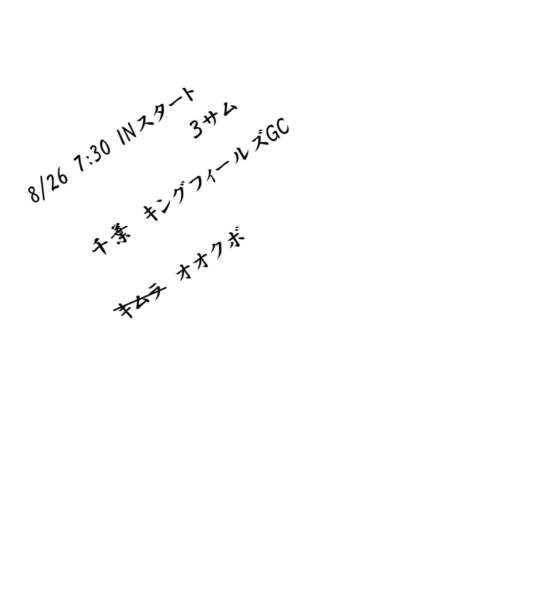
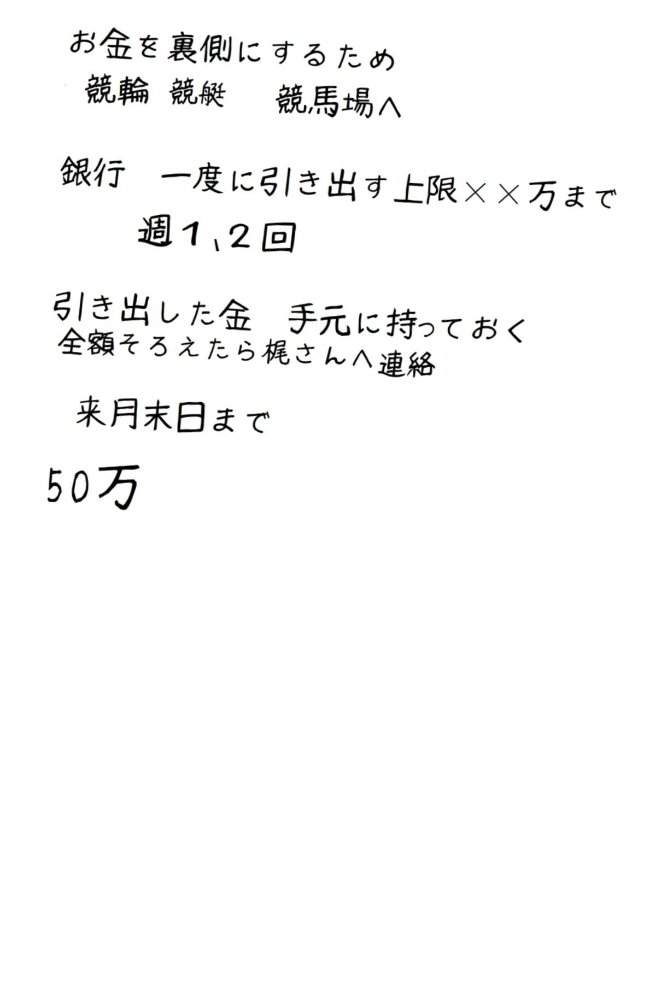

| Beautiful flower for Beautiful girl (people社) | |
| 稽 | |
| (2018) | |

※本内容にて、社会性を考慮したうえで一部を伏せた文面が数ヶ所あります。ご了承ください。
Beautiful flower for Beautiful girl
◆
もくじ
◆
１
りん
２
３
４
・
・
・
１３
りん
１７
りん
１
りん
暗がりで
、嗄
れた声を鳴らされても、年齢は読めない。何となくと性別は、読める。
「ッチ」
舌打ちは、嗄
れた声柄でも普通に立てられ、相当にがさつな女でない限りこれで性別だけは、粗
、読める。月が出す、薄い明かりが僅
かに届く場所で舌打ちのあとに足を止めた、男は嗄
れた声柄で、独り言を吐く。
「電池、切れか」
リモコンを持つ左手には血管が浮き出ていて、なぜならソファーに座る前、立ち居のままでテレビチャンネルをどうにか変えようと手が、心臓より下にあるから。手にある動かないリモコンに向かっ腹を立て、人差し指でボタンをカチカチ、押し続けているから。
「ッチ、ふざ
」
舌打ちを二度したところで、左手に持った動かないリモコンではチャンネルを変えることも、消すことも出来ない。利き手、左、と読める。利き手が左の男は仕方なくリモコンに従って、垂れ流されるニュースを空聞きに、NATUZZI
の黒い本革ソファーへと座り込む。黒い本革が沈む音鳴り、と同時に、４ｋの大画面に映る記者が、うざつく。
〝日本人ふたりを人質に捕って、多額のドルを、日本政府へ要求してきましたが〟黒い、本革も、うざつきを止めなく、〝交渉が難航し、指定された期限が過ぎると、一人を殺害。次は要求を変えて、他国に収監されている同胞の解放を求めてきています。テロリストたちは一体何を、目的としているのか。とにかく、日本政府としては何よりもまず、もうひと方の安否確認が〟
僅
かに届く、薄い明かりを頼りに座り込んだ、男の、灰色のスウェットパンツを穿
いた尻が揺れる度に、うざつく。キャスターも次
いで、〝ありがとうございました。現地での取材、気を付けてください〟うざつきを、止めない。
〝いずれにしても大切なひとつの命が、奪われたことには、大きな憤りを覚えます。続いて、そのほかのニュース〟小粋な、ＢＧＭも共に。小粋なアナウンスと、共に。
〝昨年の１２月、東名高速上り〟〟黒い、本革が尚
も。ただ、この度は深い鼻息も、〝事件と事故の両面で捜査を進めておりましたが、現場の状況などから警察は事件と断定〟
深い鼻息と共に黒い本革の音鳴り、そのほかのニュースも、まだ、まだ。
〝また、児童虐待による悲惨な事件です。大阪府 岸和田市にて、同居する男性と内縁関係にあった女〟「ッチ、うるせえ」
三度目の舌打ちのあと、嗄
れた声のあとは、川向うで起こる火事の、小さな雑音にさえそろそろと、耐え切れなく、今一度ザッピングを試みようと、ボタンを。
「しゃ」
どこかのチャンネルへ向かうより、この、チャンネルから逃げたい心意地がリモコンを動かす。蛮声
。名前は、木村。リモコンが動き出すとボタンを三度押し変え、大して興味もない番組に、落ち着く。加工された笑声
が少々、耳に障る、けれども。
「ン
」
鼻で笑える映像が、暗がりの部屋で独り居する顔を暫くはぎんぎんと、照らす。下
種
な笑声
が起こる度に、ぎんぎんと照らされた顔に栄
える、整った口髭へ鼻息が、何度も。顎
髭
を、左手３本の指が、撫でる。木村。これが本名なのか、偽名なのかはどうでもよくいまは、自分でも知らない間に手放していたリモコンが黒い本革のうえで、うな垂れていて、顎
髭
を撫でた左手も手隙となってソファーの背
凭
れに乗せ上げられ、闊
大
され、うな垂れ、手隙となった体も、うな垂れ、心も、うな垂れ。要するに、本名なのか偽名なのかなど、どうでもいいと前置きしたわけは、いま肝心なのは手隙、ということ。手隙とは、仕事がないということ。仕事もせずに、６ヶ月が経っているということ。だからと言えも、男は、無職とは違う。もし、この男の素行に少しでも興味が、湧
いているなら、これから書き上げる数行を読めばいい。大した興味も湧
いてこないなら、テレビチャンネルを変えるように、ページを捲
れば、もしくは、閉じれば。
本名 不詳。年齢 推定３５歳。容姿、端麗。職業 強請
。元暴力団。最終学歴 慶応義塾大学経済学部 卒。独身。年収 不明。
ソファーの背
凭
れに闊
大
されていた左手も、じきに起きた三角筋の張りと、下
種
な笑声
への飽きのせいで、下ろされる。下ろされると視線が画面に向けられたままに、知らない間に手放していたリモコンを、手探りしようと血管を、浮き立たせ、黒い本革のうえで、彷徨
う。彷徨
う手の甲から伸びる５本指、それぞれの基
節
には、タトゥが、彫られている。
親指 Ｅ
食指 Ｒ
中指 Ｏ
薬指 Ｉ
小指 Ｆ
ＦＩＯＲＥ
。
イタリア語。意味は【花】ただ、薬指のＩだけは、スカルリングで、隠れて見えなくＦＯＲＥ
。英語なら、危険を知らせる、合図。
「
」
Ｉを、隠すリングは髑髏
が、口を開けて笑っている。開いた目は、悲しんでいる。笑う口と、悲しむ目、ふたつの奥を覗けば、夜。ここは夜、ここは、超高層マンション三十九階。下界に散
蒔
かれた、芥
と光線が、醜くも綺麗に、見える。下界に惨
然
と広がる芥
な夜景が醜く見えるわけは、心が、醜いから。燦然
と広がる夜景の光線がそれでもどこか、綺麗に見えるわけは醜い心のどこかに、僅
かに、澄んだところが、あるから。今夜の空は、雲が、少ない。上界
にある十三夜の月は、澄んでいる。詩を詠
む誰かは澄んだ月を唄う月、と詠
む。嗄
れた声柄の男にそんな心は、ない。けれども
、じきに起きた下
種
な笑声
への飽き、のせいで、消されていた４Ｋの、前に置かれているCASSINA
のテーブル、その無駄に大きいテーブルの前に置かれている黒い本革には既に、心ない男の姿はなく、「
」姿は、広大な外景をそのまま嵌
め込んだような窓辺に佇
んで月を、見ている。笑う口と悲しむ目をしたスカルリングで、分厚い窓ガラスをカチカチ、鳴らしながら。
「
」
カチカチと、鳴らしながら悲しむ目で、小さく口を、開けて息を、吐く。月へ、溜息。窓ガラスの曇りは一瞬で失せて季節は、夏、と読める。男は今さら、殊
さらに、曇りが一瞬で失せる窓から見える、下界に散
蒔
かれた芥
な光線などは、見下ろさない。今さら、遠くに見えるベイブリッジなども、眺めない。飽きている。飽きていても月だけは、見上げる。見ずには、いられない。突然のこと、スウェットパンツの前ポケットで何かが、蠢
く。不快な感触と耳障りな音で電話と知ると、窓ガラスをカチカチと鳴らす音を止めて忍ばせるよう左ポケットへその手を、入り込ませて長い、１秒を使ってスマホを取り上げ、画面に映る十一桁の番号を、目に。番号しか表示されないわけは、アドレス帳に登録された記録
がないから。頭に記憶
してある、必要な番号、上七桁で、誰かと見知るから。仮に、上七桁が全一致した、別な、見知らぬ番号から掛かってくる確率は１／この国の人口数より遥か超える。男は、元暴力団。元、インテリやくざ。どうやら、掛かってきた番号、上七桁は見知らぬ誰かの番号と一致していない限り、見知りらしく、スカルが纏
わる手で握り締められたスマホは、こちらも辛うじて５本の指が残る、右手、その食指で、通話ボタンが押されて、口元に。物語は蠢
き、始めている。
「何？」
嗄
れた声を、曇りが一瞬で失せる窓ガラスに、反響させた。それからは、受話器から漏れ出してくる、古びたラジオのような、〝梶
です、おつかれさまです〟 声音
へ端的に、応える。
「仕事の話？」
〝はい。病院の、件〟
「そう。何だって？」
〝払うって、いってます〟
「
そう。なら現金
で、受け取って」
〝わかりました〟
「相手に、伊勢丹の紙袋、二枚重ね、って伝えて」
〝はい。あの、受け、取り方？〟「この前と一緒。どこかの駅前か、コンビニで屯
ってるガキ捕まえて、やらせて」〝はい〟
「ガキに萬札、３枚で、いいか。３枚渡せば、やるでしょ」
〝はい〟
「で、先方、いつ払えるって？」
〝明後日には、払えるって、言ってます〟
「なら、明後日。四日、午前１１時にそこの病院の、総合待合室」
〝わかりました〟「その時間、そこ混んでて、先方が場所移動しようって言っても、移動しないで。その場で、受け取って」〝はい〟「それと、カネ持ってくる人間、たぶん、２人で来るから。あと、ガキが、カネ持ち逃げしないように、ちゃんと見張って。ガキに、カネ受け取ったら頭下げろって、礼儀も」〝い。わ・・・し〟「あと、もう一つ。カネ、持ってた方の顔、覚えておいて。その人間、医事課長だから。あとで幾らか見返り
報酬
」
僅
かに、届く、薄い明かりに照らされた、「
」
場所で、電波が、〝・・・〟
どちらかの電波が悪ふざけ、「
」
悪ふざけが暫し、続くから。
「かじ？もしもし？」
〝・・・〟
「
」
〝・・・はい〟治まるなり。
「最後、確認ね」〝はい〟
「受け取ったカネ、いつもの２つ、なあ、間違えんなよ。いつもの、２つの銀行に、振り分けて、入金。すぐにネットで、メインに全部集めて」〝はい〟
「あとの細かい、段取りは、任せる」〝はい〟「じゃ、よろしく」〝はい、お・・・〟
「っと、梶。おい、かじ」
〝・・・〟
「切れたか」〝いや〟「おう」
スカルが、再びと、カチカチ。分厚い窓ガラスを鳴らし、始める。
「梶よ、明日、娘
の、誕生日だろ？」
〝ええ。はい〟
「誕生日、プレゼント。俺も、買ってあっから、娘
に渡してやって」
口元が、僅
かに、届いている明かりほど薄く、綻
ぶ。もし、この男の素性に少しでも興味が湧
いてきているなら、これから書き上げる十数行を読めばいい。大した興味も湧
いてこないなら、テレビチャンネルを変えるよう、ページを捲
れば、もしくは、閉じれば。
本名 不詳。年齢 推定３５歳。容姿端麗。職業 強請
。元インテリやくざ。最終学歴 慶応義塾大学経済学部 卒。直轄の部下にひとり、梶、という男を持つ。この男の名前も本名なのかは分らなく、分かることを書き連ねるなら梶という男、木村に怯
えている。木村の能才
と生々しい残酷ふたつに、怯
えている。強面な顔で、どら声で戯言
を、気心知れた野郎に時折と酒場にて零
す様子から怯
えを、垣間見る。酒場。強面、どら声。戯言
。
「俺は、ぜっ、てえ、上司には逆らえねっ。俺の上司、むかし暴力
団員
だった頃によ、約束守らねえ取引先の人間を、マグロ漁船に乗せんぞって。あ、乗せる、って言っても、よくある、脅しのあれじゃなくてマジで乗せて。んで、船が出て、しばらく経ってから、錨
の腹に、そいつ縛り付けて。てか、睡眠薬飲ませてからね。で、そいつが、目覚めたら、錨
下ろして、船をゆっくり、走らせんだよ。錨
下ろしても船って、けっこう、走っから。すげえ音、鳴っけど。んで、錨
が、海の底に沈む前に、死ねりゃいいけど、海の底に沈むまで生きてたら重み、やべぇだろ。で、引きずられたらどうなるかって話。まあ、引きずり終わって上がってきた錨
には結局、何も、残ってなかったけど。んでも船長が、俺の上司に、錨
下して、怒
り、治まりましたか、なんて言ったら俺の上司よ、小さく笑ってよ。んでも、目が、怖ぇんだよ。なんか、怖えんだよ。頭もキレっから、マジで怖え。そうそう、死んだ取引先の人間、作業中に、海に落ちた、ってことにしたら労災下りて、そいつの家族にも幾らか入ったみたい。みんなハッピー、てか、死んだそいつ、たぶん小魚の餌になってその小魚、マグロの餌になって、今頃そのマグロ、俺たちが喰ってっかもな。食物連鎖って、やつ？もう一皿、マグロの刺身、頼んじゃう？」
分厚い、窓ガラスをカチカチと鳴らしていた手は疾
っくに、下ろされていて。
「
」下ろされているベッドで、うつ伏せに眠る木村は、横顔を、枕に、深く沈めて体を、休めている。枕の脇に下ろされている左手、その甲から伸びる５本指それぞれの基
節
には、Ｆ
ＯＲＥ、タトゥ。
６日間、つけっ放しの冷房に、うつ伏せの体が冷やされている。ジム通いの鍛え上げられた肉体が、ジャガードで織られた黒いシルクのシーツに覆われていても、冷やされている。６年前に、取り換えて以来ずっと閉じられていないFISBA
のカーテンが両隅に追いやられている大窓からは、いま、唄う月は失せて踊る、太陽が燦々
。それでも体は、冷やされている。もう、昼。男振りな顔に栄
える整った口髭が射し込む陽に、ぎらぎらと照らされて浅い寝息で微かに、撫でられ。ここは、超高層マンション三十九階。下界に広がる港の波立ちに乱反射する光と芥
が、燦然
と、見える。先程から、バイブレーターが５回、蠢
くと切れ、これを７分置きに、二回繰り返され。ぼんやりと気付いていても木村は冷えた体を、射し込む陽に、ぎらぎらと照らされながら、休めている。
「んー」
冷えた体で休んでいるから、「っン」意識は、起きていて、そろそろと瞼
が。
悲しい目を開けたスカルリングが、纏
わる指で、鼻先を軽く、掻
く、丁度、ドアホンから呼び出し音。
「んー」
ドアホンからの、呼び出す音のせいというより、眠りに飽きたから、起き上がる。シーツのうえで胡坐
を、かく。スウェットパンツのポケットからスマホ。目にする誰もが羨
む贅沢なロビーを、背景にした、目にする誰もが目を逸らす強面の映る画面を、観る。答える。嗄
れた声。
「おはよ」
〝おは〟木村、「っン」鋭く。
「ここ来る前に、電話、してくんな。これ言ったの、今年に入って二度目」
強面の言葉を遮って、刺すような、戒め。刺されるような障りが耳に入った強面は、まごつく。
〝すいません、あの、木村さんのバイク、洗車〟
見えなくとも、表情を変えない暗面を、強面は言い訳の折りに想像、する間もなく暗面の、嗄
れた声が。
「何、それ？何、持ってんの？」
画面越しに何かを見つけて、刺すような障りを消すことなく話を、散らかし、始める。話が散らかっても尋ねられれば、〝これ？〟強面を、諂
う笑顔に、大きく移して大きな、白いビニール袋の、持ち手を、辛うじて残っていた左手３本指、親指、食指、中指で握り締め、〝お土産〟もう片方の、辛うじて５本の指が残る右手で底を支えて肩まで迫り上げ、土産を、可愛げに、振る。梶、ガサガサ。画面を覗いている暗面は、嫌悪
な気色となってベッドから降る。寝室を出る、と。
「そう」と答え、〝はぁい〟と答えられ、諂
う大きな笑顔を消さない気色に嫌悪を消すことなく、リビングへと向かいがてら画面を、操作、「自動ドア、開いた？」これで、刺されるような障りを薄めた強面の梶は、〝開きました。すぐ上が〟いま、リビングに足を入れた木村は、嗄
れた声を、「っン」咳払いを、喉の奥が詰まったような感覚を取り払い、強面の言葉尻を聞き届けることなく画面を、消す。
「あの野郎、電話、っン。してくんなって」
さて、何気に、繋がった空にある夏雲を、跨
いで、違う場所へ。
ここは、ＪＲ山手線内回り、東京駅１０時３５分着の、Ｅ２３５系車両内。物語が蠢き始めて、初めて、季節を感じる。車両のドアがじきに開くと冷気が、逃げるようにホームへ抜けて、今度は蒸す風が、乗り込んでくる。サラリーマンやらと共に。サラリーマンやらは汗に湿
とる様々な顔。汗に湿
とる、初々
しい顔、湿
とる、営々
とした顔、湿とる、揚々
とした顔、森々
とした顔、惘々
とした顔。見知る顔同士、見知らぬ顔同士。ただ、見知らぬ顔同士も、見知る顔同士も互いの内情までを深く、見知ることはなく、そもそも深くを、見知ろうとはしない。たとえば見知る顔同士、汗に湿とりながら営々
とカネの話に華を咲かせ、うち一人は日頃から不貞
を重ね、その妻でさえ陰で、思慮のない不浄に身を置いて一緒にカネの話に華を咲かせる一人はそれを知るも、当人は、妻の不浄を知らない。たとえば、湿とりながら揚々
とシステム手帳を覗く一人は娘
が、汗に湿とる見知らぬ男と手を繋いで街を乱りに徒歩
き、泡
のカネに溺
れていることなど知らない。見知らぬ、隣り合う初々
しい集団も、当然、それを見知らない。縒
れたネクタイをして、解
れた糸くずが半袖から垂れるワイシャツを身に纏
った一人が、動き出す車窓の景色を惘々
と、見つめながら２分後、神田駅で下車することを、前に立つ森々
とした紳士は当然、知らない。惘々
とした顔に何かは、窺
い知る。内情までは、深く、見知れない。
２分後。二度
と、繋がった高い空にある夏雲を、跨
いで、違う場所へ。
ここは、下界に散
蒔
かれた芥
と光が、醜くも、綺麗にも、見える三十九階。下界に惨
然
と広がる芥
の喧噪
と、燦然
と広がる光の波立ちが醜くも綺麗に、見える、窓辺に立つ木村は今さら、殊
さらに見下ろさなく、遠くに見えるベイブリッジなども。それでも、雲の峰だけは、見上げる。飽きない。詩を詠
む誰かは飽きない雲を、旅の雲、と詠
む。男に、その心はある。ここに季節はない。季節がない場所にいる、心入
る男に・・・、心ない木村に、「
」やっと聞こえてきた、口を垂れるような玄関ベル。握り締めていたスマホで玄関先の背景と強面を確認。心なく無言で画面を消して玄関ドアへ向かう。強面は、外側からは見えなくても、やがてドアの向こうから聞こえてくる足音で身を、引き締める。鍵の開いた音がすると気も、引き締めて３秒、待って、ドアを自ら開けて、中へ。決め事。
３秒前。三度
と、繋がった高い空にある夏雲を跨
いで、違う、場所へ。ここは、ＪＲ山手線内回り、神田駅１０時３７分着の、Ｅ２３５系車両内。物語が蠢
き始めて再びと季節を、感じる。ドアが開くと、人ごみと共に外へ流れ出す、冷気が、ホームの蒸す空気を押し潰す。共々人ごみも潰し合い、中には、様々な顔。縒
れたネクタイをして解
れた糸くずが半袖から垂れるワイシャツを身に、纏
う、惘々
とした顔なども。もし、この男の素行に、少しでも興味が湧
いてきているなら、これから書き上げる数行を、読めばいい。大して興味も湧
いてこないなら、テレビチャンネルを、変えるよう。
佐古 剛 ４２歳。会社員 証券業。年収３５０万円。独身。今朝は職場へ行くも、３日前から続く体調不良で、早々と、早退。その足で医院へ向かうところ。
医院へ向かうために駅の、西口を、降る。降りると、立ち並ぶ雑居ビルがつくる日陰と、ビルとビルの隙間から射す日向
が交互にある、通りを、「ハァ」汗に、湿とりながら昨日の、雑踏がつくった汚れを踏んで、「ハァー」いまの雑
多
がつくる臭いと音を随
に真っ直ぐ行って角を、一つ曲がって５分後、雑事に巻かれたまま、目的地。医院へ。同時刻、違う場所では梶が、トイレから出てきた木村が、黒い本革に腰掛けると自分は立ち居で、業務の報告を早速と、告げる。酒臭い、どら声で。
「おはざす。これ、確認お願いします」
ごつごつとした手に、ごつごつと持った、迷彩色カバーを掛けた７インチタブレットを、手渡す、なり。
「産廃業者の、カガヤ美
創
。遅れてた、六百萬です」
すっと、タブレットを左手で受け取るなり、ソファーに深く尻を沈めて木村、まず。
「臭せえ」
５本指が残る、右手を、慌てて上げて口元を隠す、梶は。
「すいません」ふためく。木村、悪臭よりもまずはと、受け取った７インチ画面を、肘掛けに置いてＦ・Ｏ・Ｒ３本指で顎
鬚
を撫でて、報告を。
「
」
無言。となった中で、ソファー脇で、梶が。
「・・・」
梶は、無言となった中で、床に静座
しようと両膝
を鳴らして腰を、「失礼、しまーす」下して、両手をつかえて木村は、画面に視線を向けていても。
「ソファー、座っていいよ」酒臭い、どら声が。
「すいません」
下したばかりの腰を上げて小走り、後ろを周って右へ、座ろうと、「ちょっ」すると、「ケツ、見せろ」
注文通りに、尻を。木村、「いいよ、座って」
木村の、金物が付いたズボンで黒い本革に座ることを心地よく思わない気色を深く、見知る、心遣いで選んだズボンを穿
いた尻を、下ろす、梶。紺色のスーツズボンを穿
いた尻を、別室にある長椅子に、下ろす。佐古は次
いで、距離を置いて横に座る、艶
のある髪を結い上げた白衣姿の人影が放つ香りと、声、「はじめまして」鼻と、耳に、受ける。
ここは、繋がった高い空にある、夏雲を、跨
いだ、同時刻の違う場所。艶
のある髪を結い上げた心理士が、女性らしい穏やかな声を、続けて。
「佐古さん、左の、袖口。糸くず付いてますけど」
頬の痩
けた、佐古は、覇気
の失せた虚ろな、声で。
「糸くず、引っ張ると、袖が解
れてしまうので。あとで、ハサミで切ります。教えて頂いて、ありがとうございます」
艶のある髪を、結い上げた心理士は、女性らしい穏やかな口調を、続ける。
「そう、ですか。では早速ですが。先ほど受付でお書き頂いた事前問診票を拝見させて頂きましたが、お久しぶりの来院とお見受けいたしますので診察を円滑に行うため、医師との面会前にわたくし、心理士のカトウが少しだけ、問診いたします。よろしいで、しょう、か？」
寝ぐせの佐古は、覇気
の失せた、虚ろな声で。
「はい。あの、すみません。その前に、質問。いいですか？」白衣の下、艶
やかな色のシャツを着た、心理士が、女性らしい穏やかな、口調で。
「どうぞ、遠慮なく、何でも聞いてください」縒
れた、ネクタイをして、解
れた糸くずが、半袖から垂れるワイシャツを身に纏
う、惘々
とする佐古の、覇気
の失せた虚ろな、声が、「失礼ですが、カトウさん」「はい」
「認定、心理士ですか？臨床心理士、ですか？」
「あ、あの。わたし、認定心理士です」
佐古は、覇気
の失せた虚ろな声で、淡々と、事前に用意された質問に、答える。迷彩色カバーが掛かった、７インチタブレットにＥの指と、Ｒの指を触れて、Ｏの指を、スライド。
「いいよ、いいね。おつかれさま」
一つの仕事終
いを、告げる。告げると、嗄
れた声を僅
かばかり、改め。
「っン。明日の、大口の受け取りも、よろしく。それと、今月の給料、六十万でいい？」
返される、タブレットを両手で、ごつごつと受け取る梶は、隣で、どら声で。
「はい。あざす。勿体
ない、くらいっす」不意に告げられた額に頭を下げて酒臭く、了承。木村は労いと、申し訳なさ、２つを優しく、付け加える。
「悪いな。ボーナスも、福利厚生もないのに」
労いと申し訳なさ、２つを付け加える心入
る、優しさに今一度頭を下げて深々と、言下に、「とんでもないです。っと」答える。
読み過ごされないようここに一つ、書き添える。
鎬
を削る渡世
で生きる木村は、自分を慕
い契
りを籠
んだ梶へ、度重ね、叩き込んだ大事が、幾つか、ある。うちの一つ。
人に、頭を下げるな。カネに、下げろ。渡されるカネに下げろ。人は裏切る。カネは、裏切らない。人は見下す。カネは、見下さない。カネを渡す人に喰われるな。喰われる前に、喰え。カネに、喰われるな
世間は大事を、笑う。ただ木村も梶も、元、暴力団。
十分と満たないうち、席を汚
していると察してこれ以上、ふたりでは別室に留まってはいられなく心理士は、数人が待ち並ぶ場所へ佐古の席を改め、口重
に、言付け。
「こちらで少々、お待ちください。大変、失礼しました」
頭を、下げられた佐古はそれから惘々
と既に、もう４０分以上は長椅子に座り込でいて、医師との面会を、待っている。両足を惨
めに揃えてビジネスバッグを太
腿
に載せ上げ、バッグの中身は、単純な雑事を数目押し付けられたと見受けられる書類が束となって、入っていて顔付きは、垂れた目と、眉と、時折漏れる、溜息口な。４０分以上前に、四度
、繋がった高い空にある夏雲を跨
いで、黒い、本革へ。
どら声が、「木村さん、そうだ」
目の前にある、無駄に大きいテーブルに置いた土産モノを、思い出す。思い出して酒臭く、「オイショ」体を、前屈みにして３本指で、奥にあるモノをガサガサと、手繰
り寄せようと、「イ、ショ」無駄に大きい、白いビニール袋によって幾重にも包
まれたモノを、ガサガサと、やっと、手繰
り寄せると。
「どうぞ」
差し出す。差し出されて木村。
「何？中身？」
梶。
「刺身、っす。マグロの」
「どうして？」
繋がった、高い空にある夏雲は、跨
がない。梶は、どら声で。
「大間の、マグロです。朝一、築地で買った切り身、包丁人のところに寄って、刺身に、してきました」
という脇からの、気色に、「
」
数秒、口を噤
む暗面は目付きを、安
危
な様
に、変える。弦を切るかのように空気をぴんと張り、詰める。張り詰め。
「で？何の、土産？」
察する、梶はどら声で、慌てなく。
「娘
の、誕生日プレゼントのお礼、早めにと、思って」
張り詰める空気は、毎回、毎度のこと。慣れているから気色を、誇張した温和に、変えて梶。
「大丈夫です。思ってるようなもん、入ってないっすから」
とは言うものの、刺す、視線を唐突に横に向けてから、「そう」と口癖を、呟いて次
いで軽く。そして頭を傾げ、「そうか、ちょっと、待ってて」黒い、本革から、立ち上がる、木村は。
「豊臣の茶葉」捨て台詞
を残して後ろへと、消えていく。
戻って、来る。
木村は、湯呑み茶碗２つと、急須と、醤油を垂らした手塩皿を載せたお盆を、持って、ひょろひょろと後ろから。
「わすれた」黒い、本革に座る前に再び後ろへと、どら声、「割り箸、入ってます」
「そう」
下界から、唐突、誰かが燥
ぐ、大声が。騒
めきが聞こえる。ここは超高層マンション三十九階。それでも地上の耳立たしい騒
めきが、時折は聞こえてきて間を置かずに近間でも、耳立たしい雑音が。気にすることなくソファーに尻を落とすと、お盆にあるものをテーブルへと配って、幾重にも包
まれている白いビニール袋に手を掛けて初めの一重結びを、解
く。と。
「なんで、こんなに割り箸入ってんの？」
「あ、いや、店のおやじが、勝手に入れたんで」
やまない雑音に、意識が囚われるから流石
に、嫌気が差して木村、梶に、言う。
「お前の、電話だろ」
「ええ」
「出ろよ」
下界から、騒
めきが二度
。
「いい、っすか？」
「いいよ」
雑音も、まだ聞こえる。
「じゃ。ちょっ。失礼します」
下界から、騒
めきが立て続けに、三度
。同時に、黒い本革から立ち上がろうと梶、木村は。
「ここで、出ろよ」
「え。っと」
「切れちゃうよ。出ろ」
「はい」
返事のあとに透かさずと、右手で、ズボンの前ポケットからケイタイを取り出して二つ折りを開いてディスプレイを見下げ、親指で、通話ボタン。舌打ち。舌打ちのあと、小声で。
「んだよ、仕事中だよ」
雑音は、消えているから静かな場所。静かな、穏やかな場所で、左手の３本指で、口元を隠してもっと、小声で、梶、「あとで、開け直す」
先方の言葉を一つさえ聞こうとはしなく耳元からケイタイを、下ろす、間際に電話口から、〝きょう！〟
漏れてくる、早口な女の、〝娘
の、誕生日、分かってん〟金切り声を、切る。序
でに、画面にある着信メールを確認しようと、覗き込む。
「すいません」
不器用にボタンを、弄
り始めると下界から、騒
めきがまたする。下界にある、内輪揉めを横目に、幾重のビニール袋をすべて開け終えていた木村は、氷詰めされていた紙パーチの中身を、刺身を、覗き込む。それからは、今し方に置いた湯呑み茶碗を顎で指して隣に、促す。
「茶、冷めっから、飲め」
下界から、騒
めきがまたと聞こえて梶は、ケイタイから、隣に視線を寄越して頂く感謝を、「・・・」無言で、こくりと見せ、湯呑み茶碗を５本指で持ち上げて視線を、画面に、戻して。
「今日、下、うるさいっすね」
どら声は、酒臭い。酒臭い、おつぼ口へ茶を、運ぶ。嗄
れた声が、答える。
「有名人でも、来てん」「熱っ！」
口元から、「熱っ」湯呑み茶碗から、銘茶が、滴的
と。思わず溢
す、どら声。
「ッチ」
舌打ちも、どら声で溢
す。
「すいません」
直
謝
りも。黒い本革に零
れた銘茶に気付いていないのか木村は、テーブルへ取り置き、散
けていた十数膳の割り箸から、二具を摘まみ上げて一揃いを脇に、手渡そうと、「お、布巾
か」
黒い、本革へ、そーっと視線を落とす強面の気色が徐々に強張
り始めるなか立ち上がって、キッチンへと二度
、消えていく。
「やべっ」
おろおろな小声も。
「や、べえ」べいべい詞
も繰り返し溢
す強面は、どうにかして難事を切り抜けようと上着の、右袖を、辛うじて残っていた３本指で引き下ろし、布巾
代わりにしようと寸前に遠くから嗄
れた男の、大声が、小さく、聞こえる。
「こぼれたお茶、変なモンで拭くなよ」
「はい」覇気
の失せた、虚ろな声が。
「はい」
半開きにされた、診察室のスライドドア、その向こうから顔を覗かせた看護師の呼び出しに、答える。佐古は、すっかりと人気
の失せた待合室で、独り、のっそり、立ち上がる。のそのそと、中へ。
ひょろひょろと、後ろから二度
、立ち現れた男は、黒い本革へ静かに座って。脇に、「どけ」
退
こうと、急
き立つ梶は、鎬
を削る渡世
で生きるための大事を、ここでまた一つ、「梶よ」叩き込まれる。嗄
れた声が、「っン」嗄
れた声の、聞こえを、よくしようとでもするつもりなのか咳払いを、もう一つ、「ン」鳴らしてから黒い本革に、静かに置いた尻を静かに、沈め
、
髑髏
を肘掛けに乗せ上げてＯ・Ｒ２本指でたんたんと、連音を、始め。
「でかい失敗はな、小さなミスが、３つ」淡々
、「３つ、３つな、重なっと、起きんだよ」
梶、阿
るように、返事。
「はあい」
阿党
う立ち居へ男は、続ける。
「３つ。いま自分がした３つ、言えっか？」「えー」
「いい、俺が言う」
「す」「一つ目な。まず、ケイタイ弄
りながら、何かしようとしたこと。次な、茶飲むとき、熱いか、確かめないこと。最後」もう一つと、「っン」そうして。
「こんな量の刺身、誰が、喰うんだよ」
超高層マンション、三十九階。下界に散
蒔
かれた芥
と光線が醜くも、綺麗にも、見える。
心療する部屋とはいえ、内科や外科と見た目が然程変わらない、診察室。そんな場所で、らしく白衣を着た医者が、斜
に座る姿勢から、待ち草臥
れた素振
りを隠して入ってくる、患者に。
「あら、佐古さん。久しぶり。どうぞどうぞ」
医者、らしからぬ、気さくな様子で。明朗な、様子で。
「すわって、座って」
話し、掛けてくる。長年使い込んだ眼鏡が縒
れているようにも、見える。医者は再び。
「佐古さん、座って」
あけすけな様子で着席を。促されて溜息か、呼応
か佐古は。
「はい」徐
に、すぐ手前に見えた丸椅子に、ぎこちなく。まだ、腰掛けられない梶は、腰掛けながら銘茶の垂れた黒い、本革に何かを噴
き付ける、男に。
「何っすか？それ」
「ん？」
嗄
れた、声に再び、梶、「それ」嗄
れた声は、答える。
「水素水」
「水素水？」騒
めきが下界から唐突、今日一大きく聞こえてくる。男は。
「知ってっか？」
「いや」
首を、傾げる立ち居にとりあえずは、「いいよ、座って」
拭き終え、綺麗になったソファーを顎で指して座ることを、促す。促すと。
「これで、一儲けしようと、思ってよ。飲むと、体にいいって売りで」
「へえー。飲むと、体に？」「知らね」
右手に持ったスプレーと、左手に握った布巾
を片付けに男は今度は、自分が、立ち上がる。と、鎬
を削る渡世
で生きるための大事を、また、一つ。いまは、心入
る優しさ。
「梶よ。色んなもんに、アンテナ張れ」
言葉尻を、捉えられた梶は酒臭く。
「はーい」返事をしながら尻を、落とす。男は戯
と、いい加減な返事をする梶へ、梶の頭へ、シュッと、水素水を浴びせる。見えなくても、にやりとした男を、想像する、酒臭い、梶。
高い空を四度
、跨
いだ、小昼の頃の話。
「佐古さん、久しぶりですね」
明朗な問い声へ、「はい」虚ろな声が、「お久しぶりです」
「ゴルフ、再開、しました？」
「あ、いや」
「あらら、あんなスコア、出せるのに。勿体
ない」
「先生、覚えて、いらっしゃったんですね」雑音も、騒
めきも、ない。
「当然です、当然。佐古さんからスイングのコツ教わったおかげで、ボール、芯で、捉えられるようになったんで。佐古さんには敵わないけどアベレージ、なんとか、９０台になって」
両手が、布巾
を、絞り上げるような形になって握りを見せつける、医者を目にした佐古は、覇気
が、失せていても、労う。
「よかった」「人の、欲って」
世間話をやめない、あけすけな医者、「尽きないもので」
内科や外科と、見た目が然程変わらない、心療する、診察室で。
「ドライバー、なんだけど。狙った方向へ確実に、どうしても打ちたくて」明朗を。
「・・・」心做
しに、虚ろな声が明朗に、引きつけられたか。
「コースは、意地悪に造ってあるので、ティーングラウンドも、少し、傾けてある場所が、あります。打つとき、前後と、左右の平行を、まずは意識して」「佐、古、さん」
「はい？」
「ぜひ、今度、一緒に、回って下さい。以前もこの約束したけど結局、回れなかったから、今度、こ、そ」
雑音も、騒
めきも、ない。
「えっと」「約束ですよ」
「え、っと、ええ、はい。あの、えっと、すみません診察の、時間」
「ああ、大丈夫。佐古さんが来るっていうから、あとのコマ、２つ、空けたんで」「そ」「難しいな、ゴルフは。一度でいいから佐古さんみたいに、７０台で、まわってみたい。でも、同じおカネ払ってるのに、打つ数が少ないっていうのも、なんか、損した気分ですよね。ははは」
付け笑いを明朗に、診察室で鳴らす、あけすけとは裏腹に含み笑いを殺す佐古は、生返事。
「あ」「佐古さん、仕事の調子、どう？」
「あ、なんとか」佐古は目を、垂らして口を。同じように口を、噤
んだ医者は、「・・・」
佐古、医者の足元を、見る。
間が、「・・・」
空く。
「・・・」
空くから虚ろが、虚ろな声で、答える。
「給料は、安くなりましたが、こんな私でも、会社は一応、雇ってくれて、いますので。なんとか」雑音も、騒
めきもない。
「ほうほう。そう、ですか。体の調子は？」
雑音も、騒
めきもない診察室で。
「それが」語尾を潰す、気配。雑音も、騒
めきもない診察室でそれを患者に三度ほど感じると縒
れた眼鏡を掛け直して斜
に向けた姿勢はそのままに、医者は、気付く。
「調子、崩されたきっかけ、何か。大きな、原因。ゆっくりでいいので、聞かせて、もらえます？」
ここからは、暫く、相槌
も、頷
きもなくなる。それほどに聞き込む。患者との隔たりを越えて医者は。心療する部屋とはいえ、内科や外科と然程見た目が変わらない診察室で。隔
てた待合室に次々と他の患者が訪れても、暫くは。それほどに。
高い空を五度、跨
いだ、小昼の頃の、話。
「誕生日プレゼント、車に乗せてあっから。酒抜けたら、車も乗って行って、いいからよ。誕生日くらい、いいもん食わしてやれ」
MASERATI
／GHIBLI
・S
Q4
のキーを手に持った男が、GHIBLI
はイタリア語、意味は【砂漠に吹く風】と知らない、梶へ。
今夜の月も、唄っている。唄う月にしてみれば、下界に散
蒔
かれた芥
や光線など醜くも、綺麗にも、見えていない。下界の夜景など気にも留めていない。詩を詠
む誰かは下界を気にも留めない、月を、憧れの月、と詠
む。人は唄う月に憧れ、稀
に、夜を見上げる。下界の芥
など気にも留めない、唄う、澄んだ月に憧れて夜を、見上げる。縒
れたように、眼鏡を掛けた男も、白衣を脱いだ凡人へと形
を変えて自転車をカタカタと鳴らしながら雑踏、雑多、雑事がつくる塵
や埃
が舞うネオン街で夜を、見上げ。見上げたあとに心ごと、下界に、落とす。薄い明かりが僅
かも届かない場所で、落とす。いつもなら、薄い明かりが僅
かも届かない場所でも平然なのに今夜だけは珍しく、小昼に巻かれた芥
を引きずる。家路を。頭
重
に囚われながら。ふと、汗ばむ感覚が背中を触ると夏の夜を感じる、尚
も、患者の濃い苦悩に心は引きずられていて濃い苦悩は、濃い、芥
の色。引きずる濃い芥
の色は、小昼に佐古が垂らした語りで、窺
い知れる。佐古の語り。医者の心を引きずらせる濃い芥
の、色。虚ろな声が、脳裏にきこえる。
「先週の、土曜日、娘
と妻の、十三回忌でした。妻の親族とはもう疎遠になっているので、法要を営むこともありませんでした。でも、墓参りだけはしようと思って、娘
と、妻のところに行きました。お墓に着いたら、たくさんのお供え物があって、焚かれた線香もまだ半分以上残っていたので、きっと、誰かと入れ違いになったんだと、思って。それで、持っていた花を手前に供えようとしたのですが、なんだか、申し訳ない気持ちになりまして、なので、その足で花、事故現場の近くに供えようと思って、レンタカー借りて。片道、２時間程ほどの道のりでした。それで、供えられそうな場所に着いて、花、供えました。心が、少しだけ落ち着いたので、帰り、サービスエリアに寄って、軽く何かを食べようと思って、あの、券売機の前でメニューを見てたら、後ろから、早くしろって突然文句言われて、慌てて選んで、それで、食券をカウンターに渡して、すぐに横に逸れたのですが、え、あの、文句を言ってきた男が、わたしの横に来て、わたしを睨
んできて。そいつ、酒臭くて。そいつホント、本当に偶然で、えっと。あの、事故の、加害者で。あの時も、少しだけとはいえ、酒飲んで、居眠りして、それで、渋滞で止まっていた私たちの車に突っ込んできて、娘
と妻、さ。なのに。そいつ。でも、たぶん、その、私の、顔を覚えていなかったんだと思います。だから、せめてもと思って、食べ終わってから後をつけました。あんな事故起こしたんだから、きっと誰かといて、車の運転はしないだろうって思って。でも、結局、お分かりと思いますが、運転席に、乗り込んでいました。助手席に、女性も乗っていました。ぼ、わたし、結局、何も言えませんでした。見過ごす、だけでした。本当に偶然で、突然、だったから。それと、と、縁
石
の向こうで。あ。すみません、あ。話、止めないほうが、いいんですよね。えっと、あの。そ、パーキングにある、縁
石
の向こうで血だらけになった妻と、真っ黒になった娘
が、立っていました。苦しそうでした」濃い、芥
の、色。
２
りん
今朝も太陽は、燦々
と踊る。踊る太陽も、下界に散
蒔
かれた芥
の光景など気にも留めていなく、そもそも、照り返す自らの光線で、見えていない。詩を、詠
む誰かは自らを照らす太陽を、踊り狂う太陽、と詠
む。人は自らを照らし、下界の光景など気にも留めない太陽と共に踊ろうと、狂おうと度々、昼を浴びる。自らを照らして、下界の芥
など気にも留めない太陽の熱を浴びて、踊らされ、狂う。
艶消しの、黒いヘルメットを被って黒麻の繋
を着込み、凡人へと形
を変えた男は、DUCATI
／DIAVEL
・DARK
に跨
り、スコールを欲しがる乾いた東名高速を、颯爽と下っている。タイヤでアスファルトを削りながら焦げた匂いを残して、陽炎
や、風さえも、置き去りな。DIAVEL
は、イタリア語。ボローニャ訛
り。意味は【悪魔】踊り狂わそうと、太陽が燦々
と光線を照り付けても熱を帯びるだけで平然と、走る。悪魔は図太く、低く、がさつなエンジン音で。まるで、吠えているよう。吠えながら、高速を颯爽と下っている。この【悪魔】という異名に跨
り、熱を溜め込む鉄とコンクリートの喧騒
を抜け、汚
塵
を抜けて、暫く。やがて、ブルーの繻子
を一気に広げ放ったような大空の原風景が視覚から、脳裏までを支配してくると男の心は心地よい単一、となって。だからまだ暫く下り、心は単一となっているから下り続く原風景も単純な青と、白と緑と。空と、雲と森と。まもなく、東名高速左ルートへ入り込み、長針が文字盤を四半周りする頃には忽如
、立ち現れる遠山
、遠山
でも剛
柔
な霊峰
富士
も、目の当たり。
富士は、月より大きい。太陽より、大きい。富士は、月や太陽とは違って下界を見下ろしている。雄大な構えのなかにどこか、怖さを見せる。DIABEL
に跨
る、凡人となった男は霊峰
に息を、呑む。息を呑んでからは吐き出す。これを、圧倒という。男にはまだその心は、ある。ただ、低く、がさつなエンジン音で、圧倒する男の溜息を掻き消す悪魔は図太く、平然と走る。怖さを、知らないから。それとも怖さを、知っているから。
踊る太陽が既にいる、朝、７時９分から２時間ほどを走る道のりの、途中にある足柄サービスエリアに立ち寄った男はスターバックスのレジカウンターから、ダークローストされたスマトラ豆で淹
れたベンティサイズのドリップコーヒー、ホットを、受け取る。受け取る仕草に、男性店員は。
「その、スカルリング」
尋ねる。
「STANLEY
GUESS
、ですか？」
無言で、口元を優しく上げる、仕草に店員は。
「雑誌ではよく見るんですけど、初めて本物」「そう」
鼻に掛かった、色のある男の声が、聞える。男は、色のある声で答えると、持て余すほどの大きな紙カップを手にして今一度、小さく、口元を上げてカウンターを、背に。
「
」
カウンターを背に、店を出ててからは横手にある、踊る太陽が既にいる朝が射している、テラスに置かれた東向きの椅子を、目に。空へ向くと、踊る陽射に眉を細めて、紙カップを持ったスカルの纏
わる指の代わりに手ぶらな右指で鼻先を、軽く、掻く。その手で、斜
に背負った黒のボディーバッグを胸元へと回し込み、座る。座り込んで軽く、１口目を口にしてからは暇潰しにと、通りすがる人たちを空見しがてら細めた眉で、ボディーバッグから荷物を、取り出す、ためにバッグのチャックを開けようと大きな紙カップを横のテーブルへ。仕草を、ガラス越し店内から覗いている店員は目の前の女性客から聞こえてきたホワイトピーチフラペチーノと同時に、男の取り出した荷物も、とかく、気に。男は、店内から憧憬
が注がれていることに気付くわけもなく取り出した荷物を、大きな紙カップを置いたテーブルに並べて、昨日の夕方から落としていた電源２つを、オン。まずは、スマホが、圏外着信３つを知らせて３つ共に、同じ番号。透かさずと折り返し。一呼び、二呼びと透かさず、〝おはざす〟
「ん」
テラスの前を、仲睦
まじい若いふたりが、通り過ぎる。大足を闊大
して座る癖を、改める。この間、３秒。男の無言は、続いている。
〝もしもし？〟
「ん？」これで、安穏に入る男の様
を察した、梶は。
〝仕事の話、いいっすか？〟
「ん」
梶は、色のある男の声が単に、聞えるから。
〝声、治りました？〟
「ん」
〝良かったっす〟
「ん」
テラスの前を通り過ぎた、仲睦
まじい若いふたりが店内に入ってメニューを、見上げる、見下げる、様子を背後に感じる男は。
「
」男に、〝あの、この前の病院の、件。未払いの件、なんすっけど〟
木村に、蠢く音が、きこえる。
「ああ。先方、何だって？」テーブルに置いた、紙カップの蓋を開けるとまだ湯気は、出るから、２口目は据え置き。木村は空へ、向く。
〝それが、不足分の、五百萬。そのうちの、二百萬だけは、今日中に払うって言ってるんっすけど〟
踊る、陽射しに、細めていた眉を瞬く間に、顰
めて、けれども殊
さら穏やかに会話を、続けようと。
「
」眉を、顰
めても。
「
」穏やかに。
「そう。残り、は？」
〝来週中には、払うって言ってます〟紙カップの蓋を、閉める。空を向きながら。蓋から空いた右手、３本指で顎
鬚
を撫で、始める。
「
」
無言が、単に続く。梶、〝奴ら、払う気あるんっすかね？もう、一週間、経ってますけど〟無言を、単に繰り返す木村は思慮を、空を眺めながら深めてもっと会話を、穏やかに。
「
」
続ける。
「払う気？払う気は、あると思うよ。でも、払うカネが本当にないのか、それか、払ってから、面倒なことでもしようとしているのか、どっちか、だよ」
〝どうします？〟
「そう、ね。とにかく、今日の受け取りも、前と同じやり方で、やって。ガキ使って十一時に、そこの病院で」〝はい〟
「この前のとき、医事課長の顔、覚えた？」
〝はい。紙袋、持っていたほうっすよね？〟
「ッチ」
顰
めていた眉が、微動だにせず右手が、５本指となって、テーブルに置かれる。
「ま、いいや。そう、背が低い、男」
〝はい〟不意、背後から視線を感じたようで振り返る。木村、背後のガラスが鏡面のようになっていて、映る、自分の形相
を、見つける。尚
も。
「よう、もし相手が今日、振り込みにしたいって言ってきたら、威
してね」
鏡面の奥を、覗く。
〝はい〟けれども、後ろに視線はなくて再びと空へ、振り向く。再びと眉を。
「あと、何か話、ある？」〝っと〟店内にいる仲睦
まじい若いふたりがまだメニューを、見上げていて、見下げて、オーダーを決め兼ねているなか梶は、〝大丈夫っす〟
それならと、木村は、「じゃ、よろしく」耳元から受話、〝あっ、そうだ、木村さん、もしもし？〟遠音
が。遠ざけていた受話器から、きこえたから顰
めていた、眉を。
「何？」
眉は、微動だにせず、店内にいる店員が、ちらりとするなか。
「何だよ」
〝娘
、が、この前のお礼、言いたいらしくて。電話、代わってもいいっすか？〟
店内にいる、店員には見えなく、「ん」
梶にも見えなく、「いいよ」だから思わず木村は、薄く、綻
ぶ。
〝すいません。奈津
っ〟
受話器に、蠢く音がきこえても、薄く、綻
ぶ。
〝奈津
、ほら〟
部屋を移る足音がごそごそ、まだ、きこえる。
〝なーに？〟遠鳴りで、可愛らしい声が。
〝ほら〟どら声もまだ、きこえる。
〝だれ？〟〝木村さんだよ〟
〝あー、きむ兄
〟
やがて受話器から、どら声は消えて蠢く音も消えて、可愛らしい声だけに。
〝きむ兄
、元気？〟〝こら、木村さん、って言え〟
お構いなく、続けよう。
「久しぶり、奈津」
〝うん。ひさしぶり。き、む、にい〟
「あれ？きょう、幼稚園は？」
〝あ？もう夏休み。てか奈津、もう小学生やし〟
木村は、踊る陽射しに。
「
」
朝に。
〝ねえ、きむ兄
。誕生日プレゼント、ありがと〟
奈津は見えなくても、釣られて、微笑む。
〝ねえ、あのクマの、ぬいぐるみ、奈津の身長と、同じくらいだったん〟
「そうか、奈津、いくつになった？」
〝７〟
「７さい。デカくなったな」
〝ん。この前の誕生日で、７さいになった。あんな、誕生日の日に、きむ兄
にありがとうって言おうと思ったん。けど、パパがムダに電話できないって言うから、言えへんかった〟「そう」可愛げな、〝そう〟
テラスの前を、微笑む木村の前を、仲睦
まじい若い夫婦が優しく、通り過ぎる。いつの間にか闊大
した大足をもう一度、改める。この間、３秒。無言は続いているから奈津も、だんまり。だから。
「奈津、時間があったら、また、バトミントン、しような」
〝いいよ、してあげる〟
「お父さんに電話、代わってくれるか？」〝うん。きむ兄
の誕生日、お返しするね。まったねー〟
ごそごそ、蠢く音が。可愛らしい声が、終わる。
〝すいませんでした〟聞き慣れた耳障りが。色のある男はそれを鼻で笑うよう、「ん」
声を短く、単に返す。テーブルにある大きな紙カップを持ち上げて２口目を、啜
る。３口目を、啜
る前に。
「じゃ、カネよろしく」
〝はい、おつ〟など聞き届けることなく電話を切ってすぐに３口目を。コーヒーの、程よい酸
苦
を舌に感じて紙カップを置いて電源を、オフ。バッグに戻す。次いで、ケイタイを手に取る。電源を、オン。踊る陽射しが照らす画面を覗き込むと、手ぶらな右指で鼻先を軽く。３本指にして顎
鬚
を。仕草を、店内にいる人は誰も気にしてはいなく木村は、ケイタイに１つだけあった圏外着信の番号、上七桁を、妙に気にして顎
鬚
が、撫でられている。撫でる仕草を、やめると視線を脇に逸らし、流し目。そろそろ、７時半が過ぎる。ごそごそと蠢く音が、するはずのない物語はごそごそ、蠢いている。知らぬ間に、穏やかに、卑
しく。
スカル。
Ｉを、隠すリング。
笑う口と悲しむ目の奥を覗けば、夜。ここは、朝。この、心地よい現在
だけは必要以上に思いを巡らす手間を、嫌がる、木村は、踊る陽射しのせいもあってケイタイにある圏外着信の、履歴に。疎
覚
えか、見知らぬ番号かを確かめるためにはそうするしかない。しかしも、間違いなく見知らぬ番号なら決して掛け直すことはない。ということは。いずれにしても、いつもより指は安直に通話ボタン。画面には、０９０ ４０４２その並びも耳元で隠され、一呼び、二呼び。店内の仲睦
まじい若いふたりが漸
くデリバリーカウンターで、ストロベリーディライトフラペチーノ１つずつを、待つなか、四呼び。切る。
唐突に、切ると木村はケイタイを左手に、右手で紙カップを持ち上げて口元。４口目。この間、４秒。
すると。
「そう」
透かさずと、折り返しの、一鳴り。二鳴り店内で、仲睦
まじい若いふたりがデリバリーカウンターから同じものを１つずつ受け取って席を探し始めたと同時に、切られ。
木村
、掛け直す。決め事。
「もしもし」
〝あ、もしもし？〟
ごそごそと、蠢く音が、きこえる。さてと、ごそごそと蠢く音がきこえる受話器から、あけすけな声も。
〝どうもどうも、木村さん〟
きこえると徐
。つまり、木村は、落ち着いているということ。
落ち着いて。
「お久しぶりです」見知りと、察したということで木村を見知る、先方も。
〝ホント、久しぶりです〟落ち着いた、気さくな様子に徹し、〝お元気、でしたか？〟
見えなくとも、長年使い込んだ眼鏡を、縒
れたように掛ける表情を想像する木村はすっかりと、落ち着き。
「元気に、やってますよ。オギワラさんは？」
〝私もね、なんとか、やってます〟長話を、嫌がる木村を深く見知る先方は、ここで、早速、〝久しぶりで、申し訳ないんですが木村さん早速、要件なんですが〟
まだ、ごそごそと蠢く音が、きこえるなかで、早速。
〝うちの患者さんで、ゴルフが、とても上手い方がいるんですけど。ぜひ、木村さんに、紹介したくて。あの、もしよかったら、木村さんのこの番号、その方に教えてもいいかな、って、思って〟
「
」
踊る、陽射しに
、朝に、ごそごそと、蠢く音に、思慮を深める木村を感じた先方は足を止め、〝木村さん〟咄嗟
の呼び掛け。ごそごそと、蠢く音を消したあとは声を、止めることなく、〝あの。私、私の仕事って、ご存知かと思いますが、患者さんの、心の苦痛を取り払う仕事なんです。まあ、内科や外科の医者と同じで、苦痛を、取り払う仕事なんですがね、でも、うちのような心療科は、他の科とはちょっと違って、苦痛のもとを、取り払うことはなかなか、出来なくて。本当は、薬とか、カウンセリングとか、そんなものより、苦痛のもとを取り払ってあげると、患者さんは回復に向かっていくんです。でも、木村さん、ホント、うちの科はそれが出来なくて。木村さん、私、木村さんと同じ、仕事には、私情を入れないようにしているんです。けど、それでも時々、どうしても、我慢できないときがあって。患者さんの、苦痛のもとをね。それを、なんとか、取り払ってあげたくて。でも、私にはそんなこと出来ないから、悔しくて。なんだか、すごく悔しくて、だから〟「オギワラさん」
木村、本筋を、読む。割り込み、「申し訳ないですが、いまの僕の仕事は、あの時と違いますので。それに、慈善事業をするつもりも、ないので」
心ない、色のある男の声を、冷たく、返す。
〝いや、その〟諦めずと、先方、〝私のような素人が、こういうこと言うのも何なんですが、たぶん、木村さんには多少の利益、あると思って、一応電話してみたんです。仕事を受けるか受けないかは、とにかく、この方の話だけでも、聞いてもらえませんか？以前からずっと、うちに通院されている方なんで、身元は、しっかりしてますから。木村さん、忙しいと承知のうえ、申し訳ないですが〟
「
」
本筋を、読み終えた木村は。
「
」割り込むことなく、先方の電話口へ。
「
」吐息
を混ぜながら。
「オギワラさん」先方の電話口には、安危が入り混ざった、〝なにか、面倒なこと、考えてます？〟刺す、声。
「木村さん。私、木村さんのこと、それなりに存じ上げている、つもりですが」
木村の電話口には先方の、溜息交じり。踊る陽射しが増す、テラス前には人通りも増えてきて、仲睦
まじい家族連れなども通り過ぎてこの間、６秒。無言が、単に続くけれども先方も、ひたすらに・・・。
寡黙を、持す。
「・・・」
木村。
「
」
「・・・」
木村は。
「
」
「・・・」
木村は、先方が織り成す単なる無言を、妙に、思い、「そう」先方の諂
う声が、〝木村さん〟二度
電話口から、聞こえると。
「
」
いつの間にか、闊大
していた大足を、微動だにせず。
「
」眉も、「分りました」微動だにせず、そして。
「その方から、とりあえず話は、お伺いします。その代り、僕から電話しますので番号、教えて、もらえます？」〝了解です〟
「その方の番号、ショートメールで、いま掛けているところに、送ってください」〝はい、すぐに、送りますから。あと、あと、最後、あの〟用が、済むと忽
ちと電話を切る、木村を深く見知る先方は切られる前に、これを、伝える。
〝つかぬことなんですが。私の役目は、ここまで、で〟「分かってますから、オギワラさん。医者の仕事、頑張ってください」〝すいません。今度、もし機会があれば、ぜひ、ゴ〟
５口目のコーヒーを口にする頃には、舌に伝わる熱も、程々に心地よく、伝わる味も酸味より苦味の方が程々に輪郭を広げ、僅
かな変化を、楽しめる。男に、その心はあって、これ以上現在
を邪魔されたくない根心もあって、やはり、ショートメールを待つことなくケイタイも、オフ。しまい込んですべてを、オフ。闊大
していた大足を戻して６口目を。喉を、鳴らすと空を、旅の雲を、見つける。白く、大きな峰を青い空に、感じる。口元を、微かに緩
めて目元も緩
めて夏の、朝の、踊る陽射しが織り成す解放のおかげで平凡をそっと、戻す。凡人となった静穏な男は独りの顔に、戻る。仲睦
まじい恋人同士が前を、通り過ぎる。子供らも、通りすがる。
家族。
Beautiful flower for Beautiful girl.
踊る太陽が、既にいた朝の、７時９分から長針が文字盤を三まわりした頃の、平凡な男の目的は霊峰
富士
を、静かに、眺めること。富士を最も美しく、眺めること。近からず遠からず、早からず、遅からず、現在
の富士を最も美しく、静かに、眺めること。
低く、がさつに、あと１０分ほどを走ると目的の場所に、辿り着く。日本平、富嶽
台
。丘陵地
にある高台。葛飾北斎が好んで活描
した、富士の形貌
を見事に見渡すことが出来る。その心は、ある。男はだからと形貌
、霊峰
の絶景を眺めようと山間を縫う蛇
の道を低く、がさつに吠えるDIABEL
と共に亢進
して、蛇行する。蛇
の道を無事に行くにはDIABEL
とより一体を、堪忍
。悪魔に身を委ねて、走る。蛇のよう。悪魔の化身と云
われる蛇のよう。蛇
の道に、蛇。兎
に角
、もう少しで霊峰
を被る富士が、居る。そう、心弾む間もなく山間に架かる橋に差し掛かると広大な駿河の湾が、ここぞとばかりに、踊る太陽がある空の青と同化してみせ、躊躇
うことなく現れる富士を、演出する。躊躇
うことなく、現れた富士を男は、まだ見ない。振り向こうとはしない。蛇
の道が許さない。もしかすると富士が、悪魔
には見ることを許さないのかもしれない。それは知れない。知れないままに男は、霊峰
を静かに眺めるため、DIABEL
から降りるため、目に入った停車場に入り込んで低い吠えを、がさつな唸
りに変えて大人しくなった悪魔のこの唸
りも、宥
める。止める。鳴りを潜
めたDIABEL
から降りた男はヘルメットを脱いで、上界
のような清閑
につつまれた、人気
ない緑地の景観で亢進
を抑え、落ち着いて、奥に見える、三十九の石段を、上がる。一段、二段、三段。
残り、三十五の合間に、落ちていた小枝を数本踏み折りしな、落ち着いていた亢進
をまた微かに上げてやがて、到達する。展望。遠見。躊躇
うことなく再びと現れる大富士が、勿体
を付けずに、故
に、剛
柔
に見える。大富士の剛
柔
を、偉大に、感じる。
見て暫くは、溜息か、呼吸か、呼応
か溜息か。畏敬
を込めろと言わんばかりの霊峰
を被る大富士に怯
えているのか男は、口で、息をしている。ながらも、霊峰
が持つ時間と己が持つ時間の差異は全く、感じていなく、時が、永遠と止まっているように、感じている。随
に空を、白雲を、駿河の湾を鳶
が、悠揚
と飛ぶ、姿を目にする。ということは時は止まってはいなく、流れている。鳶
は、流れるこの風を、上手く滑る。独り、無言で、目に見えない風と、時の流れを飛ぶ鳶
に感じて霊峰
を見ると風と時は止まっているようで鳶
を、追うことをやめて現在は大富士を、眺める。高台を囲む木柵に近付き、脚部を一本の棒にして凭
れ掛け、身を乗り出すことなくなるべく大富士に寄り、遠からず、近からず。無作為に絡めた腕組みはスカルとＦＯＲＥ
を、隠す。大富士を、飽きることなく眺める心は笑う口も、悲しむ目も、強
いては危険な指を、隠す。無心、無極を暫時
、堪能。ただ、大富士は下界を見下ろし、雄大な構えのなかにどこか怖さを、見せる。悪魔
を、許さない。突然のこと、三十九段下にある停車場に音もなく車が、入り込んでくる。がさがさと、蠢く音が聞こえない男はそれでも、五感の他やらで何やらの異質を感じたのか、利き手で、顎
鬚
を撫でて意図しなく、スカルを大富士に、見せる。撫でていた３本指のうち２本を折って、残るＲの指で次いで、鼻先を軽く。そのうちに、ドアの閉まる音が耳に当たると唐突、視線は大富士から逸れて横
睨
み。踊る、太陽が織り成す解放が、終る。終わっている。誰
某
かの気迫が、何某
かの臭気と気障
と共に、こつ、こつと、近付いてくる。一段、二段、三段。
四段。
六段。
九段。
十三段。
十七段。
忌数
のたび、足音が、小枝の折れる音と交
じり合い、程なくすると小枝の折れる音は消えて足音だけが大になり、鳴りかき稍々
も、ざざっと、止まる。恐らく、三十九を登り終えてその場で誰かが、一息。何某
かの気迫を感じている男は今一度腕を組んで既に後ろを、男、独りと察している。男は、通い慣れたこの場所を庭としていて迷うことなく好みな見晴らしに足を運ぼうと、しかしもそこには既に男が居いて、仕方なし、好みな見晴らしを僅
かに逸らして見知らぬ男同士が同居するには些
かも心地よくない、立錐
の余地もない程の窮屈を肌で感じながら少し離れた横に、立つ。男、二人が、剛
柔
な霊峰を前に、立つ。鳶
が、剛
柔
な霊峰の前で風を、滑っている。悠揚
とした鳶
が、何某
かを銜
えて、滑っている。男、二人いまは富士見せずに同じく、同じ鳶
を、追う。同じ時が。同じ風が、「こんにちは」
突然のこと、三十九段上にあるこの場所を、庭とする男が、何処ぞ分らぬ訛
を隠した声柄で、恰幅
のある一声を、発した。場を、自色
で色付けようとした。先取りしていた男は他
色
を嫌がって鳶
を、追う目を雲の、峰の、さらに向こうへと移して急事に、頭を、こくりとだけ。応答。なんとか躱
そうとする。同じく視線を前に向けている男は横目で、探る。探り、躱
そうとする様
を感じても、「この時期、駿河湾にいる鳥は、磯鷸
、小鯵
刺
、かな。ああ、富士」二人の視線が、富士へ。向けられても風は、流れている。話は止まらない。
「富士の前、いま飛んでいる鳥、鳶
だ。鳶
は、ここに周年いますよ。それと、ここら辺には鷺
、とかも、一年中いますよ」
立て続けに、聞こえる、何処ぞ分らぬ訛
を隠した声柄に妙に、異質、を感じる男は視線を、富士から再びと、逸らす。横睨
み。この度は側目
に徹する。恰幅
のある初老を、横目で、目の当たり。踊る太陽が織り成す解放は疾
っくに終っているから嫌な気配を、序
でに横目で、飛ばす。飛ばしても初老は、「夏の富士は、霞
んでるなあ。やっぱり冬の富士が、一番、きれいだ」
恰幅
のある、無意義な言葉を。現在
を、最も美しく静かに、眺めることを目的としている男の癪
に、これが猛然と障る。色のある、男の声が。
「そう」漸
く、漸
くと。
「冬の、富士ね。でも、霞
んだ富士を知ってるから、冬の富士の良さが分かるんじゃ、ないんですか」
富士見。男は、以上の言葉を抑え、無言を決め込んで大富士に、向く。恰幅
のある男も。
「・・・」
「
」
二人の、時が、止まる。ただ、一方の男は時の止まりを感じても不思議と、にやついて、小癪
に障る若造な言い草を耳にしても、にやついて、物静かな心をもっと聞きたいからと心なし、少しだけ傍へ寄って時の止まりを一時として、「なるほど」無言をやめて一気に、脇見。腕を組む物隠しな姿を、がつりと、覗く。覗かれる、不快が一気に纏
わり付いた男は一瞬、眉を。鳶
が、悠揚
と風を、滑っている。何某
かを銜
えて、滑っている。いまは富士見せずに何某
かを銜
えた鳶
を、また追う。同じ風が。まだ、にやついている男は同じ風のなかで心做
し、付き纏
うよう、もう半歩近付こうと同じ方へ目を、向け。
「なるほど」
なるほどを、繰り返し。
「ご主人、ずいぶん趣
のあること、言うね。そうだっ」やはりと、目を、「大観。横山大観、ご存知かな？日本画家の、横山大観」
同じ時が、流れる。だんまりを決め込んだ男とは逆に、戯言
を止めない男は、何処ぞ分からぬ訛
を隠した声柄を立て続けに、心なしに、その心入
りと。
「横山大観。あの当時、富士を描くは難しいって、言われてたんだけど。先人たちの、描き上げてきた富士が偉大過ぎてね。でも大観、五十、五十を前に、身を奮い立たせて富士を、描き、始めてね。無、無窮
を、追うとか、なんだか、とか言って」鳶
が、風を、滑っている。
「無窮
の窮
って、窮屈
とか、困窮
とかの、窮
。無窮
って、極まりないって、こと。人間って極まると、おかしいことするでしょ。泣いたり、喚
いたり。でも富士は泣いたりも、喚
いたりもしない。その姿が、実に極まりない。ああ、時々、怒りはするけど。まあとにかく、雄大でしょ、感情を抑えている富士って。これが、無窮
の富士って、いうのか、なあ」風が・・・、鳶
が、「大観、きっと、気付いたんだと、思うな。富士みたいに無窮
でいる、ってこと。極まっちゃいけない、ってこと。だから大観は先人を超える、富士を描けたのかな。やっぱり大観」突
と、何処ぞ分からぬ訛
を隠した声柄が、「あ、あっ、あの鳶
が銜
えてるの」話題を、すり替える。
「蛇だ」
遠くに、見えるヘビと、トビを、指差して話題を、違う教えに差し替える。蛇を銜えた鳶
は、風と、時を、滑っている。
「知ってるかな？鳶
って、ああいうふうに飛んでいるけど、すばしっこい動物は、そんなに捕まえられなくてね。あの鳶
に、捕まった蛇、弱っていたか、油断していたかの、どっちかだ」鳶
が・・・風を、「蛇ちゃん」鳶
が、時を・・・、「かわいそうに」
自色
で、場を渾々
と色付けようとする男が放つ戯言
の端々
に無意義、ではなく現在は含みを、感じている男は腕を組んで、いる。答えない。この間、９９秒。ならばと恰幅
のある男は、まだ、まだ、「きょう、平日」迷うことなく、「平日に、お休み？」話をころころと。そんな、無骨に目は瞑
るが、眉に皺
をよせて否
が応にも首を、傾げて、男は。
「ええ」無言を思わず滑らせ、不快を顕
。すると、「平日にお休み。どんな、お仕事？」
もう、無言を滑らさない。やはりと堪忍。答える。
「自営業」「どんな？」たたみ、掛けられる木村は。
「
」ついつい、ついに。
「お宅」
言う。
「刑事？」トビが、ヘビを銜
えて風を滑っている。恰幅
のある男は大声！となって。
「刑事！」
言い捨て、高笑いを決め込む。この、哄笑
に反応したのか鳶
は、瞬く間に向きを変えて蛇を銜
えながら奥
駿河
へ、消えていく。構うことなく男は腹から、何処ぞ分からぬ訛
を隠した声を、張る。
「刑事。大変そうな、仕事だ。鳶
と一緒で、蛇みたいな奴を、藪
の中から捕まえなきゃ、いけないんだから。ホント大変な、仕事だ。でも、トビって、ヘビみたいな奴ばっかり追っかけていると、自分も、ヘビだって、錯覚することもあるのかな。もしそうなら、ねえ、刑事も、ねえ。もしかしたら」
ここは、無色界
のような清閑
につつまれた緑地の、景観。とはいえ蛇
の道の中腹。男、二人、蛇のよう。
蛇
の道は、蛇。
７時９分から、長針が文字盤を十二まわりした空には濃い、橙
と、深い、紫が際立つ。夕焼けか朝焼けか、夏か、冬かと惑
うほどここには、季節は、ない。三十九ある石段を上がった、高台から見えた、夏に霞
む美しい富士もない。霞
んだ、美しくもない寝起きの月はあって見上げようと、思い立つ。黒い本革の、前にあるテーブルには、富士見を終えたあとの昼時、食事を摂ろうとひとり立ち寄った、日本平に建つホテルの、上級レストランにて帰り際に持たされた差し入れ、見知りな総料理長からの差し入れシャラン鴨肉とポルチーニのラグー、５人前が食べ切れなく皿に残った４人前が、置き去りな。美しくもない霞
んだ寝起きの、月が。
木村は、窓辺へ赴
くと差し詰め、見上げる前から飽き。踊る太陽が織り成した解放その情緒から振り戻る、ペンジュラムのようなアンニュイ。テレビも付けることなく、置き去りにされた料理にかかる美味なソースの色が分かるくらいの間接照明は付けているものの、電源を切っているスマホとケイタイは一段と暗がったキッチンにあるCHIPPENDALE
のダイニングチェアーの背凭れに、無造作に掛けられたボディーバックの中で、忘れられ。これら、すべて、蛇を銜
えた鳶
のせい。鳶
のせいで富士見を遠い昔に、感じる。
「ッチ」
読み過ごされないよう、一つ書き添える。木村は異質を、嫌がる。日常に端
なくも顔を見せる妙な異質を、とても嫌がる。悪道
に身を置く輩の性。思うより日々刻々と妙な異質で、身を、削る。
アンニュイな間接照明が、壁に映し出す、様々な形をした暗影がいくつもある部屋と、暗転されたテレビには音はなく、「
」今朝の行楽を誰に語ろう、声もなくて夜に向かう窓ガラスの前に立った男はスカルで、カチカチ、音を、鳴らそうと寸前に忘れていた用を思い出す。カチカチ、鳴る音もなく、Ｉの隠れた指は大窓９ミリ手前で下ろされ、スウェットパンツのポケットにしまわれ、代わりに床を擦
る足音をキッチンまで立てダイニングチェアー近くで止めるとＩの隠れた指は引き出され、ボディーバックを掴
む手付きとなって下界から、安っぽい車のエンジン音と、タイヤを鳴らす頓馬
な音が、「
」
下界にいる、人間の様子は安易に想像できる。けれども下界では、上階にいる人間を安易には、想像できない。三十九階にある、間接照明だけが灯る部屋で取り出した、ケイタイを灯して、画面を覗き込む男の様
など想像、できない。三十九階にある、間接照明だけが灯る部屋で想像もできないほどの異質に撃たれた男の様
を、想像・・・。
男は夜に、想像もつかない異質に撃たれたから目を、剝
く。剥
いた目で覗き込んでいる画面には、ショートメールで送られていた、

異質に撃たれて目を剝
いた男は妙に、眉を反
してすぐに。今朝方の富士より、鳶
より。
「
」
今夜、いまのところ、この部屋に響いた声は舌打ちだけでこれを一声、と数えないなら、長らく無言を続ける男として眉を顰
めてからは、息を呑む。息を呑み込むと、声になるほどの、溜息。
「
」これを、一声と数えるなら、長らく続いた無言は、終る。無言を終わらせた男として今一度、声になるほどの。
「
」
掛けるべきか、電話を、と迷う男を、間接照明が薄っすらと、照らしている。薄っすらとした部屋にある暗影は他にも、大き過ぎるダイニングテーブルと６脚のダイニングチェアーと諸々と。詮
ずるに至り、ケイタイを耳元へ翳
そうとするたったひとつの影には必要のない影がいくつもある。たったひとつの人影。人影には、まだ、蠢く音は聞こえていない。聞こえていなくても、感じている。呼び出す音は既にきこえている。一呼び、二呼び。
さて、何気に、繋がった、熱帯夜の低い空にある、霞
んだ月の下を潜
って、違う場所へ。ここは、レンガ調の外壁に、日盛
りどき溜め込んだ灼熱がまだ残るアパート。その一階は、灼熱が籠
る外周が嘘のよう一間の内は冷房が、さむい。ここにも季節はなくて同じく間接照明だけ。間接照明だけで、読書に身を入れようとするひとつの、人影。人影は身を、読書に入れようとするも一事
にさえ身は入らなく読み進むページは３日で、３行ほど。ある一事
に身を切られて３週間ほどが経っていて３週間で読み進んだページは、二ページ。
「ふつ、ふつ」
意味の、読み取れない独り言は哀れ、精神崩壊の前触れ。箪笥
のない部屋にある、壁付けコートハンガーに掛かったシャツには皺
、縒
れ、袖口からは、糸。男は寝間着姿で、呼び出す電子音を耳に。壁付けドアホンへと、虚ろな視線を向けて立ち上がって応えようと、足を。足が、ドアホン前で止まると首を。首がゆっくり、傾けられる。傾けられると我に、返る。座卓にある携帯電話の呼び出し音と気付く。哀れ。構うことなくあと三呼びで男は電話を、切る。あと二呼び。二度
と、電話を掛け直すことはない。あと、一呼び。一度
でも、不通になった電話を受けることも。慌てて男、「もしもし」
二度
、繋がった、熱帯夜の低い空にある霞
んだ、月の下を潜
って違う場所へ。色のある男の、「もしもし。佐古さん？」
三度
、霞
んだ月の下を潜
って違う場所。慌てている男は。
「だはい」「オギワラさんから、色々と、お伺いしました。木村と申します」
「さ、佐古です。よろしく、お願いします。あの。わたし、ふつ、普通の、会社員を」「佐古さん」
ぎこちない呼応
を、繰り返す男には、何が始まるのか、始まっているのか、まだ、分っていない。
「はい？」
そつが無く、応対する男もどう終わるのか、分かっていない。
「要点だけ、お話します」
霞
んだ、同じ月の下で会話は、続く。色のある男の声。
「依頼ですが、私どもは直接会って、色々と聞くようにしています。それと、話がもし決まっても、契約書も、領収書もないので。それでも、よろしいでしょうか？」
「はい」「佐古さん」
「は、はい？」
「ゴルフ、お得意と、お伺いしました」
「いや」「今から予定を、お伝えします。覚えて下さい」
無駄な与太を、飛ばさない男、木村に、業務を感じた佐古はごそごそと蠢く音を、立て、「どうぞ」
伝えられる予定を・・・、書き、残していく、

「佐古さん」
蠢く音は、ない。
「はい？」
「時間、守って下さい」
「はい」ごそごそと、蠢く音は、しない。
「何か、質問？」「・・・え」
この間、３秒。３秒は思うより、長い。待たせた佐古はごそごそと、音を、立て。
「とく、には」待った木村は、「そう。じゃ、当日」切る。
「よろしく、お願いします」
霞
んだ月の下を幾度となく潜
って、超高層マンション三十九階。今夜は、下界に散
蒔
かれた芥
と光線がやけに、醜い。木村は珍しく、電話を切ったあとに、やけに醜い下界を見下ろそうと、大窓へ、舞い戻ると頭を、垂れる。
「
」
カチカチと、鳴らす、音は立てなくケイタイを握り締めている手とは逆の手で電源を、入れたスマホを。
「
」耳元に。一呼び、二呼びと梶。
〝おつかれさまです〟
「新しい仕事」〝はい〟「とりあえず、今からいう場所、予約取って」
〝はい〟
この間、１秒。１秒は長い。時間を惜しむから間髪を、入れなく木村。
「千葉。キングフィールズ。今月の、２６日。朝一ね。七時半スタートにして。あ、インスタート。３人で」〝はい。３日後、っすね。なら、予約、伊東さんに直接電話したほうが〟
「そう、ね」〝分りました〟
「予約の、名前」
梶、間髪を入れなく、〝オオクボで〟「ッチ」
木村、咄
と応じるとそれからは、刺す。
「梶よ」
刺されるような障りを瞬息に感じた梶は納得と、戒めを待つ。これを、読み過ごされても仕方なく、余計なことは書き添えない。恐らく、あなたには必要のないことだから。あなたが、鎬
を削る渡世
で生きることは、ないだろうから。
「
」
「・・・」
下界に、散
蒔
かれた芥
と光線がやけに、醜く見えても多少なり、綺麗に見直そうとするつもりか木村は珍しく、下界を見下ろしながら、戒めを。
「３サムに、お前も、入ってっから。あと一人は取引する、佐古さん、って人」〝あ〟
咄々
と、きこえる刺さりを覚悟していた梶は思いも寄らない声柄に間を、空けてから口も、あけたまま、〝あ、かりました〟
蠢く音はどちらの電話口にも、きこえていない。
「この人の連絡先、教えておく」〝はい〟
「サコ、ツヨシ。０９０、サビシイ
・・・」
咄咄
、人に、逼
る。梶は、耳にした数字の並びに口を、捩
り。
〝あれ。この番〟「当日、現地集合」〝はい〟「あと、当日、伊東さんに手土産、忘れないで。亀十の、どら焼き」
暴対法 【暴力団員による 不当な行為の防止等に関する 法律】
右記にある法律は、平成３年５月に制定された後に、同年に公布、翌年に施行され、これに伴い、公安が、広域に勢力を持つ暴力団組織を指定暴力団と定め、強めていく経済活動の減退を、図った。施行後すぐに、資金調達の尾が切られることを先読みした暴力団組織は生き残りを画策。より足元を強固にするため、まずは体系の簡素化を目論む。上納金を滞納する系列組織の離籍や、懲役に服しているなどの難事を抱える構成員との離杯。いわゆる、縮小、リストラ。なおも締め付けの手を緩めないであろう公安に対して講じた次の策は、隠れ蓑
として組織の一部を合法的に、企業化すること。フロント企業、という造語が生まれ、派生したのがインテリやくざ。組織は、生き残りの大望
を、頭脳派に託した。
際して、インテリと称される構成員は上層部にはかなり重宝されたものの、義理合いを重んじる古参には目障りとなった。延
いてはインテリな構成員は盲
と揶揄
され、見ず、触れず、知らずはチャカ、シャブ、仁義などと。
インテリと称される構成員の定義は、高学歴。当時の業務内容としては弁護活動や、証券会社に対する陰湿な損失補填
、株の買取り要求など。ただ、この一連も平成５年に改正された法律によって行き場を失い、終
のこと大望
儚く数年足らずで組織は、公安の目論見通りに、減退していく。長年に渡って培ってきた栄華
が、一気に散った。暴力団組織の減退と共に、ダークマネーとされる大量のカネが、その洗浄が機能不全となり、この国に偏在していた巨額な資金の流動が、止まった。いわゆる、バブル崩壊の一旦。
※後年、この法律は更なる改訂が施されている。
Beautiful flower for Beautiful girl.
早い朝に、踊る太陽がある。明澄という。
夏の、早い朝に踊る、太陽がいる。明澄、という。
この明澄な陽射しは、きらきらと眩しい。さらさらと、清々しく温
覚
は実に、心地よい。人ごみのない、深浅
な緑があれば心置きなく落ち着く。だから、落ち着く、人ごみのない深浅
な緑と、明澄な陽射しのある空が混ざり合った場所で停まったタクシーの、車中にて料金を受け取ろうと後部座席へ振り向く運転手の、「楽しんで、来て下さいね」心合いに。
「久しぶりなので、楽しめるかな」
朗
らかに答える、佐古は心做
し笑顔。笑顔で、下車。タクシーが走り去るまで、笑顔。タクシーが、去ったあとは、「・・・」
小鳥の囀
りは早い朝に、なくも、あるような。
静黙な、広原でひとりになった佐古は僅
かに、佇
む。僅
かな佇
みでも口と精神の綻びが、より大きくなってけれども肩の落ちた地味な夏着の、せめて襟
だけでも正そうと、手を塞いでいる古めのボストンバッグをきれいに舗装されたアスファルトへ直
に、置いて、空いた手、空いていた手の両手を首元に。そのうちに聞こえてくる、上質クラブハウスの自動ドアを誰かが開ける音。優雅を、感じる。無性に、久々のラウンドを思い、程よい緊張へと心が入れ替わると日常を、忘れる。程よい緊張の折に日常を忘れて襟
を、正し終えてからは明澄な陽射しがある、空へ、目頭
を向ける。
眩しさが・・・。
明澄な、静黙な、広原でひとり顔を・・・、後ろから、「っン、ン」咳払いが。何処からともなく近付いてきた男が。
「っン」仄
かな、コロンを漂わせて傍で足を止めると、品のある声柄で、話し掛けてくる。早い朝に合う、さらりとした口調。低い。
「お早うございます」
明澄に、優雅に、静黙な広原に、仄
かなコロンが、漂う。
「不躾
、大変失礼ではございますが、佐古様で、いらっしゃいますか？」
静黙な、広原。
「はい。オオクボさん、ですか？」
小鳥の囀りが、なくも、あるような。
「いえ、わたしは、ここで、支配人をしております伊東、と申します。大久保様はまだお見えになられておりませんが。どうぞ、中に、お入りください」
明澄な、広原で、丁寧に手差しされた佐古は、差された方へ体を向けて、アスファルトへ直
に置いていたバッグを、「こちらへ」その前に伊東が丁寧に拾い上げ、もう一度、誘う。
「こちらへ」
明澄に、優雅に、二人は足音を立て、小階段を上がり、自動ドアを抜けてクラブハウスの中へ。中にある、絢爛
を上品に抑えた優雅な、ロビーの、コンシェルジュフロントに向かう。まで。
「佐古様、度々、失礼ですが、当クラブを、ご利用なされたことは」
「い、いえ。あ、でも。むかし一度だけ、国際トーナメントを観にきたことは、あります。まさか自分が、ここでラウンド出来るなんて、夢みたいです」
「そう、でしたか。ところで、下のお名前、佐古様、呼び方。剛
様、で、よろしかったでしょうか？」
「はい」
「人違いでしたら、大変失礼なのですが、ご自身、中学時代、ゴルフのジュニア大会で何度か、優勝」
「あ、はい。むかしの、ことですが」「高校は、名門、水城高校？」
「そうです。でもいま、水城のゴルフ部、廃部の危機らしくて」
囀りが、する。伊東は侘
しげになる。佐古も、小鳥の囀りが聞こえても侘
しげに会話を、続ける。
「時代の流れ、でしょうか」
侘
しいを、続ける伊東も。
「そう、思いたくないですけど、そうなんでしょうね。時代の、流れか・・・」囀りが。
「そうだ、佐古様。わたくし、中学時代の佐古様のこと、よく、覚えています。実はわたしの名前も、剛
と書いて、タケキ、と読むんですが、この読み方、珍しいですよね。いつもツヨシとか、タカシとか、呼ばれて」
「はい」
「あの当時、日本のゴルフ界に自分と同じ呼び方の、新星が現れたって、それで、とても元気付けられまして。覚えてます。お会いできるとは」
「いえ、むかしの話ですから。それに、わたしには才能がなかったし、家のほうも、裕福では、なかったので」
囀りが、なくも。
「そう、だったんですか。当時のＪＧＡが、もっと充実していれば。佐古様は今頃、オーガスタ。すみません、余計なこと。でも、あの当時、中学生であの飛距離と、パットの正確さですから、きっと」「イトウさん」囀りが。
「はい？」
なくも。
「ゴルフ、本当に、お好きなんですね」
「ええ。わたくし、上手くはないですが、いい歳してゴルフばかで。なので、ここでずっと働いております。どうぞ、椅子に、お掛け下さい」
会話に、華
が咲く、二人は共に打ち解け合い、優雅な、深い木目が栄
える書斎
机
を挟
んで佐古は丁寧に手差しされた、優雅な椅子に腰を下ろそうと、すると、伊東が、名残りを。
「時代は、変わりました。昔は、こちらのデスクにご案内できるお客様が、もっと大勢、おられました」
品のある、低い声でこれ以上の蛇足
を溢
すことなく、寂黙
。座り込んだ佐古は、伊東を静黙に見つめて、それを返事とした。次いで、椅子へ浅く腰を置いた伊東がノスタルジアを、消して。
「佐古様、お手数ですが、こちらにお名前など、ご記入」
心を、入れ替え、手慣れた様子でビジター用の署名用紙を、差し出す。ブレザーの内ポケットにある、MONTBLANC
の万年筆をすぐに机へ、そっと、置き渡す。置き方に、繊細な心
利
きをみた佐古は受け取ると能筆に、ペン先を転がしてそれを返事とした。すべての記入を、終えると。
「佐古様」伊東が、「綺麗な字を、お書きに、なられますね」
「いえ」
謙遜を、深める客人の様子で心が深く、入れ替わると伊東はロッカーキーを差し出す。客人の佐古は重ね、重ね、恐縮。
「この、ロッカーキー」
「佐古様は、大切なお客様ですから、こちらを、ご利用下さい」
「お待ちしておりました、大久保様。先ほど、どら焼き、頂戴いたしました。いつもお気遣い、ありがとうございます。佐古様も、先にお見えに、なられております」
囀りが。
「そう」
「潔白な、人柄で、ございます」
「そう」
早い、朝にしか味わえない陽射しが、きらきらと眩しい・・・。さらさらと、清々しい。温
覚
は実に心地よく、人ごみのない深浅
な芝の匂いと色合いもあって心置きなく、落ち着く。だから、落ち着く人ごみのないパター練習場で心持ち、陽気に芝の順目、逆目を、確かめ、型落ちのクラブを巧妙に握り締めて次々とパットを沈めていく。多くても、２打以内。ほか二組のパーティーたちが芝目を余所に、新型クラブを拙劣
に握り締めてパットを２打以上で、決めていくなか。佐古、久々のラウンドとはいえ、身体的には衰
えても才
華
はいまも枯れることなく、心持ち、さらに陽気。その様子を離れた場所から窺
う男が、巧妙な人の手並みを羨
ましくも思い、己の拙劣
と比べて嫉妬も浮かんでその滑稽を、また離れた場所から窺
う男は人の技量を嫉妬する浅狭
を鼻で、「オオクボさん、おはようございます。きょう、キャディー、無し？」
「ん」浅狭
を、鼻で、笑い、カチカチと、ゴルフスパイクを鳴らして、後ろから傍へと歩み寄った、ポーターに挨拶を交わされ。きらきらと、さらさらな温
覚
もあるから晴れ晴れしい。晴れ晴れしいから、人ごみのない深浅
な芝の匂いと色合いのある辺りを、見渡して。
序
でに、「ねえ、佐古さん、どの人？」
「あちらに見える、茶色いズボンの方です」
眼差しを、そちらへ。
「そう」「松尾さんも、あちらに。また二日酔って、言ってました」
既に、梶を目にしていた木村は、明澄な陽射しが織り成す高揚も、あるから。
「ラウンド前に二日酔いって言い訳する、アホ、いるよな。それに、新しいクラブ持てば上手く、打てるって、思ってるアホも。あ、あそこにいた」
ポーターの、苦笑いが治まる前に、最新型のゴルフスパイクをカチカチと、また鳴らして、乗用カートランクへと向かい何台も並ぶうちの、先頭にあるカートに載せられた真新しいゴルフバックの中からSCOTTY
CAMERON
の新型マレットタイプクラブを引き抜き、下ろし立てのボール３つを握り締めてパター、練習場へ。後ろをついてくるポーターは、ピカピカとした木村が、パター練習場に足を置いてカチカチを、消すと。
「きょうの芝」
木村、手払い。余計な助言を手で払われたポーターは差し出がましさに、「すみません」頭を、垂れる。
「・・・」
垂れた、ポーターの頭が上がる前に、しれっと置き去り、「
」向こう正面で、カップから徐
に、ボールを拾い上げようとしている佐古へ近付こうと眼差しを、二度
。そうして、横手へと、心眼を深めながら足を運ぶ。心眼を深めた男の装いが今し方とは一変。この顔付きを、勇ましいと言う。
練習とはいえ、一瞬だけ勇ましい顔付きとなって、９０センチ距離のあるパットを巧妙に沈めた男はすぐに顔を、朗
らかに、戻す。クラブを杖にして、徐
に腰を折って、沈めたボールを拾い上げようと横手に、強い、気配を。クラブを杖に、腰を折ったままに、振り向く。
絶妙な距離にあったボールを巧妙にカップへ沈めて徐
に、拾い上げようとしている男の後ろ手で、洞察に入
る、顔付きは強面、「・・・」横手から歩いてくる強い気配に、己も、気付く。己も足を。
徐
に、拾い上げようとしたボールはカップに、忘れて。横手で足を止めた木村から、目を、逸らすことなく屈めていた腰を起こす。勇ましい顔付きに直る佐古の後ろ手で、こちらを向いて軽く、お辞儀をする無言の梶が横手に見えた木村は、応えるよう。
「
」頭を、微かに。仕草を見た佐古は後ろを・・・。
「・・・」
強面を・・・。
強面を・・・、見るなり聾唖
のような様相に・・・。
陥
る。目をすぐに木村へ。
三人が、いよいよ。
「佐古さん？」
佐古は、長い一瞬、色のある男の声柄に、虫酸を走らせる。虫酸が走り去ると。
「キムラさん、ですか？」ポーターが、窺
っている。木村、「そうです」
ポーターは察して、離れていく。短い一瞬で佐古は木村を、見知る。見知るなり。
「はじ、め、まして。さ」強い吃音
が。木村も、佐古を見知るなり、場を差障
りなく進めようと、気を利かす。
「佐古さん、そのパター、見せてもらえます？」
あくまでも、場のため。
「はい？ああ」
佐古は、何ら躊躇
わなく、クラブを差し出す。差し出されたクラブを受け取ると木村、重さを、確認。パターヘッドも覗き込む。覗き込むなり。
「後ろにいるのが、事業部の、梶です。ここでは、松尾と呼んで下さい」
二度
、振り返った佐古は悍
ましく。それでも、男の追っ付けにそそられ。
「松尾、さん。よろしく」
梶は。
「・・・」
木村は、「このパター、重い。どうして？」
矢継早な質問。佐古は矢継ぎ早に振り戻って、追っ付け。
「わたし、むかしからショートする、癖があって。なので、重いヘッドを使っています」
俄
かに、勇ましい顔付へと変わる木村は、もっと。
「この重さで、方向、定まります？」
佐古にとっては意外にも鋭い、質問。鋭い質問に鋭く、答える。
「はい。体の重心を、安定させるように意識していますので。逆に、重いヘッドのほうが、振るときに体とクラブの重心を感じやすいので、方向は、安定」梶が、咄嗟
、強面を鋭い睨
みに変え、佐古の微々たる口答えにさえも、威嚇しようと身を乗り出す。空気を、感じた木村は回避、「佐古さん、会社員、なされてるって」
「はい」
梶、身を引く。木村は。
「ゴルフ、かなり上手いって、さっき伊東さんからもお伺いしました。若い頃、プロになる素質があったって」
囀りが、あるような。
「いえ、そんな」
「そうだ。もう一つ質問。いいですか？」
小鳥の、囀りがあるような場が、狡猾
に渾々
と他色で色付けられていることなど、気付くはずもなく微笑みを小さく、見せた佐古は、頷く。
木村は。
「肝心なパットを打つとき、イップスにならないようにするには、どうすれば、いいですか？」
落ち着く、人ごみのない深浅
な芝の匂いと、色合い。明澄な、陽射しも。
「っと。人、それぞれ、方法はあると思いますが。僕の場合、頭の中で一定のリズムをずっと、刻みます。それと、３秒以上、不動姿勢を持続させないように、心掛けるとか」
「なるほど」
一連の会話で佐古を、自色で色付け、それなりに深くを見知った、木村は。
だから。
「佐古さん。そろそろ、ラウンド始めましょう。今日、賭け
は？」
佐古は・・・。
梶は。
「・・・」
１ ホール ＰＡＲ４ ３９０ヤード
今朝方よりも清々しい現在
を、眩しい今を、味わうために佐古は空を見上げて、呼吸を。
吸い込んだ空気には、薬木や薬草のような香りもあってそれらを醸
す樹木や、芝生
も目に入れて身も心も、なんとか、癒
そうと。梶がハンドルを握る、乗用カートで１ヤードほどを走行してスタートホールに、着くまでに。着いてからは、ドライバーを引き下げて最初のティーグラウンドに上がってもう一度、空気を。なんとか、癒
した心は身と共に少しだけ、軽
や、「佐古さん」
前方から。
「はい？」木村から。
「何番目？」
大久保は背中で、打つ順番を、打診する。
佐古。
「ロトスティック、使いますか？」
背中から振り返る、大久保。
「いや。佐古さん、何番目がいい？」色のある男の声が明澄に、響く。
「キ。オオクボ、さんは？」「佐古さん、何番目？」色のある男の声が、つこど声。
促されたから佐古、「えっと。オナーで」囀りは。
「・・・」
大久保は、次
いで、乗用カートの後ろでまだ靴ひもを締め直している、松尾に。
「おい」声を張る。
「・・・」
返事なしな顔を、上げない松尾に、再び。
「松尾！」「はい？」
顔を上げた梶の、二人の、様子を窺
う佐古に続けざま、聞こえてくる、張る声。明澄な、声。
「ヘソとケツ、どっち？」「ケツで」打順が即決。すると、「オオクボさん、あの」
この度は、佐古が木村へ。
「あの・・・、わたし、すみません」
小鳥が、囀るような、小声で。
「にぎるのは、ちょっと。賭け事はちょっと。それとあの・・・。っと、やっぱり、何でもないです」
囀りが。
「そう」
なくも、「なら、いいですよ、場
無
しで」
あるような。木村は。
「そう。そしたら、きょうは、バックティーからにしましょう」
清々しく、眩しく、温
覚
は実に心地よいから晴れ晴れしく、明澄、「きょうは、柵
なく、楽しみましょう」
色のある男の声を、響かせる。囀りが、聞こえる。囀りが。
「すみません」
謝りの語呂に、先立ちさせてもらう恐縮も付け加えたことにして佐古は、とりあえず、もう一段後ろのティーグラウンドに急いで、上がる。上がるなり、フェアフェイの先を、見据える。見据えるとボールをポイントに据え、据えたあと、見据えながら３歩下がって遠くを見据えたままに、３歩戻って軽い、素振り。足を、止めるとポイントで打つ、構え。打つ構えを崩さずに、横目で二度
と、フェアフェイを見据えて視線をボールへと、戻す。重心を感じて、ワッグル、フォワードプレスからクラブをゆったりと振り上げ、一気に、振り下ろす。この間、３７秒。
３７秒は、思うより、短い。待たせない佐古は迷いがなくボールは躊躇
なく、左へ、きれいな弧を描いて花道の右隅に立つ、一本杉を横切ってフェアウェイの、ど真ん中に、落ちる。転がる。お世辞を口にしない大久保は思わず。
「ナイス」呟く。
巧妙で、潔いショットに、呟く。清閑
なコースでは呟きさえ響くから、佐古。
「ありがとうございます」松尾も思わず。
「やべ。すげっ。つうか、にぎってたら三十萬は、持っていかれてたな」
快活に、呟く。そこへ、先を見据え、場の流れを一旦止めようと大久保が、ティーグラウンドから下りて来る。まだ、乗用カートの後ろにいる、松尾に。
「にぎらなくて、良かったな」
安堵な言葉を。佐古が持つ実力への畏敬
も付け加えたことにして、手にしていたドライバーを乗用カートに積まれたゴルフバッグの中へと差し戻してピカピカの３ｗに持ち替え、再び、ティーグラウンド。囀りが、あるような。小鳥の囀りなど気にもしない大久保は佐古が先立ちしたポイントより少し左に足を置いてボールを静かに、据える。真新しいボールを青い芝生
に据えると体を静かに、明澄な陽射しがある青い空に、起こす。闊大
。その場で、素振り、素振り。素振りを終えて遠くを見据え、構える。この間、４９秒。４９秒のあとは視線を、ボールに振り戻してゆったりと、クラブを振り上げて、しなやかに、振り下ろす。明澄に、響く、風を切るダウンスイングを。佐古のボールとは違う弾道を辿
る新球は、高く、長く、真っ直ぐ、花道の右隅に立つ一本杉の真横まで、飛ぶ。落ちる。フェアウェイに落ちる。乗用カートの後ろにいる、松尾、「ナイショ」お世辞なく、どら声で吐
く。明澄なコースでは響くから佐古も。
「ですね」付声
を思わず。何処からともなく、「おー」
多勢の、声が。後を待つ他のパーティーが、ギャラリーとなっていて大久保、後ろなど気にもしなくティーグラウンドを離れる、なり。
「上に、風がなくてよかった。運だな」
小言を。
小鳥の囀りは、ない。清々しく眩しい、明澄な陽射しは、ある。この空には現在
、鳶
は、飛んでいない。
続いて梶が、松尾が、３ｗを携えて木村と同じポイントで構えて方向を、見据え、呼吸を整えて、振る。飛んだボールの行方を追った、後ろの、多勢なギャラリーは、ざわつく。
「みんな、飛ぶな」
２ ホール ＰＡＲ５ ５２２ヤード
今朝方よりも、もっと勇ましい顔付きの男は口を、真一文字。一度
、鼻から息を深く、吸い込む。吸い込んだ空気には薬木や薬草のような香りはあるけれどもいまは、張り詰め、身も心も相当に引き締めて吸い込んだ息を深く、吐き出す。樹木などには目もくれずに、グリーンへと上がる。それからは腰を屈め、ボールマークを直して姿勢を崩さずに芝に、目を、留め、「・・・」
腰を、起こす。芝から、カップへと、見据える先をじわじわと変えながら。一目終え、バックスピンで引き戻されたボールを拾うために９９センチうしろへ、一歩、二歩。９９センチ引き戻されたボールに辿り着くと、拾うためにマーカーを芝に、置く。マーカーを芝に置いた序
で、その手でボールを拾い上げて、付いていた芥
をその手で、拭き上げる。二度
、ポイントにボールをその手で、添える。芝からマーカーを外す。外してさらに一歩、二歩、三歩四歩と後退り。後退りする足を止めて３メートル先、変わらぬ先を、「ふー」
見据えて軽く、二度、三度と素振り。素振りを、止める。こうこうと、嘱目
した素振
りを見せる。嘱目
した素振
りを崩すことなく四歩でボールに戻って三度
、打つ方向、変わらぬ先を見据えて幾度となく軽く二度、三度と素振り。
「よし」
漸
く、体の方向と、重心を深く、意識しながらそっと立ち構え。
「タン、タン、タン」ワッグル、フォワードプレスからパターを振り上げ、すーっと、振り下ろす。この間、９９秒。９９秒は、思うより。
「・・・」
待たせても迷いなくボールは、躊躇
なく、ラインに乗って右へきれいな弧を描いてカップの、ど真ん中に、転がり、カラン、落ちる、コロン。大久保。
「ナイスイン」巧妙、繊細、何より大胆な男の、パットに、呟く。
「ありがとうございます」
明澄なグリーンには清々しい、温
覚
がまだあってカップからボールを取り上げる男はとても、綻
ぶ。後ろ手から、そそくさとした梶が、松尾が近付いてきて、小声。
「ナイスイン、ナイスイン」繊細な男の腕前など御座
なりにして場を、自色で色付けようと、「オレの番、オレの番」大久保に、気付かれない程度に優越を、少しだけ、「大久保さん、すいません。お先」調子付け、見据え、構え、小鳥の囀り。短い距離の、「くそっ」パットを、２打で沈める。色のある男は自分を慕
い契
りを籠
んだ、そそくさと場を皆
色
、自色に色付けられない松尾へ。
「アホ」ここぞとばかりに大事を、叩き込む。
「ドライバーで打っても、１打。パターで打っても１打」
緊張と緩和が、とても綻
ぶ男に、久しぶりな微笑みを、浮かばせる。悔しげに松尾は苦笑いを。二人とも現在
を、味わう。小鳥の囀りが聞こえる。小鳥が、囀っている。木村は。
「
」
小鳥は、囀っている。
３ ホール ＰＡＲ３ ２０１ヤード
どら声が、悔しげにも快活に。
「ナイスオン！佐古さん、崩れねえな。うめえな」
４ ホール ＰＡＲ４ ４０４ヤード
色のある、声が。
「佐古さん。オギワラさん、から」
色のある、男の声が
。忍び寄る。怪しげに、荒涼
と。
５ ホール ＰＡＲ３ １７０ヤード
虚ろな声が、「あ・・・」
聞こえる。
焦りげに、荒涼
と。
６ ホール ＰＡＲ５ ５３０ヤード
明澄な陽射しがあった、早い朝にしか味わえない温
覚
がそろそろ、じとじと実に不快な、灼熱へと変わる。人ごみのない緑の色合いはあっても乱れていくスコアやら、心やら。人ごみのない、明澄な陽射しはまだ辛うじてあっても、裏腹に顔が、曇る。顔付に木村は、心入りか、なしか。
「あと、３ホールで、ハーフが終わるから。したら、飯
ですから」
佐古が嫌がにもみすぼらしく見えてきたのか。梶も、佐古の惨
めさから目頭
を、逸らす。それほどに。それほどに、佐古。
人など、長くない１秒で立ち所に、崩れる。
Beautiful flower for Beautiful girl .
どら声が、「飯
」
快活に、独り言を。
「飯メシ」
ハーフを終えた泥足
は既に、重厚なクラブハウス内にあるレストラン入口に。見覚えのある、ゴルフキャップ２つが掛かったポールハンガーの前に。どら声が快活に、もう一度。
「メ、シ」
化粧室で、整髪し忘れた、ぺたんこな髪を手探りで整えながら我もハンガーに帽子を引っ掛けて幾度となく吐いた独り言のあとに、辺りを、見回す。人気
疎
らなレストランに二人の姿が、ない。
「あのふたり、どこ行きやがった」
きょとん。きょとんとした、目の前に。
「あの」ウェイトレス。
「おっ、と」目の前に唐突に現れた、ウエイトレスに驚かされ、丁重な振る舞いに促され、奥にある、バンケットルームへ。
泥足
で、ウェイトレスの後をそそくさとついていくと上級な、部屋の、扉の前に。やがて扉が開かれると、メニューを開いていた二人が、いる。
「おま、たせ」
快活に、続けざま、「おネエちゃん、もう驚かさないで」
どら声を吐き出して自分の席へと、座り込む。松尾は、手前にあったメニューを手に。然
れば、特別なこの部屋は、支配人の計らいで用意されたことを然
りげなく、大久保から教えられ、手にしたメニューを開いて、快活に。
「すごい、部屋っすね。飯も、ウマそ」上級な部屋をものの序
でに見渡し、流れで、メニューへ、「おう、やっぱり。ウマそ。何に、しよっかな」
独り言を、ぶつぶつ。そんな松尾の、注文を静かに待つ大久保は横目で佐古の様子を、窺
う。頭を垂れている佐古は、出遅れて来た松尾が席に着いても会話ひとつなく口元を、ぼそぼそ。どら声が、「おふたり、頼むもん、決まりました？」
大久保、メニューを閉じて松尾に、横目を寄越して無言で、頷
く。
佐古、「し、か」「佐古さん」「・・・」「佐古さんよ」
「はい？」
「注文」
「はい？」
「注文、決まった？」
我に、返って佐古、同じく、頷
く。松尾、「じゃ、ちょ」
快活に、どら声を立てる、間もなく後ろに立っていたウェイトレスが真横。
「おっ」ＦＩＯＲＥ
を、卓上に載せ上げる、大久保。目にした佐古は頭を、また、垂れる。真横に立ち現れたウェイトレスが伺い立て、声を掛けてくると松尾は。
「もう、驚かさないでって、ホント」快活に、「おふたり、先に注文どうぞ」
大久保が。佐古が、同じものを。
「じぁ。それ３つ。あと、ノンアルコール、ビール。お、ふ、たり？」
快活などら声に首を、横に。大久保は振る。佐古は。
「・・・」
松尾は。
「佐、古、さん？」
「・・・」
梶は、どら声でウェイトレスに。
「ビール、やっぱり、いらない」
すべてを、聞き届けたウェイトレスはオーダーを繰り返したあと、お辞儀越しに、颯爽
と場を離れて個室のドアを、閉める。場が落ち着く。すーっと。快活も、「・・・」
唐突に、卓上に置かれていたＦＩＯＲＥ
の指が、既に置かれていた水滴垂れるグラスを、持ち上げる。口元に。喉の渇きを潤す。潤った咽
が鳴り終えてからはグラスが
。 そっと、置かれる。いままでが嘘のよう梶は身動き一つしなく、木村も。木村が、漸
く。
「飯食う前に、色々と話、しましょうか」
一声を、上げる。静かだった場の空気を、一変させる。静かだった場の空気を、より、静まり返らせる。自色に、色付け。
「どういった、要件で？」
「・・・」
静まり返った、空気に伝わる男の声が、頭を垂れている佐古の目も、垂れさせ。梶、小さく威圧。
「おう、佐古さん」「梶」
木村は、抑える。木村は静かに、急かす。
「佐古さん」
「・・・」
「・・・」
空気が、一層に静まる。この上ない静まりのおかげで外から小鳥の、囀りが。
「
」囀りが。木村、急かすことをやめて静黙に、待つ。梶も身動き一つしなく。小鳥の、囀りが・・・。木村、静黙に、待つ。梶も、「・・・」
梶が。
「・・・」
小鳥の囀りが、外から、聞こえる。
この間、３９秒。３９秒が経つと佐古が頭を、目を、「・・・」
垂らしたままに口を・・・、まだ、噤 み、口を禁じて・・・、居る。不意。
「自分でも、どうして、いいのか・・・」
禁じていた口を、震わせた。次の言葉を静黙に待つ、木村は。梶は、抑えて言う。
「佐古さんさ。話すなら簡単にね。簡単に。短く」
ならばと佐古は、まず、息を整えようと止めて、「はい」息は、返事で漏れて声は溜息交じり。気持ちは整うことなく、それでも、気を落ち着かせようと暫時 、間を、空け、囀り。
「・・・むかしの、ことなんですが。娘 と妻を、交通事故で、亡くして」
囀り。
「飲酒運転の、トラックに、後ろから突っ込まれて。わたしたちの乗っていた車が、炎上して、わたしだけが車から逃げて。娘 と、妻は、亡くなりました」
囀りが、聞こえる。
梶、囀りが聞こえる短い、一瞬、目を見張るよう、どちらかを横目で覗いて静黙で、次の言葉を待つ様 を覗いて。佐古、「１０年以上、前の話です。それで最近、娘 と妻の、命日だったので、やっと、気持ちの整理もついたので、事故があった場所に花を、供えに行きました。それで、帰り。あの、帰り、途中で、サービスエリアに寄って」小鳥が、「 」囀っている。話は、途切れ、途切れ。
「サービスエリアで」途切れ、途切れ。それでも静黙。
「事故起こした運転手と偶然、ホント偶然に、会って。その男、その時も酒飲んでて」独り、よがり。感極まった佐古は垂らしている顔を卑 しく、歪めて。
「わたしの顔を、覚えていなかったのか・・・。食堂でわたしが注文に梃 摺 っていたら、睨 んできて」途切れ、途切れ。
「それで、食事が終わって、そいつの後つけたら酒飲んでるのに、また車の運転。わたし、それで」木村、深く、鼻息を落とす。
切る。
「佐古さん」木村は切る。
「どう、したいんですか？」
外で、小鳥が囀っている。
「・・・」
佐古は・・・。
佐古は。
「・・・」
佐古は、暫時 、間を、空け・・・。
「・・・」
卑 しく顔を歪ませたままに、暫時 、間を空けてから、告げる。
「・・・」
告げる。
「同じ目に、合わせて、やりたいです」最後まで、告げようと、垂れている顔を上げて、落ちていた意気地さえも上げて。故 に、卑 しく歪んだ、震えた声と、なって。
「僕が味わった、苦しみ、じゃなくて、娘 と妻が、味わった」
小鳥は、外で囀る。
昼下がりに味わう陽射しは、ぎらぎらと眩しく温
覚
は、じりじり、心悸
を、そそる。たとえ、人ごみのない落ち着く、深浅
な緑の色合いがあっても心は、高ぶる。明澄な陽射しに心は、高ぶる。
帰り支度を終えた佐古は、明澄な陽射しに倣
うわけでもなく落ち着く、人ごみのない緑の色合いに倣
うわけでもなく虚ろとなって、寂しげに、クラブハウスの、ロビーにある小さなソファーに腰を落として両足を惨
めに揃え、太
腿
に載せ上げた古めのボストンバッグの持ち手を両手で握り締めながら大きな窓ガラス越しに見える、心悸
をそそる外を、ぼんやり。気のせいか空調が、ひんやり。ロビーのどこかで誰かが軽く、咳き込む声を耳にすると、フロントにいる女性従業員を、見つめる。パソコンを操作している姿を、見つめる。その近く、何やらのポスターが、ひんやりとした空調に揺れて画びょう、一つを、引き抜く様
を見つけると、崩潰
気味な精神は、眉さえも垂らした顔付きを、つくる。この先、身に待ち受けているものが潸然
とした芥
ばかりだから眉さえも、垂らした顔付に、「そう」
遠くから、声が、聞こえてきた。
「おお」
どら声も聞こえ、「いえ」
木村と梶と、上品な笑顔を絶やさない伊東が手振り、身振りを交えながら、会話を弾ませながら。
「たしか、５番ホールは」
近付いてきた三人が、傍に。真っ先に足を止めた伊東が、言葉尻を。
「佐古様、本日は当施設をご利用いただきまして、ありがとうございました。お楽しみ、頂け」空調が、ひんやり。佐古は、虚ろに。
「はい」「そう、良かった」
何やらのポスターが、画びょう一つを携えて、揺れている。虚ろに、佐古は。
「はい」「佐古さんよ。そろそろ、行こうか。忘れもんは？」
「大丈夫です」
「佐古様、また是非、お越し下さい。大久保様、どら焼き、ありがとうございました」
ひんやり。佐古は、虚ろ。
「佐古さん、行きましょう」「あの。えっと。さっき、フロントでお金、払おうとしたんですが。オオクボさんが、支払ったって」
「ええ」「お支、払い」「大丈夫です」
何やらの、ポスターが、揺れている。
「いえ、そういうわけには」画びょう一つを携え、揺れている。
「佐古さんよ。大久保さんが、いいって言ってんだから」「いや、でも」
「おくぼさんが、いいって言ってんだから、恥かかすなよ」「・・・、でも」
でもと、幾度となく言い放った口をあんぐりとして、閉じることなく伊東を、覗く、佐古を、黙
過
する梶は。
「車」
木村へ、「エントランスに廻しますんで、キー、いいっすか？」
鍵を、渡す。鍵を受け取った梶は、心悸
をそそる外へ出ようと黙
過
を余所に小走りで、出口へ。出口の自動ドアが開くと、ぎらぎら、じりじりとした外が直に見えて小階段を降りる人影も、佐古には見えて人影は、消えていく。
蝉の声が、聞こえる・・・。
程なくして、自動ドアが蝉の声を塞ぐと直に見えた外が、清閑
な外に、変わる。木村が。
「佐古さん、ここまでは？」
唐突な、不可解な質問。佐古は、目を皿にして見上げる。見上げて。
「何が、ですか？」外にはまだ、明澄な陽射しもあるから心の高ぶりを。
「
」
静める、木村は、尋ね返そうと、見下げて。
「ここまで、何で、来ました？」
「えっと」僅
かな間でも清閑
な外へ。外にまだある、明澄な陽射しへ、心を逸らす木村。佐古、「電車です」
逸らした心を戻して口早に木村、「自宅、どこですか？」「都内、です」
「送っていきます」
「・・・」
・・・、ポスターが、揺れている。伊東を覗く。笑みを絶やさない伊東を、覗く。覗く目は、皿から虚ろになっていて、木村へ。
「でも。そ。そ・・・、それじゃ。お願いします」
再び、垂らす。再び、清閑
な外へ。三人はこれで、無言になる。清閑
が、クラブハウスのロビー中に、漂う。伊東は上品な笑みを、絶やさない。
上品な笑みを絶やさない伊東がじきに、フロントにいる女性従業員の、ブレザーから埃
を抓
む仕草を見つけると、ポスターの揺れも見つけてクラブハウスに併設されたショップで品物を見回る老体の、姿も。誰かが、どこかで軽く、また咳き込む。
木村は静黙に、清閑
な場で、待つ。
上品な笑みを絶やさない伊東が、じきに、ショップから出てくる老体を、見る。ひんやりとした空調は尚
もポスターを揺らしていて尚
も上品な笑みで、清閑
な、外を。フロントにいる女性従業員も振り向いて、木村も。
「行きましょう」木村は佐古に、立ち上がるよう促し、先に。清閑
が、忽
ちと失せて釣られた佐古は慌てて腰を上げて後をつけるように、小幅
歩き。伊東も釣られるよう急
き、客人たちを見送りに出るとフロントへ目配せで伝えて開いた自動ドアから聞こえる蝉の声に纏
わりつかれながら明澄な陽射しがある、外へ。
明澄な陽射しがある外で木村と佐古の、小階段を下りて廂
がつくる小陰で止まる背中を、見る伊東も、小階段を下りる。丁度よく乗り付けてきた車、高級車の傍へ、隅にいたポーターが、ゴルフバッグを運ぶ。MASERATI
／GHIBLI
・S
Q4
のトランクが、開く。運転席のドアも開いて梶が、ポーターが運んできたゴルフバッグを仕舞おうと廂
に入ることなく日向
に身を置いて蝉の声が、聞こえる。伊東も、小陰から、出向く。
「本日は、ありがとうございました」
蝉の声がするなか、感謝を、三人に。聞き届けない木村は小陰から、開けっ放しな運転席へと体を放り投げてドアを、さっと。残された佐古は、僅
かばかり、立ち尽くすことになる。蝉の声が。どら声が。
「佐古さんよ、佐古さんは？」
佐古。
「オオクボさんが、送って、くれるって」
「・・・。そっか・・・。ゴルフ、バッグは？」「往復の、宅急便」「そっ。なら、早く、乗って」
だから、助手席に走る。蝉の声が、「うしろ」どら声、が。
「うしろうしろ。前じゃなくて、後ろに乗って」
助手席から、後部にずれる。蝉の声が、「・・・」
佐古が、後ろのドアを開けて乗り込んで、ドアを、閉めると。
「
」
蝉の声は、塞がれる。車中が、清閑
に変わる。車外から、後ろから、トランクの閉まる音が。梶が、運転席の横まで小走りとなってどら声で、くぐもり声で。
〝おつかれさあした〟
「
」
木村は、見向きもしなく、下を向いてケイタイらしきを、弄
っている。清閑
な車外が、フロントガラスにもあって横窓には、位置に足を置いた伊東とポーターも清閑
に、つつまれていて三人が、待っている。車中も、清閑
。木村が立てる鼻息を、消さぬほどのエンジン音が、心地よい。
「・・・」
佐古は、言う。
「お願いします」
木村は見向きもしなく、下を向いてスマホらしきを、弄
っている。フロントガラスには清閑
な外があって、横窓には。
「・・・」
梶と、目が合う。伊東とポーターも、見える。三人が待っている。がさがさ。
「
」
がさがさと、モノを置く音のあとに無言があって、それからは、「佐古さん、住所」
後ろを見向きもしなく、ナビらしきを弄
ろうとしている姿が。そんな、気配が見えても佐古は。
「・・・」
黙過
・・・。
「
」
「・・・」
「佐古さん。行先、入れたいんで」だから。
「あ」
住所が。三人が、待っている。フロントガラスには清閑
な外があって、丁目
、番地までを告げると。
「いいですよ。そこまでで」
ナビの、音声ガイドが、スタート。ギアーが、ドライブに入れられて静
閑
な外にいる三人が心持
、気を引き締め直すと見向きもしない木村はクラクションを叩いて、走り出す。佐古は去り際に、静
閑
な外へ、三人へ会釈と、頭を垂れる。優雅な、一時
が終わるからせめてもと名残惜しく、帰り道は、少しだけでも優雅を、味わおうと、景色も走り出した車中で。
「わたし、車が、好きで。この車、マセラティの、ギブリですよね？」
少々な、諂
いも相俟
い。
「この車、お幾らしたんですか？」
木村、「覚えてないです」
見向きもしない。
読み過ごされないよう、ここに、書き添える。
木村も、梶も、元暴力団。
二人の乗った車が、走り去る。エンジン音が聞こえなくなると三人にもやっと、清閑
が訪れて伊東は、梶へ、頭を下げ、また待ち上げていると再度伝えてポーターは梶のゴルフバッグを車まで運ぶと伝えて梶は、断る。梶は、二人へ世話になったと伝えてバッグを携え、駐車場へ、とぼとぼ。誰にも伝えていない暗鬼
を、口に、しながら。
「若頭
、どうするつもりだ？」
MASERATI
／GHIBLI
・S
Q4
が、午後に入った、林道の木漏れ陽を浴びて、走る。走り出して１３分。１３分は思うより、長い。心地よい温
覚
と心地よい揺れ、心地よい清閑
と心地よい静黙もあるから、佐古・・・。
眠り、こくる。
車は、「
」
林道を抜ければ、飛ばす。
Beautiful flower for Beautiful girl .
飛ばす車は、風を
タイヤが鳴らす、走音が轟
きになって車中に、微かに、響いていた。今し方とは違う様
に寝惚けて佐古は、「ん？」他にも響いていた、「佐古さん」三度
な、「佐古さん」呼びかけで寝惚け眼を、開け。
「すみません。居眠り、していました」
見向きもしない、相槌なども打たない木村の、先を見据える目付きがバックミラー越しに。寝起きに。唐突に、木村にしてみれば唐突のつもりはなく、「幾らなら、出せます？」
佐古にしてみれば、唐突な、不可解な質問。
「はい？」唐突が、寝起きの耳に、続く。
「いくらなら、出せます？」
「何が？」
小鳥の、囀りはない。
「佐古さん。わたしの仕事は、慈善事業じゃないんで。幾らか、払ってもらわないと」
「あ」
引入れ声と共に、頭と、目も、垂れる。寝起きに。これで、次の言葉をまたと待つことになる木村は、明澄な陽射しが籠る路面を飛ばしていても心の高ぶりを、静めて、静黙に。次の言葉を、また、ただ、待つ。
「
」
待つ、木村は静黙。高速のインターチェンジを知らせる標識を目に、しても。
「
」
待つ。静黙に待つ。高速のインターチェンジに差し掛かっても。
けれども。
「佐古さん」
呼び掛けはする。佐古、「・・・」
高速のインターチェンジに、入り込んでも。
「
」
入り込んでからすぐに、「佐古さん」
木村、幾度目かの、呼び掛け。
「・・・」
ならばと、そろそろ待たない。そろそろ時間を惜しむ男は愈々
、声を鋭く。ただ、辛うじて、静かに。
「佐古さんよ、まだ、寝惚けてる？」
「い、いや」
声柄に、戦
いた佐古、豹変に驚いた佐古は、いままでとは違う異質の怖さを察してそれでも枚
を、銜
む。なぜに、だんまりを決め込む。男に。
「
、そう」
辛うじて静かな、声を、また。これだけでは忌々
しからと、辛うじて静かな声から、辛うじてを差し引き、殊
の外
、静かとなって、躊躇
なく。
「佐古、どうすんだよ」
高速の、インターチェンジ最中でついに、煽
る。煽
られた男は。
「・・・」
仕方ないから虚ろに、答える。
「すみません、あの」眉も、垂らしながら、答えよう。
「さっきは、ああ言いましたが」次の、言葉を先読みした男はバックミラーに映る虚ろを、睨
みつけて男は、流れる景色を、眺め。眺める、つもりはなくて横窓に目を、逸らして。
「やっぱり、人を殺すのは」
インターチェンジを抜ける。木村。
「そう」唐突、冷静になる。明澄な陽射しが籠る路面を飛ばしていても冷静に、なる。
冷静に、なって。
「人を、殺すのはって」
冷静に、似たような感情を、冷酷ともいう。冷酷になれば当然、冷酷な台詞
が、宛がわれる。
「けど、お宅の娘
さんと、奥さんも、殺されたんだろ」
家族が、殺された者には酷な、冷酷な、台詞
・・・。
「・・・」
優雅な、帰り道が終わる。優雅な一日が、終わる。優雅な夏が、終わる。
「
」
早い、朝にしか味わえない陽射しは、きらきらと眩しく、さらさらと清々しく温
覚
は、実に心地よくその、心地よさが過去に失せて冷静が吐いた、冷酷な台詞
のせいで兆前
にぞっと、被せるよう、瞬く間に佐古の顔が卑
しく、激しくも歪んで呼吸も荒
らげ始めてバックミラーが、睨
み、付けられる。バックミラーに映る運転席の目付きは、冷静、冷酷に先を見据えていて、「どうする、つもり？」
もっと煽
られた佐古は兎
に角
、少々と息を、張って。
「わたしは、どうすればいいんですか？」それでも、冷静を、取り繕うと、「おカネですか？」
外には、明澄な陽射しが、ある。
「
」
木村は、蛇のように小さく笑い、鳶
のように高い所から獲物を狙う目付きとなって狡猾
に、つまりは静かにではなく、穏やかに、心の高ぶりを、殺して。
「ゆっくりでいいから、自分で、考えてください。どうしたらいいのか、どうしたいのか。連絡、待ってますから」
狡猾
な、穏やかさの裏にはたくさんの隠
悪
を、感じる。佐古は、会話を以上にて、終
う。車が行先に着くまで。行先に着いてからはたった一言だけ、垂れる。
「きょうは、ありがとうございました」
そうするしか、ないだろう。そうするしかなく車を、降りる。まだ陽射しがぎらぎらと眩しい、昼下りに背中を、丸め。バッグの持ち手をきつく握り締めて。独り、家路に、着く。姿を、口を噤
んで、清閑
な車中から見つめる。独り。互いが独り。
互い、そうするしか、ないだろう。
４ りん
そうするしか、なかったと、近頃と先頃の出来事が走馬灯のように巡
り、巡
りに疲れて心中を休めるために外出着のままでいいからと、兎
に角
、布団の中に隠れても巡
りが、休ませてはくれなく、病む。この間、９時間。疾
うに、じとじとなった、闇となった部屋に、耳の奥に、響く声が意識を、汚染している。９時間は、長い。
～どうして お前だけ息ができる～
～どうして お前だけ息ができる～
～どうして お前だけ息ができる～
～どうして 見殺しにした～
～どうして お前だけ息ができる～
～苦しい～
ドアホン。
ドアホンに、不思議を感じると、隠れていた布団から顔を突き出して天井を、見つめる。見つめ、無表情にて立ち上がって、立ち上がったその場でいま頃に誰かと画面を。見つめても、何も見えなくて何も、見えないはずも見えていて、血
塗
れの妻が、見えていて。
～ごめんなさい 娘
～
その、妻の謝りに答えることなく無表情にて、じとじとした闇に、立ち尽くす。闇の部屋で、立ち尽くすことしかできない自分に耐え切れなくなると画面から目を、逸らす。締め切っていないカーテンの隙間には、夜があって、冬のような、夜があって寒そうな夜から、～あついよ～
黒く、皮膚が垂れ落ちた娘
が、覗いている。佐古、無表情で涙を。近頃と先頃が心中で、こうして走馬灯のように巡
り続ける。そうするしかなかったと頭を、数えきれないほど、垂れる。ふと、座卓の上に霞んだ、ケイタイ。
何気に、繋がった夜空にある、夏の蛇座を潜
って違う場所へ。三十九階へ。ここは、下界に散
蒔
かれた芥
と光線が醜くも、綺麗。室内中が薄っすらと、間接照明に照らされていて壁に、反影する人影が、大きな冷蔵庫がつくる影から何かを、取り出そうとしている。影絵、サイレントのよう。室内中が、無音。テレビはぎんぎんとしていても、消音。影絵のよう。影絵のように人影は、大きな影から何かを取り出したあとに口に、何かを当てる動きその時、予期していない電話が、鳴る。人影は、奇妙に形を変えて壁を伝い、場所を、移る。既に、影絵サイレントは終っていてチェリーコークを手にしている男はCASSINA
のテーブル前で立ち止まると
スマホ
、ケイタイを手に取って上七桁を。瞬
きを、１秒を、掛けて。
１秒あとは、早々と応える。
「木村です」繋がった、夜空にある、夏の蛇座を再び潜
って、違う場所。無表情にて。
「佐古です」夏の、蛇座を再び。
「
」
再び、闇の部屋。
「木村さん」どちらかの受話器に、蠢く音、きこえる。佐古、極む。
〝お願いします〟
躊躇
う、ことはない。インターチェンジ最中で煽
られ、眉さえも垂らした虚ろが嘘のよう。インターチェンジ最中で進路を変えるよう。木村は。
「そう」
色のある、声で、冷静に、冷酷に答えてここは三十九階。下界に散
蒔
かれた芥
と光線が醜く。醜く、見える訳は。
訳を、考えることなく前陳
を、読み流したのなら恐らく、気付いていない。気付いていなくてもこの物語は、滑る。あなたが生きる物語も、滑る。どちらも蛇足になるのは否めないものの、「佐古さん。幾らなら、出せます？」
木村の問い掛けは扨
て置き、もし、物語を蛇足にすることが嫌なら、訳を改めて考えるためにこれから書き上げる物語を終
いまで、「いくら、なら？」読むに、尽きる。木村の、小声な投げ掛けに答えようと小声が。その、小声に。
「いくらなら、出せます？」
小声が、もっと被せられると一際な小声で、佐古は。
「５０、万なら」
「
」
夜に、小鳥の囀りは、ない。言うまでもなく鳶
も、飛ばない。蠢く蛇は、いる。けれどもここは、超高層マンション三十九階。下界が醜くも、綺麗にも、見える場所。
「
」
けれども、下界では、蛇が。
「五十萬」
蠢いて、いる。
要は、木村が。
「仕事、引き受けさせて、もらいますよ」蠢く。物語は、ずっと、蠢いている。蠢いているから無言が。
「
」
「・・・」
互いが、無言になるわけは、不安か、安心か、落胆かもしくは、複雑か。男は、聞こえないように息を、整えて。
「詳しいことは、今朝、一緒にラウンドした梶から、あとで」
物語は滑るように、進む。成すがままの男は溜息交じりに、「分かりました」
杳々
、闇の部屋で。漸
う、話が纏
まると、とりわけ冷静、冷酷、穏やかな、色のある男は、間接照明に薄っすらと照らされた、室内で。
「質問、何か」「いえ」
即答な声が。闇の部屋に響いたあと、受話器から、囀
る声が、〝それじゃ〟
きこえる。切られる。闇の部屋で独りに、戻る。娘
と、妻は・・・。
かえった。
じとじとした時間が幾秒、経ったあとに再び、繋がった夜空にある蛇座を潜
ってこの度は、明るい、楽しいおうちへ。子供の燥
ぎ声を窘
める、どら声がする、おうち。
「奈津！こら、もうこんな時間」
「分ってる」
「学校ないからって、遅くまで起きてちゃ、ダメ。早く寝ろ」
「なんで？パパもママも起きてるし」
「パパとママは、大人」「おとなだから、なに？」
「な、つ。もう寝ないと、オバケ出るぞ」
「パパ。あんな、オバケ出るなら、パパのとこに」梶・・・。急に、娘
の言葉に思い知らされたように目と口を、開ける。あくまでも、娘
の言葉に思い知られた様
。つまりは思い知らされてはいなく丁度、ズボンポケットで震えた電話に気付いて目と、口を。開けた目と口を閉じることなく電話を、引き抜く。出る、表情は、強張
っている。娘
は子供心に、急に強張
った表情に不安を感じても、強張
る意味深長までを見知ることは出来ず、同じ部屋の、入口に突っ立って腕組み、肩を、壁に倚
り掛けて二人に幸せを見ていた嫁も急に不安を感じても、意味深長までを見知ることは出来なく。意味深を、唯一、見知ることが出来る、木村は。
〝おつかれ〟
話を、滑らす。
〝新しい仕事。決ったから〟
蛇座が居座る、夜を見上げ。夜には、暗雲も、見え始める。超高層マンション三十九階。間接照明が薄っすらと、室内中を、照らしている。
「なあ、新しい仕事、受けたから」
〝はい〟
蠢く音が、きこえる。
「五十萬ね」〝はい？〟「取引先、真っ白な、堅気
だから。まずはカネを、裏側にするやり方、教えてやって」
間接照明が、薄っすら。
〝はい〟「標的
になる、野郎のことも詳しく、聞いておいて」
〝は、はい〟
「依頼人の、名前。佐古、剛
。電話番号、前教えたよね」
〝はい〟
「カネ。受け取ったら、連絡ちょうだい」〝はい。五十〟「そう。受け取り、一ヶ月後くらいを、目安に。受け取り方は、任せる。何か質問」
薄っすら、明るさが暗転してく、おうちへ。
「あの・・・。依頼の・・・、内容」〝ッチ〟きこえた、舌打ちに。
「すいません」明るさが、薄っすらと暗転していくおうちに張り詰めた空気が、立ち込める。
〝じゃ、よろしく〟電話はあっという間に、切られる。梶は肩を、壁に寄り掛けている嫁を背に、している。異質な心配に、瞳を向けている娘
も、背に。
「・・・」
暗雲と、張り詰めた空気が立ち込める薄っすらと暗転したなかで梶は、背にした家族を、「・・・」躊躇
なく切られた電話を・・・、ズボンポケットに忍ばせ、今し方に告げられた依頼人の名前を、「・・・」少しばかり、戸惑い、もう一方のポケットに忍ばせていた別のケイタイを引き抜いて、探す。戸惑いながら見つけ出すと、兎
に角
、戸惑うことをやめて一気に、掛ける。繋がると当然、戸惑うことのない一呼び。どことなく、出ないことを、願う。
張り詰めた空気と、暗雲が立ち込める空を、潜
る。すっかり、闇となった部屋では佐古が、いつ来るかも分らない電話を正座に待っていて唐突に、一鳴り。思うより早くきた電話に動揺しながら出ようか、やめようか。張り詰めた空気と暗雲が立ち込める空を二度
、潜
ると梶は家族を背に、二呼び目を耳にしていて。このまま、出ないことを願う。張り詰めた空気と、蛇座を隠し切った暗雲が立ち込める空を三度
。佐古はまだ、躊躇
っている。違う場所では梶が四呼び目を聞いていて張り詰めた空気が土手っ腹を、潰す。独り言で、紛らわす。
「出んなよ」
そう、物語を途中で仕舞うなら、早い方がいいと。早ければ早いほど、いいと。遅ければ、厄介
。
しかしも、物語は疾
っくに、疾
っくに、蠢いている。もう遅い。
六呼び目を寸前に電話を、切ろう、〝もしもし〟電話を取った佐古は、声を震わせても躊躇
うことはない、〝梶さん、ですか？〟暗雲が、蛇座を隠し切った空で。この空に、鳶
は飛ばない。どら声。
「今朝は、どうも。梶です」
佐古は、闇の部屋で要用を早速と、伝えられてメモをまた、書き残す、

メモを、書き終えると、尋ねる。非常に、きな臭いから。いつからか、力の入らなくなった手元が書き残す字のような、震えた声で。
「わたしは、おふたりを、信用しても、大丈夫でしょうか？」追っ付け梶は、家族を背にして胡散
、臭く。
「信用？うちらも、お宅のこと、信用していいのかな？」
小利口な返しに、妥当な言葉をなんとか掻
き集めて、答えよう。
「わたしは、証券会社に勤めています。わたしのことは信用」「佐古さん」
「はい」
蛇座を、隠し切った、暗雲が立ち込める空。同じ空。同じ、空の、下。
「口だけじゃ、信用できないんだよ。そうそう、お宅も、大金動かす仕事でしょ？あのさ、分かってるよね。信用できるかって相手に聞く前に、まずは、自分が、信用してもらわないと。何か、信用できるもん、見せないと」
そろそろ、雨が降る。
熱い、色差し。
その、色差しから、冷めた色差しに変わろうとする頃の、空は、北からの寂
びが勢いを増して、夏を、南に圧
す。駄々
羅
遊
びの名残りを惜しむ夏は、寂
びを北に圧
し返そうと、けれども摂理
は圧
し返しを許すことはなく実に空は、不安定になる。人心のよう。人心のように空が、季節の狭間で駄々
羅遊
びを惜しむ涙か、寂
びを憂える涙かと粒状
を、しとしとと、落とす。秋雨という。
佐古は、木村から信用を得る一心でお金を、全額、裏側にして渡すため、言われた幾つかの場へ度々と足を向かわせては入浸
り、少額だけを賭け、ギャンブルに没頭していく様を、世間に刷
り込んだ。仕事の合間を縫い、休日を使い。駄々
羅遊
びを知った周囲は冷ややか。冷ややかに空が、段々と綺麗
寂
びを憂える秋を帯びても度々と足を向かわせて一意に、入浸
り。一ヶ月は、思うより短い。五十萬は思うより、後
込む。佐古は、それでもお金を全額裏側にして渡すため、言われた幾つかの場へ度々足を向かわせ、一意に入浸
り続けて物語を仕舞うことが出来なくなって金が全額、裏側に変わるまであと２万のところまで行き着き、××のＡＴＭで４万円を引き出してうち２万を、４８万円が入った封筒に詰め込んで残り２枚を財布に差し込んで財布と封筒を、ナップザックに押し込み、その足で、今日、最後と意気込んで今日、公営競技場へ。
今日は、もう秋。名残惜しい夏は戻らなく冷ややかな、小雨が、降っている今日はもう、秋。着ている地味な長袖は、夏着とも、冬着とも言えなく肩へ、傘からしとしとと垂れた粒状
が、大きな点となって滲
みている。秋。変わり果てた季節とは知らずに今朝は、やけに、寒い夏に冷ややかな小雨が降っていると、今日を、思う。
「よし」
無表情な小声が、熱を込める。直感を、四という数字に、熱く充
てる。バスと電車を乗り継いで通い慣れた場へ、向かう。駄々
羅遊
びが、心悸をそそる。
佐古はカネを、全額裏側にし終えると、渡すために、通い慣れた幾つかのうちの一つへと足を踏み入れ、多少なりに書き慣れたマークシートを手にして直感を充
てた数字を塗り潰して先を占おうと大金を一つのレースに、賭けてみる。賭けたレースを見届けることなく、蠢く喧騒
が轟
く、競馬場を、後に。レースの行方など後で、知ればよく。それよりも今日は、さらにも後
込みするほどのカネを、メインレースに注
ぎ込むために粒状
が傘を叩くなか、肩に滲
みるなか、静かなところを探しに。そのうちに、薄汚れた裏路地に、迷い込む。迷い込んでも静か。だから、粒状
が傘を叩くなかで、肩に滲
みるなかで一呼び、二呼び。三鳴り目で、どら声が快活、〝はいー〟
「・・・」
一ヶ月ぶりをあしらうような長返事に、粒状
が傘を叩くなか、肩に滲
みるなか、佐古は。
「お久し、ぶりです」薄汚れた路地裏で、しとしと、ぽつぽつと、「佐古です」
「・・・」
電話口の向こうに、耳を澄ますと、薄汚れた路地裏よりも、静か。どら声は変わらずに、快活、〝どうも、佐古さん。五十萬、そろった？〟
互いの電話口からきこえる、静けさが、妙に、互い、薄気味悪い。互い、違う静けさの、なか。
「そろえ、ました」「それじゃ、早速だけど。支払い、直接手渡しで」
薄気味悪い、佐古。
「はい」薄気味悪さを堪える、梶は。
「都合の、いい日、教えて」
「そしたら、もしこれから、梶さんに、ご予定がないようでしたら、きょうは、いかがでしょうか？」
きょう・・・。
「・・・あー。いいですよ。どこ？何時？」「っと。いま、わたし、府中本町駅の周辺にいて」「なら、そこで、時間潰してて下さいよ。一時間くらいで、そっちに行けるんで」
「はい」「着いたら、連絡しまーす」
薄気味悪い、佐古は。
薄汚れた路地裏で、粒状
が、傘を叩くなかで、肩に滲
みるなかで響いていた声を、端的に止めた。電話を切るとナップザックに、しまう。気は確かと、自分では思いながらもその後は、薄汚れた裏路地を戻らなく先へ、進む。これにて、たとえ先が色付きのある表通りになっていても裏路地を進んだことになる。梶は、「さて、出掛る」明日までは止まない雨が、叩き続けるであろう黒い、傘を持って佐古は、粒状
が、傘を叩くなか、蠢く喧騒
から薄汚れた裏路地、またと蠢く喧騒
へと当てもなく行き来きして、粒状
が肩に滲
みるなか、一時間ほどを潰せる場所を探そうと違う裏通りも。足を、止めることなく梶は、佐古は、先程に背負ったばかりのナップザックを翻
し、電話を取り出し、震えていたような錯覚を確認して震えてはいなくナップザックに戻して背負い直しを何度も、何度も繰り返すうちにズボンポケットに差し込むことで気持ちを落ち着かせて雨足に負けて梶が、傘をさす頃に蠢く喧騒
から逸れて抜
小路
を、行く。行く先に、袋小路
を。奥に、こじんまりとした喫茶店を。物静かな雰囲気に惹
きつけられて梶が、車のキーを持つことなく最寄り駅へと向かっている。それから、４０分、互いは無言で佐古は、注文した紅茶を飲み終えて梶は、あと四駅ほどで到着するところまで来ていて車両の隅
角
に寄せた体を、回す。疎
らな人数
を背に、握っていた電話を掛け、始める。一呼び、二呼び、三鳴り、四鳴りで佐古、バイブレーターの震えを感じて慌てて立ち上る。疎
らな人数
を背に、店の出口へ。粒状
が傘を叩く、肩に滲
みる外には出ることなくドア前で。同じくドア前で電話を。互い、同時に。
「もしもし」
「もしもし」
虚ろな声と、どら声とが。格段と、どら声は見た目には似つかわず、声を控えて口元を隠して、呼応
が重なっても疎
らな人数
を背に会話を、続ける。
〝府中・・・、て・・・〟「はい？電波が。すみません」
店主が、ドア前を見がてら、他にいる客の様子を、窺
う。
〝府中本町駅の、南武線ホーム〟「はい」
〝上りの、先頭の方で、待ってて〟「はい、わかりました」
それから、２０分佐古は、無言で、府中本町駅 南武線 上りホーム前方で、肩に粒状
が滲
みるなかで、立ちん坊。屋根のない所に敷かれた、錆びたレールにも落ちる粒状
を、ぼんやり。背後に下り電車が。人を降ろしてホームから去っても、立ちん坊。粒状
を、ぼんやり。粒状
が、屋根のない所に敷かれた、錆びたレールに落ちて肩にも落ちて黒い、傘にも、「どうも」
黒い傘が、黒い傘に隠れていた顔が、唐突。
「佐古さん」
唐突のつもりはない梶は強面を、唐突に覗かせると３本指で握っていた黒光りのセカンドバッグを、脇に抱え直して不思議と佐古は強面に、見知りになったような感を、覚える。微かに、微かに、喜ばしく。
「こんにちは」
「どうも。ねえ、佐古さんの傘、穴あいてるよ」
ホームの前方に、人気
はなくて、静か。
「あ、本当だ」
人気
はなくて、上り電車が到着するという構内放送がその静けさを唐突に、掻き消す。強面が、３本指を突き上げて親指を、突き、立て。
「これに、乗ろ」先を指示、「はい」
佐古が返事をして、間もなく、電車は駅に乗り入れて扉を、開ける。二人は、人目を避けて先頭車両の前方ドアから乗り込む。運転室の真後ろに、立つ。車内にいた、程々疎
らな人数
を背に、車窓から見える雨の景色に互い、目を、遣
る。互い、他人同士。他人同士が同居するには些
かも心地よくない、立錐
の余地もない程の窮屈を感じ、させるほど傍に立つ佐古から強面の梶は少し離れようと横に、ずれる。他人同士が乗り合う車両が、走り出す。やがて、最後尾が駅を抜けると、ずれた強面が唐突、「お支払、お願いします」
唐突に、「・・・」粒状
が滲
みた、肩を、垂らす、佐古。今し方にホームで覚えた、見知りとなった不思議な感は失せて、覇気
の失せた虚ろな声に、戻る。
「ここで？」
にやりとする、強面を見て様々な思いを噛み潰してとりあえずはザックを、翻
し、然
すらば自ら、何ら、躊躇
うことなくカネを、手渡す。片手で、ざっと受け取る強面は、手に入った、膨らむ封筒を見つめて先方には目もくれず。
「ありがとう、ございます」ながら小さく、それを、迫り上げて頭を、下げる。ぼんやりと佐古は、厚みのある封筒と、封筒を迫り上げる強面を、見つめる。他人同士が乗る車両は、走る。迫り上がる封筒が下ろされると、下がっていた頭は上げられて、どら声。
「すいませんけど、今ここで、数えさせて、もらいまーす」
様々な思いを噛み潰してとりあえずは、ザックを、背負い直す。難色を、示すことなど到底に出来なく、他人同士が乗る車両の揺れがここで一旦、落ち着く。落ち着いたところで梶は、黒い傘を壁に立て掛け、厚みのある封筒、その中身を半分ほど、引き抜く。手慣れた様子で扇を作ると、ばさ、ばさ。数え終えると脇に抱えていたセカンドバッグに裸で、差し込んで封筒の残りを取り出す。ばさ、ばさ。
「きっ、ちり」
空
の、封筒を最後に佐古へ、返す。須
要
な業務をそそくさと、確実に、終えるために、告げる。どら声。
「領収書、切れないんで、すい」唐突、揺れが落ち着かなくなって、立て掛けていた黒い傘を、倒す。他人同士が乗る、車両が。体を揺らす佐古は空
の封筒を持った手でその黒い傘を、拾い上げる。どら声。
「あー、すいません、ありがと」強面などら声が、続けて。
「佐古さん、このまま電車、乗ってく？」
唐突な、不可解な、質問。
「どうして？」
「いや、もう、支払い、済んだから。用、済んだから」
「あ。ああ・・・。それでは、わたしは、次の駅で降りて、下りに、乗り換え」「そう。じゃ、これで」
他人同士が、乗る車両が、レールを、滑るように走っている音に佐古は揺れながら、まもなく、気付く。序
で、空
の封筒を手に、大金を手放していたことにも、間もなく。
「あの、わたしは？」
気付く。梶は、その質問の先を読んで、そして、黒い傘を拾ってくれたお返しにと、なるべく、穏やかに。
「ええ、とね。依頼された件が、終わったら、そんとき、連絡しますんで。それまで、お持ちください」「えっと、わたし、は」佐古、「わたしは、これから、どうすれば？」その、質問に梶は揺れながら、黒い傘のお返しにとまた穏やかに、この度は、はにかんで。
「だ、か、ら。お待ちください」次の、言葉を吐き捨てることなく、次の言葉を聞き届けることもなく揺れが込み始めるなか、程々疎
らな人数
に振り向いて佐古を背に、車両の向こうへと吊り革を伝いながら、去る。残された他人の佐古は間もなくして、蠢いていた事の次第をなんとなくとはいえ、掴
み、始める。物語が蠢き始めてからあっという間の、間もない四十九日間だったと、感じる間もなく事の、次第を、輪郭
を、なんとなく思案、し始める。
四十九日は、思うより、長い。
短かい。
長い。短かった。
これで、終わりなのか。これが、始まりなのか。
少女に 、美しい花を。
その、四十四日あとの、頃。忘れようとしていた、頃。
電話口から、色のある男の、声が。
〝木村です。依頼の件が終了したので、一応、報告を。それと、佐古さん。警察から連絡が来ても、前に、説明した通りに、して下さい。じゃ、これで、お互い電話番号削除、ということで〟
これで、終わりなのか。
その、四週間あとの、頃。全くを以
って、忘れられない頃。
アパートの一角。すっかり、闇となった部屋。すっかりと、闇となった部屋にある、ドアホンから、何処ぞ分らぬ訛
を隠した、声が。
〝ごめんなさい、夜分遅く。こちら、佐古さんのお宅で、宜しかったで、しょうか。わたくし、静岡県警の武田、という者です。隣にいるのは御殿場警察署の、大内、と言います〟
これが、始まりなのか。
四日後。全く以
って、忘れられない、頃。
電話口から、色のある男の声が、小さく。
〝くそ〟
これは、始まりでも、終りでもない。
３ヶ月ほど、前。
粒状
が、夏から熱を少しずつ、攫
っていく。熱が攫
われる夏は、己
身
に冷覚を少しずつ感じても容易には、終わりを、受け入れない。受け入れ、られない。自らが発する熱の、極まりが、そうさせる。ただ、己
心
まで冷え切ったときには寂
びに圧し切られ、辛うじて終わりを受け入れる。空を、譲る。追うように極まりも、失せる。そんな、終わりを容易には受け入れない極まる夏の熱を攫
おうと実は、摂理
が、少し前から空に粒状
を、ほつほつと、落とさせていた。落とされた粒状
には必ず、最初の一粒があって、最初の一粒を秋雨というなら折りの地上は既に、秋という。けれども夏は己
心
が冷え切るまで空を譲ろうとはしない。終わりを、容易に、受け入れない。罪という。
静かな場所で、どら声が響く。
「おつかれさまです、梶です」
違う、静かな場所では色のある男の、声が。
「おつかれ」
互い、違う場所でも、同じような静けさと黄昏
と、黄昏
の雨、一粒、一粒と。一粒一粒が互いの窓ガラスに流れていて隣の部屋で娘
と嫁の、テレビに答える無邪気な声がする、場所では。
「佐古さんの、件。っと。その。え、っと。現金、さっき、受け取り」
珍しく、長々と遊び言葉を添える、梶。読み過ごされないよう書き添える。遊びとは、余計、という意味。三十九階では。
「そう。じゃあ、カネはいつも通り、よろしく」切られる、寸前に、〝木村さん〟
「ん？」
同じような、黄昏
の雨、一粒一粒が、互いの窓ガラスに流れていても当然同じように、きこえない。静か。
「何？」
〝あの〟
雨音は、する。蠢く音は。
〝この、現金。すぐに引き出すなら、えっと、銀行に、わざわざ、預けなくても〟
音なく、流れる粒状
。雨音は、する。
「どういう、意味？」〝いや。依頼・・・。五十・・・〟
「何？」そろそろ。
「何が、言いたいんだよ」色のある男の声が、尖
り始める。どら声が。
〝依頼、どうするのかって、思って。もし片付け
、受けるなら、アンドウさんのとこに頼んで、街宣車
、まわす〟「まわす？」
そろそろと、どら声は、鳴りを潜
める。
「・・・」
雨音はする。
「梶よ。なあ、まわす？で、何だよ？」やはりと、〝っと〟
どら声は、言い張る。言い張らないと愈々
、物語を、仕舞えなくなる。
〝まわすとか、もし、まともに片付け
、受けるつもりなら。せめて、中国人
に依頼、丸投げするとか。それか、断る。とか〟
「
」
気付きかな
、愈々
は疾
うに、過ぎし。もう、物語を仕舞うことなど出来ないことを。
木村は。
「よう」
鋭くなって、深くも。
「おまえ、偉くなったな」
穏やかにも。
梶は、「すいません」
そうするしか、なく。そうするしかない木村も、あやまりを許そうか、許さないかと呼気
を生々しく電話口から伝え、無邪気な娘
と、嫁の声も壁越しに伝わってくる梶は肩を、垂らす。木村、〝梶〟
張り詰めた空気を、瞬く間に漂わせる。瞬く間に張り詰めた空気が蔓延する場所には大き過ぎる、小さな、呼び声。これだけでは許されるのか、許されないのか、分らない。兎
に角
、耳を傾けて梶は、構える。生々しく続けて吸気
の音がきこえて木村には、黄昏
の雨と、流れている粒状
。耳を、傾けている梶にも、見える。きこえる、〝依頼者が、言ってたよ〟
穏やかな、声が。
〝依頼者が、言ってた、野郎の素行。ミウラの探偵社
つかって、もっと詳しく、調べて。出来ればお前も、調査員
に、同行して〟
話の筋が読めた梶は、許されたことに、気付く。とは別に、許すのか、許さないのかは、気付けない。
５ りん
指示を仰
がれた梶は。
「植草
祥
平
」
という男の素行を調べるに至り、見知りが営む探偵社
へ足繁く通い、各所に同行。積み重ね上げられる調査内容が頂点に達して見知らぬ男の人格があからさまに、浮かび上がると夏の、熱を攫
う最初の一粒を落として最後
の一粒も落として普
く、寒くなった空が四つ晴れとなって、現れ。この時節の空を、冬という。
「・・・」
空は、知らぬ間に、冬。夏とは違って秋は容易に、空を譲る。秋はそもそも、冷めている。それでも、摂理
など甚
だ受け入れる気はない木村や佐古は、冷
覚
を感じながらも温
覚
を奪われた憎しみの熱から覚
めることなく、つまり、言わんとすること、木村は佐古の、極まる憎しみを、知る。佐古を深く、見知る。娘
と妻の命を同じように、奪われている。さり気なく書き添える。とどのつまり言わんとすること、この物語には旋転
する巧妙な筋書きなど端
からなくて、あるのは移り変わる、人の心。移り変わる、人の心が、ある。人を、殺すという
、人に、殺されるという・・・、その、事の裏に隠れて、みにくい、解り難い、移り変わる人の心が、ある。
「
」
もし、あなたが、いまも覚めることの出来ない佐古なら、という想像ができないほどの、心が。
「・・・」
冷めない、木村なら、という想像ができないほどの、心が。唯一、冷静な、梶の心なら。梶は、立ち並ぶ街路樹の、空手となった淋しい枝々の隙間にある、普
く寒くなった四つ晴れを見上げて寒くても、狭くても空はきれいでせめて狭さだけは取り除きたいから視線を移して枝々を避
け、僅
かに広くなった、空。けれども、ビル群が思うより広さをまだ邪魔している。けれども、きれい。
「ちくしょ」
きれいな空を見上げて、汚穢
を吐く。木村へ見せる調査書の入った、大ぶりな封筒と、もう一方の手に電話を握って。
「くっそ」二度も、吐く。
「植草
、祥
平
」という見知らぬ野郎の意気地の悪さに吐いたのか。木村が見知れば間違いなく、事が面倒
へと蠢
いて日常が、寒い空をきれいだと思える日常が崩れて、その、嫌気に、吐いたのか。握っている電話を、見下げる。睨
む。もし、あなたなら。もし、あなたがいまも冷めない、木村なら。
「もしもし」
唯一、冷静な、梶なら。
「おつかれさまです」
木村。
「おつかれ。いまどこ？」
梶は、今をもって、はぐらかそうと遊ぶ、言葉を。
「っと。ミウラさんの、事務所から、出たとこ、なんっすけど。これ。野郎の、調査報告書。なんすけど」はぐらしても意味がない。知りながらも。
「調、査」まどろこしい。だから、間髪なく、「持ってきて」木村は切る。四つ晴れの空が上にある梶は、切られた電話を耳元からすぐには外せないほどの、まどろこしさを心に。体も、囚われ、切断音を二鳴りきく。二鳴りしたあとに、溜息を機に、落とす。
「く、そ」
何度も吐かれる汚穢
は、木村への当て付けとは違う、先行きへの当て付け。街路樹が立ち並ぶ歩道には先まで蠢く人の波があって目を、遣
る。凡々
な人の波。あの波に、初めから呑まれていればよかったと、ありきたりに、自分の物語を恨んで何かある度に幾度となく。これからもそうするだろう足取りをまどろこしく路肩にある車へ向かわせ、乗り込む。芥
と、光線が醜くも綺麗にも見える三十九階へ。人の波が蠢く、歩道に立ち並ぶ、街路樹の、空手となった枝々の隙間には普
く寒くなった、四つ晴れ、空がある。
人が、人を殺す。
「ちくしょ」
三十九階。下界に散
蒔
かれた芥
と光線が醜くも、綺麗にも、見える。ただ、夏なのか秋なのか、こんな場所に長らくいると季節さえ、忘れてしまう。
。
改めて季節を、下界を、教える。下界は冬。春でもない、夏でも秋でもない、冬。芥
と光線が醜くも綺麗にも見える冬でいまは、昼下がりで、一時間ほど掛けて真下に辿り着いた梶は賑
わう人の波をこの場所にも見つけて今日が休日だったと、今さらに知って思えば娘
と嫁は部屋で、微睡
んでいた。ところで今日は、日曜か、祭日か。兎
に角
、休日のおかげで何しろ、無駄足を踏んで尚
も駐車場を見つけられなく、まどろこしく周辺を、ぐるぐる。戯
れの電話を掛けられない苛立ちも募り始めるだろう、その前に頃合いよく電話が。
〝どうした？〟
ハザードランプを焚
こうとしていた、車中で。
「っと」路肩に車を、寄せる。
「すいません。今日、世間が、休みで。道、混んでて。もう下にいるんすけど、駐車場」
〝そう〟「あの」〝なら〟「ええ」
いつもとは違う、ぎこちを強く、感じる。互いに。
「マンションの、客用駐車場に停めて」
賑わう人の波に囲まれている男は、路肩に停めた車中で、〝早く〟急かされ、いつもとは違うぎこちを余所に、切断音をきく間もなく電話を、助手席へ放り投げて専用駐車場に車を廻してエントランスへと小走り。慌てて、インターホン。慌て、「すいません」開けられた自動ドアを抜けてエレベーターへ、三十九階へ。ドア前へ。慌ててベルを鳴らしてから扉の向こうから微かな足音が聞こえて鍵が、開けられると。慌てずに。
三秒、待つ。
自ら、開けて中へ。少し、息を切らして合間にひとつ違う息を。同時に落とした視線は、脱ごうとしているスリップオンシューズに。
と。
「
資料」
・・・無機質な、声が、聞えてきた。見上げると、佇
んでいる、妙に無機質な男がいて、靴を脱ごうと足踏みしていた踵
を、両足を、シューズヒールに載せ上げて脇に抱えていた大ぶりな封筒を、さっと、手渡す。物語は蠢いている。蠢く音などしないから、戸惑うことなく呆然と、さっと。無機質な男が、妙に。
「今日、もう、帰っていいよ。また明日、午後２時に、来て」
「っと？」「今日は、帰っていいから。明日、午後２時に来て。詳しい説明、明日、聞かせて」
無機質に、物語は蠢いている。下界は冬、昼下がり
。
６
りん
今日も祭日だったと、娘
と嫁に背中を見送られても尚
、あとで知って昨日と同じに、いつもより時間を掛けて超高層マンション周辺へと辿り着く。昨日にも増して賑
わう人の波を、目に。
「んだよ」
車の、デジタル時計が映す１３時５８分も。
「やべぇ」
顔を捩
って、近頃続く自分のまどろこしさに嫌気。自分の心がつくる、まどろこしさとは気付かなく、無骨に、路肩へと停めた車から体を、まどろこしく降ろして足取りが小幅
、エントランスへ。インターホンへ。鳴らすときこえてくる、耳慣れた声に、答える。
「おはざす」昨日と同じに。
「すいません。車、停める」
どら声は、昨日よりもどうやら、山気
が、失せている。尖
った声を覚悟しようにも身が入らなく顔付きは、捩
れたまま、〝マンションの、客用駐車場〟
どうやら、昨日とは違って尖
る気持ちを押し殺した男は穏やかに、答える。男の声が妙に、無機質にきこえる。木村は、モニターに映る、いつもとは違う顔付きと、きこえてくる、いつもとは違う声柄にぎこちなさを強く、感じて異質を嫌がるから車を停めてから今一度モニターに現れるぎこちを、探りしな、エントランスドアを解除して招き入れ、玄関ベルが鳴るまでいつもより時間が掛かるぎこちなさに異質をもっと強く感じてもベルが鳴ると、鍵を開けて３秒、待って、扉が開くと、直に、ぎこちを。
どら声が、聞こえる。
「つかれた」
どら声が聞えて、扉の閉まる、音も。
「どうした？」
扉の、閉まる音がするはずも、ぎこちない男の背中で止められている。ともかく、異質を取り払いたい。
「入れ」梶は、「はい」妙に、無機質な木村をみて口元を、「
」微かに潰す仕草も、みる。
「・・・」
「
」
「・・・」
数秒を掛けて、多少でも異質を取り払おうとする、様
も。扉が閉まった音のあとに、無機質に、背中を見せる仕草も。どうあろうといつも通り、脇目もくれずに今日は妙に無機質に見える背中を追うよう、大間
のリビングに足を入れて今日も、ソファーを傷つけないよう穿
いてきたズボンのポケットから今日だけは、ケイタイ２つを、取り出して電源を２つ共、落とす。ポケットに戻す。満を持す。色のある男の声が無機質に、妙に。
「ソファー、座って」
聞こえても梶は、小走りで後ろを廻って。
「今日は、ここで」
左右の足指を床へ立てて、両膝
を、床に、下ろす。両手を、膝
につかえて床に、静座
。色のある男の声が、「ソファー」
「いや。今日は、ここで」
「
」
山気
の、失せた、声でも梶は場を、譲らない。その異質が、妙に無機質な視線を、目の前にあるCASSINA
のテーブルに置かれた資料へと向かわせ、静座
に二度
と、向かわせ。
「・・・」
Ｆ・Ｏ・Ｒ、３本指が顎
鬚
を、撫でる。
「
」
撫でた指が、ＦＯＲＥ
と、スカルの、５本指になると。
「そう」
黒い、本革が鳴る。５本指が、資料を掴む手付きになって、テーブルへ。視線も。下界から、燥
いでいるような騒
めきが、聞こえる。以降、ふっと、まるで耳を塞いだような、何の聞こえもなくなった場が、穏やかに。
「
」
落ち着く。４４秒。
４４秒が過ぎると、紙の捲
る音が、三度
ほど聞こえてそれからは刻一刻と秒が過ぎても無機質な視線は、妙に、資料へと、釘付けにされて黒い、本革は、鳴かない。
梶、静座
に、待つ。
「梶」
「よう、梶」
「松浦」
「はい？」
場が。
「この男の後ろに、誰も、付いてない？」
「はい」
「こいつの職場も、堅気
」
「はい」
場は、まだ、穏やかに落ち着いている。夢の中にいるような、穏やかさ。
「どう思う？」穏やかに、落ち着いていても、がさがさと黒い本革は、鳴り始める。
「よう、どう思う」黒い、本革が、鳴り始めた最中に同じことを、尋ねられ。
「この男、どんな、野郎」同じようなことを何度も。黒い本革は鳴っていて場は、まだ、夢の中にいるような穏やかさに、落ち着いている。どら声が。
「・・・」まどろこしく、落ち込んでいる。場が、落ち込む。深
となる。頭も深く落ち込んでいるようで誰かと同じく、無言。異質。色のある男の声が反応。穏やか、に。
「どうした？」
両膝
に、両腕をつかえて静座
で視線も、落としている山気
は近頃、とにかく、失せている。
「・・・」失せていても。
「っと」
まどろこしさを、堪え。
「野郎は、その。えっと、間抜けな、野郎で」
まどろこしさを堪えて、ぎこちなく、答えにならなくても答えを、織り成す。
「ただの、間抜けな」
下界から、賑
わいが。梶、不意に、夢から覚めたように名答を、織り成す。
「間抜けな、堅気
で」
「
」
恐らく、これが、最も賢明な答えなのだろう。
「
」ただ、妙に無機質な男には、通用しない。妙に、穏やかな男には、手に持った紙の束には野郎の粗悪な素性が既に、刷
り込まれている。妙に、色のある、男の、妙に無機質な声が。
「植草、祥平、４２歳。運送業」
Ｅ
「ゴルフ、ギャンブル」
Ｒ
「高級車、所有」Ｏ
「犯歴、傷害
罪
、恐喝
罪
、準強制
わいせつ
罪
。業務上過失、致死傷」
Ｉ
「で、被害者たちに対する賠償と、慰謝料の支払いに難、あり」Ｆ
「っていうかよ、恐喝
罪
。堅気
か？」
「・・・」
隠語の語尾を上げると男は、手にしていた資料、その表紙にクリップで留められていた写真数枚のうちの一番上にある、阿漕
がまじまじと滲
み出た顔が写る、芥
を、中指で弾く。左手の中指なら、Ｏ。スカルが隣り合う指。スカルが隣り合う指が弾く、音が、梶の無言と重なって梶は唐突、梶にしてみれば唐突の、つもりはなく。
「余計なこと」切り出す。頭を、深く落ち込めたままに、静座に。
「余計なこと聞いてすいませんが。命
、殺
るつもり、ないっすよね」
思い、悩んだ挙句に、巧言
に依
らず伝えた率直な、言葉。率直な、ひとつの言葉が、穏やかに落ち着いてた場の空気を、変えた。ひとつの言葉で場の空気は一気に、揺れた。揺れ動いていた木村の心が、落ち着いた。切実に投げ掛けたつもりの言葉は実に、安直な、投げ掛けになってしまうことが、時にはある。渦中の事が深刻なら深刻なほど、渦中の心が深刻なら、深刻ほど。色のある男は、言う。無機質を妙に、取り払い。
「殺
るよ」何せ、元、暴力団。己も、家族を、同じように殺されている。
心。
その心、入りと。
「なあ、梶よ。手伝ってくれよ」
無機質に、愈々
と。
「梶さん」無機質に愈々
と、「
」心なく、蠢いていた物語の全容が現れ、憚
らずに闊歩
、し始める。詰まるところ、左手の甲から伸びる５本指それぞれの基
節
には、タトゥが彫られていて。
Ｆ
Ｉ
Ｏ
Ｒ
Ｅ
フィオレ。
イタリア語、意味は【花】ただ、薬指のＩだけは隠れて、醜く、ＦＯＲＥ
。英語なら、危険を知らせる合図。Ｉを隠すリングは髑髏
が口を開けて、心なく、笑っている。
髑髏
の開いた目は、悲しんでいる。心なく笑う口と、悲しむ目の奥深くを覗けば、夜。ここは昼下がり。ここは、超高層マンション三十九階。下界に散
蒔
かれた芥
と光線が醜くも、綺麗にも、見える。下界に惨
然
と広がる芥
の景観が昼下がりでも夜のように醜く、見えるわけは心が、醜いから。燦然
と広がる港の光線がそれでも、綺麗に見えるわけは醜い心のどこかに、僅
かに、光を求める、澄んだところがあるから。木村の、左手が
、心が、梶に、忍び寄る。ＦＩＯＲＥ
が、髑髏
が、深く落ち込んだ肩に、無機質に、載せ上げられて悲しい目が静座
に、向けられ。
「頼むよ」
山気
は、失せている。すぐには答えられない。答えられなく幾分が、経つも木村は構うことなく今日だけは。
「たのむよ」
囁きをもう一つだけ浴びせて口を噤
んで落ち込む肩からＦＯＲＥ
と、髑髏
を外して上手く、黒い本革の肘掛けに、隠して。下界から、賑
わいが聞こえる。賑
わいは梶にも聞こえているだろうと序
でに、黒い本革の肘掛けに今のいま隠したばかりの危険を肘掛けの脇に、隠し、込む。揺れていた空気を再び、落ち着かせる。賑
わいが立て続けに、聞こえる。幾分があと、どれ程、経つのか。危険は穏やかに、隠し込まれて黒い本革が穏やかに、鳴る。幾分は、まだ経つ。空気が深妙に落ち着く。互いの呼吸が、聞こえ。
「すいません」梶の、唐突、梶にしてみれば唐突のつもりはなく、愈々
と。
「若頭
」
黒い、本革が。
「・・・」黒い、本革が静まると幾秒が、あと、どれ程、「自分」
愈々
と、「もう」
愈々
。
「自分」
そうするしか、ない。名答を織り成すしかない。梶にとっては静けさが、何より。
「自分はもう、堅気
なんで。あの。自分には、家族がいるんで」
コンクリートの喧騒
を抜け、汚
塵
を抜けて、暫く。やがて、ブルーの繻子
を一気に広げ放ったような大空の、原風景が脳裏を、支配する。男の心は心地よく、単一となって、脳裏に浮かぶ原風景も単純な青と白と、空と、雲と。間もなく、幾分の秒が過ぎると忽如
として剛
柔
な、霊峰
富士
も。
「
」
富士は、月より大きい。太陽より大きい。大富士は、月や太陽とは違って下界を、見下ろしている。雄大な構えのなかにどこか、怖さを見せる。独りとなった男は思わず、溜息。落胆という。それでも、穏やかに。
「よう」囁きを、繰り返す。
「梶」
落胆しても。
「おい」
忽如
と、脳裏に浮かんだものが、原風景に包まれる、霊峰
富士
であっても心を穏やかにして、囁きを。
「なあ」
繰り、返す。
「
、よう」
後戻りはしない。景観が、霊峰
富士
であっても。何せ、元、暴力団。何せ、独り。
だから。
「俺は」己は？
「俺は、誰だ」
己の目は、悲しい。口は、心なく、笑っている。この瞬間に人で、なくなる。場は辛うじてまだ、落ち着いているこの間、１秒。
「
」
１秒は、思うより。
「・・・」
長い。
「
」
１秒あとの、場は・・・、場に、一気に血が
びちゃり
と、飛び散る。
肉の、潰れる、骨の砕ける音が、飛び散る。
燥
いでいるような賑
わいが遠くに、聞こえる。
辺り一帯が、回り出す。
激しい痛みが、薄れていく。意識が、薄れていく。
「・・・」
時間が、ゆったり、感じる。ゆったり壮烈
に。
終わらない気がする。終わる。
気が、する。
最後にもう一度、この言葉を、繰り返す。
下界に散
蒔
かれた芥
と光線が醜くも、綺麗にも見えるわけは、醜い心の、どこかに、僅
かに澄んだところがあるから。
林立
するビル群の隙間を埋めるように、アスファルトがぎっしりと敷かれた下界では、無機質だからと
心做
し
に樹木を、点々と植えて無機質ばかりを、敬遠する。無機質ばかりに囲まれていると自分を、異質と思い、不安を感じるから。生きている自分が異質と思い、生命として存在していない無機質が正常だと患
って不安を、他にも冷然や、冷酷も、感じるから。
無機質には、命を守ろうとする温もりや、命を繋ごうとする愛
しみもない。こんな無機質ばかりでは心は不安と冷然、冷酷にも、汚される、木村に、梶はそれでも・・・。
アスファルトがぎっしりと敷かれた下界で、「くそ」口に溜まる血
汁
を車の外へと、窓から吐き捨て、赤と紫が混ざり合った痛々しい色に膨れ上がる両瞼
に塞がれ掛けている、微かな視界を頼りに道を走り。そして、道敷
の、アスファルトが敷かれていない砂利の、上で停まる。舗装をやり直そうとしている上でエンジンも、止まる。まだ震えが治まらない５本指で、ポケットからどちらかの電話を弄
り、まどろこしく電源を入れて番号を、探る。聴覚が麻痺した側の耳は避
けて持ち手を変えて、腫大
した上唇を気にしながら一呼び、二呼びと。冬の、早い夕暮れが眩しい、バックミラーに、折れ曲がった鼻を映して、三呼び。
「痛てえ」
鈍痛が、後
れがけに騒ぐ。四呼び。顔面の肉が、じんじん。全身の骨が、「やべえ」
五呼び、六呼び、「やべえ、感覚が・・・」七呼び、「お」
口に溜まる、血
汁
をまた窓外へと吐き捨て、開けづらくなった顎と唇が発する熱をなんとか、我慢、「おひ」我慢に徹して、「おひさし、ぶりです。松浦です」
早い、夕暮れを浴びて、違う場所へ。佐古は、早い夕暮れの下、小さなベランダで洗濯物を干している。違う場所では恰幅
のある初老が夕に煌々
と染まる大富士を、目に、焼き付けている。己も、恍惚
と染まる。
「ッチ」
舌打ちは、嗄
れた声柄でも普通に立てられ、木村は、怒鳴り散らした挙句
に潰した声で。
「んだよ」独り。リモコンを持つ左手には殴り付けた顔面から噴き出した血が、乾いて、固
り付き、拭かずに血管は浮き出ていてなぜならソファーへ座る前に、立ち居で、テレビチャンネルを変えようと手が心臓より下にあるから。心臓は、動悸を落ち着かせても向かっ腹は落ち着くことなくザッピングをしようと人差し指を。辺りを、見渡す。床へも散乱していた血が、乾いて、固
り付き。ソファー、などにも。
「ッチ」
超高層マンション、三十九階。チャンネルはそのまま、何もかもをそのまま、垂れ流されるままにニュースを、空聞き。血みどろが、血みどろのソファーへ沈むよう、座り込む。
〝若年層による殺人事件が、後を絶ちません。今回も、無料通話アプリの中で起きた口論がきっかけとなって、リーダ格とされる１９歳の少年が５人の仲間と共に、１６歳の少年を河川敷に呼び付けて暴行、放置したのちに死亡させたということですが。少年たちはどうして、このように、短絡的に人を、殺してしまうのか〟
４ｋの、大画面で、アングルが切り替わるなり、派手な眼鏡とシャツを着こなした風変わりなコメンテーターが、作り顔で、作られた、シリアスを。
〝こういった事件で、失われる命〟木村、作られたシリアスの裏に、芥
の、声を、きく。
〝失われる、命。あのさ、この手の事件で失われる命なんか、一々、気にしてなんか、いられないでしょ。どうせ、人を殺す奴らなんて、何も考えてないし、殺される側にも、非がある。殺す側も、殺される側も、好き勝手にやってるだけでしょ？これ観てる視聴者だって、みんな、自分にはそんなに関係ないって思ってるはず。自分は何もしてないし、何も、されてないし。自分の子供が殺されたわけでもないし殺したわけでもないしね。まあ、私にも、そんなには関係ないことだけど、真
面
なことでも言っておくか。そうしないと仕事、なくなるから。カネ、貰えなく、なるから〟
赤の、斑点
がカラフルな、スウェットパンツを穿
いた尻が揺れる度に血みどろの、黒い本革が、鳴る。そのうちに、潰した声柄で独り言を、囁
く。
「何もしてねえ。っン。何もしてねえ？人の不幸で、カネ儲けしやがって。てめえのガキも、殺されろ。したら、少しは分かんだろ。色々と」
つい、４０分前までは無我に、暴挙に喘
いで乱していた、心拍数と呼吸がいまは転じて沈み込み。沈み込んだ反動のおかげで眠気が、微睡
みが突然と誘発される。色々を思案しているなかで虚ろな目付きと、なっていく。虚ろな意識に他の、誰かの、譫
言
が、きこえてくる。うざつき。
〝この事件で、お子様を亡くされたご家族の心中を、察するに余る、思いです〟
巧妙な言葉や、筋書きに、うつらうつらと苛立ちながらも、一入
な沈み込みのせいで眠りに、落ちる。
木村。
独り。
二鳴り。
三鳴り。
四鳴り。
パラ睡眠の意識に、五鳴り目が届く。どれ程、眠りこけていたのかテレビの映像が暗がりになった部屋をぎんぎんと照らしていることは、間違いなく既にもう、夜。何度か、嘲笑
も起こっていたらしく番組がいつ頃か、様変わりしていてぎんぎんと照らされた顔に栄
える口髭に、当たっていた寝息も鼻息へと変わって意識は虚ろでも、左手３本指が顎髭を撫で、六鳴り。気付かないうちに手放していたリモコンは血みどろがすっかりと乾いた黒い本革のうえでうな垂れ、顎髭を撫でた手もすぐにソファーの背
凭
れに乗せ上げられ、闊大
され、うな垂れ、体も、うな垂れ、心も、七鳴り。七鳴りが意識を、虚ろから覚めさせて乾いた血が固
り付く手が、背
凭
れから降ろされる。ポケット。電話を取り出そうと、瞼
は閉じられていても、手探り。探り当てるとスマホを、引き抜く。画面を覗こうと瞼
を、上げる。
異質。
異質な、上七桁が、嫌がらせる。それでも寝起きの声柄で、「っン」怒鳴り散らした挙句な声柄で、嗄
れた声柄で呼応
をと、もしもし、と、余計を、掛けなく。
「ご無沙汰してます」〝おう〟
向こうからも、余計な呼応
など、ない。厭
らしい声は、ある。
〝ズラっぽいね、ハゲって大変だおね〟ぎんぎん。黒い、本革のうえでうな垂れているリモコンを見つけて邪魔を、消す。部屋が、暗がりになる。耳元だけはスマホの液晶から漏れる明かりに照らされ、耳元を照らす電話から、漏れてくる、次の言葉に淀
みはなく、淀
み切った声は厭
らしく、〝堅気
の命
、殺
るつもりなんだって？〟一気、呵成に本題を、据えてくる。スカルの指が電話を強く、握る。鼻息が徐々に、荒げ始めて虚ろから覚めたばかりなのに。
〝どうした。電話、切れた？〟
微睡
みも、悉
く覚める。けれども瞼
は、下ろす。無言が続いているから淀
み切った声は、厭
らしく、急かす。
〝おい、クイズやってんじゃ、ねえぞ。答えろ〟電話を、強く、握る、指に纏
わるスカルにも乾いた血が。声も、渇いていて、嗄
れている。答えようとすれば俄然
こえは、ぶっきらぼう。
「組長
。松浦すっか？」黒い、本革が鳴る。
〝んだ、おめえ。やくざ辞めて、偉くなったか？〟
息を、止める。これからは暫く、淀
み切った声が、底の見えない泥沼
のようにどろどろと悍
ましく、厭
らしく、肝要を告げてくる。電話越しからでも臭く、生々しく。その前に、止めた息を吸おうと木村は。淀
み切った声は、木村の息継ぎなど待たない、〝木村、聞け〟
厭
らしく、〝お前がよ、堅気
、殺
っと、色々と、マズいんだよなあ。なあ、分るか？組から、籍抜きました、ヤクザ、辞めました、それで公安が、はいそうですかって、なるわけ、ねえだろ。ヤクザはな、よう、ヤクザ辞めても、堅気
じゃねえんだよ。おめえみたいな奴は、半端モン、なんだよ。インテリの、残党さん、賢いんだから、俺の言ってる意味、分かんだろ。おめえが堅気
殺
っと、組
にも、迷惑が掛かんだよお。おめえが、堅気
の命
殺
って、警察
にバレっと、組
にも、ガサ、入んるんだよ。今時はな、よう、ガサが入りゃ組は、一発で、終り。で、それで、会
に、警察
の手が入ったらどうすんだ？なあ、どうすんだおめえ。指、詰めるか？なわけねえよな。おめえの指、２０本持って行ったどころで、このご時世、意味、ねえからな。指の代わりに二十億。そうな、一本、一億で、二十億くらい上納
金
納めりゃ、なんとかなるかもな。なあ、木村、分ってんだろ。誰も、得しねえんだから。詐欺
でもやって、小遣いにしろよ。頼むよお。俺にも、孫がいんだよ。お前に。おう、そうか悪りい、いなかったな。そうだ。あん時も、おめえの話聞いてやって、野郎の片付け
、受けてやってよ。おまけにインテリはもう必要ねえって時代に、組
が、会
に、お前のこと紹介して、世話してやったんだから。義理、欠かすなよ。分ってんだろ、木村〟
物語の髄
は、深く、淀
み切っているのか、それとも深く、澄み切っているのか。
厭
らしい、こえが。
「誰も、得しねえんだよ。誰も、得、しねえんだから」
目覚めの太陽が、燦々
と陽を注いでいる。目覚めた、冬の太陽は、下界に陽を注いでいても恐らく、散
蒔
かれた芥
など気にも、留めていない。下界に燦々
と陽を注ぐわけは己の居る空が、雲一つない澄み切った空と、見せつけるためで、温もりでつつむためではなく。詩を詠
む誰かは冷然の太陽、と詠
む。人は、冷然な太陽に照らされて度々、温もりを感じる。下界の芥
など気にも留めない太陽の冷然を浴びて、優しいと、錯覚する。
艶消しの、黒いヘルメットを被り、厚い、黒革の繋
を着込んで凡人へと形
を変えた男はDUCATI
／DIAVEL
・DARK
に跨
ってまだ冷たい、夜の、東名高速を下っている。タイヤでアスファルトを削りながら、焦げた匂いを残し、風さえも置き去りな。DIAVEL
は、イタリア語、ボローニャ訛
り。意味は【悪魔】燦々
とした太陽が目覚める前の、冷たさなど物ともせずに自らが熱を籠らせて走る。悪魔は、図太く、低く、がさつなエンジン音で、吠えているよう。吠えながら冷たい夜の高速を、下っている【悪魔】という異名と共に、冷めたい、コンクリートと鉄の、喧騒
を抜けて汚
塵
を抜けて暫く。やがて、冷たい夜から段々と目覚める太陽が大空に冷然の青を広げる頃に原風景が、脳裏を支配。男の心は心地よい、単一。原風景も単純な冷然の青と冷然の、枯れ色と。空と、林と。まもなく、東名高速左ルートへ入り込んで長針が文字盤を四半周りする頃には忽如
、立ち現れる遠山
、遠山
でも剛
柔
な霊峰
富士
も、目の当たり。
月より、大きい。太陽より大きい大富士は、月や太陽とは違って巍然
と、下界を見下ろしている。雄大な構えのなかにどこか、怖さを見せる。DIABEL
に跨
る男はまたも溜息、何度も。圧倒。男にはまだ、心はある。それでも、低くがさつなエンジン音で男の溜息を掻き消すDIABEL
は図太く、走る。怖さを、知らないから。知っているから。寄り道などせずに高速を降りよう。
太陽が、目覚めた６時４分から、一時間半が、経つ。男の目的はいま、冷然の太陽に照らされた霊峰
富士
を穏やかに眺めること。近からず遠からず、遅からず早からず現在
の大富士を最も美しく、穏やかに、眺めること。もうひとつ、占断
。
占断
を、施すこと。
低く、がさつに、あと１０分程を走ると目的の場所へと辿り着く。日本平、富嶽
台
。横山大観も好んで活描
した大富士の、形貌
を、見事に見渡すことが出来る。その形貌
、霊峰
、絶景を眺めるために山間を縫う蛇
の道を、吠えるDIABEL
と共に亢進
、蛇行。蛇
の道を行くにはDIABEL
と、より一体を感じなければ。ならばと、悪魔に身を委ねて走る。悪魔の化身と云
われがある【蛇】のよう。蛇
の道に蛇。兎
に角
、もう少しで霊峰
を被る大富士が、いる。そう、心弾む間もなく山間に架かる橋に差し掛かり、広大な駿河の湾がここぞとばかりに空の、冷然な青と同化して躊躇
うことなく現れる大富士を、演出。現れた大富士を、まだ、見ない。振り向こうとはしない。蛇
の道が、許さない。大富士が、悪魔
には見ることを、許さない。男はせめて、霊峰
を穏やかに眺めるためDIABEL
から降りるため、目に入った停車場へと入り込む。吠えを、唸
りに変えて大人しくなった悪魔の唸
りも宥
めて、停める。鳴りを潜
めたDIABEL
から降りた男はヘルメットを脱いで、上界
のような清閑
につつまれた人気
ない緑地の、景観で、亢進
を抑え、落ち着き、奥に見える三十九の石段を。一段、二段三段、残り、三十五の合間に枯れ葉を数枚踏んで、落ち着いた亢進
をまた、微かに上げてやがて、到達。展望。遠見。大富士が、勿体
を付けずに故
に、剛
柔
。
見えると、暫くは溜息か呼吸か、呼応
か、溜息か。畏敬
を込めろと言わんばかりの霊峰
を被る大富士に怯
えているのか口を窄めて息を、している。ながらも、霊峰
が持つ時間と己が持つ時間の差異は全く感じてはいなく、つまり、時が、「
」
永遠と、止まっている、思い。随
に空を、冷然の青を駿河の湾を鷺
が、悠揚
と、飛ぶ、姿を目にする。時は止まってはいなく、流れている。鷺
は、流れるこの風を、滑空する。独り、無言で、目に見えない風と、時の流れを飛ぶ鷺
に感じて大富士を見ると時と風は止まっているよう。鷺
を、追うことをやめて大富士を、眺める。高台を囲む木柵に近付いて脚部を一本の棒にして、凭
れ掛け、身を乗り出すことなくけれどもなるべく大富士に寄り、近からず、遠からず。無作為に、腕を、組む。スカルとＦＯＲＥ
を隠す。大富士を飽きることなく眺める心は笑う口も、悲しむ目も、強いては心ない、危険を、隠す。暫時
、無窮
を。
ただ、大富士は下界を見下ろしている。雄大な構えのなかにどこか、巍然
とした、怖さを見せる。悪魔
を、許さない。許されなくても男は、待つ。何を待つ。冷然とした青をつくる、冷然とした太陽に、照らされ。
９ りん
冷然とした太陽に照らされ、「
」
大富士を眺め続けて、「
」
夕刻を、迎える。夕刻の太陽を、冷然と、詠
むべきか、もしくは他を宛がうべきか。いずれにしろ、富嶽
台
に来て長々と９時間が経ちりて凍
て付く寒さが、増す。あと少しで夕刻の、太陽に煌々
と、染まる大富士を、「
」
目に、焼き付けることになる。己も、恍惚
と染まる。男は、複雑な思いをもって何を待っているのか。いたのか。場を少しも離れることなく。今日、鷺
は、見たものの鳶
は、見ていなく何を、待っているのか。凍
て付く寒さが増して煌々
とした夕富士を、拝められるその現在
が、今、訪れ、己も瞬く間に恍惚
となった突然のこと、三十九段下にある、停車場へ。
「
」
車が。
「
」
がさがさと、蠢く音は、聞こえない。それでも男は五感の他で感じて利き手で、顎
鬚
を撫で、意図せずにスカルを。車のドアが閉まる音を、耳にすると視線は大富士から咄嗟
に、逸れ、横睨
み。耳付きは鋭く立てられて恍惚
は、終わっている。夕刻の太陽に、冷然の他、何かを、宛がうべきか。男は何を、待っていたのか。
九段。
十三段。
十七段。
忌数
の度、枯葉を踏む足音が、聞こえくる。程なくして轟きが大きくなるとざざっと、止まる。三十九を登り終えた誰かがその場で一息、付いている。男は、後ろを既に二人、と読んでいる。小声が、「そう」
小声で、間投
詞
を吐いて、振り返る。穏やかに。見知らぬ老夫婦が冬の、夕富士を眺めに来たらしくこれにて、施していた占断
の答えが。
「
」出た。
施していた、占断
の答えは何か。待っていたものを目にしたとしたなら占断
の答えは、何か。待っていたものを目にしかなったとしてそれなら占断
の答えは。ところで、夕刻の太陽に冷然の他、何かを、宛がうべきか。
「
」
彷徨
う、手の甲から伸びる５本指それぞれの基
節
には、タトゥ。
ＦＩＯＲＥ
。イタリア語。意味は【花】
ただ、薬指のＩだけは、スカルリングで隠れて見えなくＦＯＲＥ
。英語なら、危険を知らせる合図。
Ｉを、隠すリングは髑髏
が口を、目を、「
」
まるで、夜。ここにも、もうすぐ夜が来る。その前に、顎下
にある顎
鬚
を撫でる序
でと左手を、スカルの纏
わる手を堂々と霊峰
富士
に、見せつける。見せつけてからは霊峰
に背を、向ける。全ての迷いを置き去りにした富嶽
台
の、三十九の石段を降りて木村は、「
」
ヘルメットを、被り、「
」
DIABEL
に、跨がり、「
」
エンジンをかける。低く、がさつなエンジン音は無言を、掻き消す。DIABEL
が図太く、危窮
に、走り出す。
怖さを、知らない。高速に乗ろう。寄り道を、しよう。
夜、８時・・・、９分。
「
」
２時間ほどある帰り道の途中で立ち寄った、足柄サービスエリアで平凡に時間を、潰している、様な男はスタバのカウンターでアラビカ種コーヒー豆で淹
れたベンティサイズのドリップコーヒー、ホットと、チキン＆スパ二ッシュサンドイッチを注文。冷え切った体と、空腹を、コーヒーとサンドイッチで凌
ごうとするつもりか。
「
」
これだけでは、空腹や寒さなど凌
げない。女性店員は、言う。
「他に、ご注文はよろしいでしょうか」
穏やかに、口元を上げて男は、首を横に、振る。仕草と表情に店員は疲労を、察する。疲労だけ。困憊
が隠れていることは、察せない。当の男も、自身の困憊
や疲労さえも気付かなく緊張というか、集中というか何にせよ、受け取ったサンドイッチとコーヒーを手にして空いている、座席へ。
「・・・」佐古は、すっかり冷然となった闇で、布団に隠れて独り、時折と目
見
だけを突き出して部屋の角に、向けている。カーテンの隙間には冬の夜が、ある。明るい場所では男が、程よく周囲を見渡せる席を取って、区々
な人たちを眺めながらコーヒーを口に。サンドイッチの袋を、破る。区々
な人たちのなかには、サンドイッチを口へ頬張ろうとしている男がこれから人を殺そうと、企んでいることなど察せる者はいなく、男も、区々
な人たちのなかに不幸を背寄った誰かがいたとしても、どうでもいい。明るい場所では、たとえ自分が不幸でも、誰かが不幸でも幸せな、温
みを錯覚できる。佐古は、冷然の闇で独り、幻覚から意識を逸らそうと目を、瞑
る。緊張と集中を、邪魔するような温
みがある場所で、RICHARD
MILLE
／RM
63-01 DIZZY
HANDS
の腕時計を翻
して、時間を、覗く。
１２
／
２１
月日など、どうでもいい。時計は、そんな余計は知らせない。８時２４分、だけを知らせる。８時２５分、１口目のサンドイッチと、２口目のコーヒーを口に。平凡とした時間が垂れるこの場所は、余計に混沌
としている。フードコートで独り、温
む、混沌
とした場所にいると２口目、３口目のサンドイッチや３口目のコーヒーを胃に流し込んでいるうちに段々と、耳聡
い感覚が鈍って、周囲の騒
めきが心地よく聞こえてくる。６口目で、サンドイッチを食べ終えると６口目でも飲み切れないコーヒーをもう一口だけ飲んで周囲を、見渡して何気、腕を、組む。集中と緊張が温みに邪魔され、隠れていた困憊が微睡
みを
。
眠気を、強引に。眠らないと思えとも、意図しなく腕組みで隠れた利き手を解くことなく、こくり。佐古も、眠りに、つく。こくり。こくりと、耳聡
い感覚が、なくなる。どこからか、どこかの席からか小さな少女が、覗いている。こくり、この間、２５分。
２５分は思うより、長くもあって、短くも、ある。
長くも、短くもある２５分を不覚にも、腕を組みながら眠りこけていた男は意識を咄嗟
に
、覚ます。耳聡
い感覚がざざっと、戻ってくると自身が疲労していることに気付いて、居眠りしていたことにも気付いて腕時計を覗くと９時、ほんの少し、過ぎ。温む、明るい混沌とした周囲の、雰囲気は変わってはいなく、また温みにつつまれないよう、腕組みを解いて温
くなったコーヒー８口目を、９口目を。まだ、何かを待っているよう。けれども、眠りこけていた間に何かを、逸らしてしまったのかもと眉頭
を小さく、寄せ、しくじりの念を窺
わせる表情も忽
ちと、直る。温む、混沌
とした明るい場所では、奪われた温
覚
が還
ってきた気にもなるから。混沌
した明るみに、憎しみなど冷めてしまうからか。愈々
、頑なに拒んできた後戻りでもしよう。帰ろう。心が、揺れ動く。実のところ男の心は、いつも、揺れ動いている。ゆっくりと、天井を見上げる。明るい、照明が・・・、きらきら。見上げた天井、現在
に美しさを、感じる。
「・・・、さて」
帰ろう。帰る場所に誰もいなくても、日常があるから。思い立ち、視線を、きらきらとしている天井、「ん？」から、下界に。
区々
な人たちに、平凡を感じる。立ち上がる。木村は、飲み残したコーヒーが入ったカップを持って、もう一方の手でゴミを、固く握ると。
「うえくさ、しょうへい」
目に、「
」
調査書の通り、この時間、この場所に現れた、リアルな植草祥平と、写真にみた、阿漕
がまじまじと滲
み出るアンリアルな植草祥平とを照らし合わせれば、誰しも、同一と知れる。待っていたはずの野郎が現れても、会いたくもなかったと思いが、絡む。
「ッチ」
複雑に絡む思いを、吐き捨て、両手に持っていたカップとゴミを机へ置き戻すと座席に、尻餅を、着く。意識を、逸らない。もえぎ色の作業服を着た背中を向けた野郎から、意識を逸らない。見逃さない。悲しい視線を、背中に向けられていると思いも寄らない、野郎は何食わぬ顔で何を喰おうか、立ち並ぶ店舗の前をぶらぶら、行ったり、来たり。その蛇足を、見逃さない。机に置き戻したカップを、固く握っている利き手に纏
わる髑髏
は悲しい目で、見逃さない。獲物を、狙うよう、「鳶
」
不意、突然、咄嗟
に、ここ数ヶ月の間に脳裏へとかき込んだ記憶から、記憶という、頁
から、ひとつの台詞
が、引き出される。
〝トビは、ヘビみたいな奴ばっかり追っかけていると、自分もヘビだって、錯覚する〟
それならと、新たに台詞
をひとつ、頁
に、書き残す。
蛇
も、己を鳶
と、錯覚することも、ある。
混沌
とした明るい場所で野郎が、ひとつの店先に、立ち止まる。立ち止まると、券売機に札を差し込んで差し込まれた札が五千円札と分かるほどそう遠くないところで洞察に入る木村は鳶
か、蛇
か、利き手に持っていたカップを口に当て、飲み残していた冷たいコーヒーで喉を、潤す。鳶
も、蛇
も喉が、渇く。髑髏
は、渇かない。髑髏
は、照明がきらきらとしている天井に視線を、逸らす。戻す。大丈夫と、この間２秒。野郎が消えるはずはないと高みから見下ろしていま、髑髏
を纏
う木村は己に鳶
を、宛がっている。そして勇猛
となって野郎を蛇
と見切って案の定、蛇足な野郎は券売機の前にまだいて、受け口からお釣りを引き抜いて券を取り出し、店先のカウンターへ投げ置き、呼び出しチャイムを引ったくってこちらへ。阿漕
な顔が、まじまじと、見えてくる。舌を出しているようにも見えて勇猛
となった木村は高みから、見下ろす。こちらを向いた野郎が舌を出して近付いてくる。見逃さない。野郎は、悲しく、睨
まれていると、思いも寄らなく思いを致してもおかしくない距離に座り込んでも感を、巡らさない。片手に持ったスマホを、舌を出して覗いている。耳聡
く、目聡
い勘を高めた勇猛
な鳶
は果敢
に、見逃さない。植草祥平が、にやつきながら椅子に着いて背凭れに背中を押し付け、浅く腰掛け、机の下にある足もだらしなく広げて片手はポケット、スマホから視線を、逸らさない。下を向く野郎を見逃さない木村は今は、鳶
でも、蛇
でもない。現在は、これからどうしようかという、目論見
を持った、人でなし。殺すか、殺さぬかと詰めては、殺すべきか、殺さないべきか。そうではなくもう既に、どう、殺そうか。
ここに生まれる安直な殺意は、温む、明るい、混沌とした場所にいる区々
な人たちには到底、思いも寄らない。平凡な人たちに、安直に生まれる殺意に思いを、到底、致すことはできない。もし、あなたが、木村なら。もしあなたが、平凡な人たちなら。
人を、殺す、という事・・・。
その、殺意に満ちた高鳴りが、場の空気をそっと、冷然に変える。ぞっとした空気が摩訶
ともなく伝わると野郎は、にやつく、顔を、そっと、上げる。前に木村、果敢
に見逃さない。目が合う。焦点
が合うと、睨
み合う。冷然となった空気は高音を鳴らそうと張りつめた、弦。調律を間違えれば弦は切れる。高音をならそうと弦を。呼び出しの、チャイム。
「・・・」
「
」
高鳴る、チャイムが、周囲に響く。どうやら、拍子抜けした響きのおかげで弦は、切れることなく、済んだ。極まることなく済んだ、はずも野郎は視線を逸らさなく、拍子抜けする音を潰して大きく、椅子の音を立て、立ち上がる。顔を突出し、ここ一番の睨
みを利かせて口を、「・・・」
口を、開けた髑髏
が、目に。視線を逸らす。飯
を取りに行くふりと、なる。背中を向けても果敢
に、見逃さない。背中に感じる冷然が気が気でなく、振り向いてきても、見逃さなく。威を、振う阿漕
な姿を、見逃さなく。木村は、鳶
。木村は、利き手に持っていたカップをまたと口に当てて冷め切ったコーヒーで喉を。鳶
も、喉が渇く。蛇足な野郎も喉に渇きを覚え、またと、振り返ると木村は鳶
。消えて、いる。
ところで火
は、巻き込んだすべてを焼き尽くそうと、空気を欲しがり、赤い手を、伸ばす。瞬く間に赤い手は、形振り構うことなく赤い百手
となって、辺り一面に、広がる。広がるほど、もっと空気を欲しがる。百手
は、千手
と成
る。千手
は、慈悲
の手。この世を、凶
から救う手。凶
からこの世を掬
うために千手
は炎に、かわって、あらゆる全てを焼き尽くそうとする。あくまでも、この世を凶
から救うために炎と化してあらゆる、全てを、焼き尽くす。闇、までも。
闇までも、焼き尽くそうとする火火を、目の当たりにしたときに人人は、菩薩
を、みる。
その、四十四日あとの、頃。忘れようとしていた、頃。
電話口から、色のある男の、〝どうも〟声が。
〝木村です。依頼の件が終了したので、一応、報告を。それと、佐古さん。警察から連絡が来ても、前に説明した通りに、して下さい。じゃ、これでお互い、電話番号削除、ということで〟
その、四週間あとの、頃。全く以
って忘れられない、頃。
「
」
道端から見える、レンガ調の外壁で覆われたアパートの、一角。窓からは、闇しか漏れてこなく、にも関わらずドア前に足を運んで、呼んでみる。暫くしてスピーカーが蠢く。何処ぞ分らぬ訛
を隠した声柄で、インターホンへ。
「ごめんなさい、夜分遅く。こちら、佐古さんのお宅で
。わたくし、静岡県警の」
始まり、なのか。
９ りん
この物語には、筆
華
咲く筋書きはない。
ただ、形骸
には陥
らない
三十九階。季節のない場所。
季節のない場所の外は、秋か・・・、冬か
麗
らかな、日和に吹く風が優しく、若葉を揺らす。共に揺れる莟
は色鮮やかな花弁を魅
せるために今にも、総苞
を広げてようとしていて下界に、こうした香気が漂っていても超高層マンション三十九階の部屋に季節はなく、うつ伏せで、横顔を、枕に沈めて脇には、左手。６日間つけっ放しな空調が体を、冷やしている。ジム通いの鍛え上げられた肉体が、ジャガードで織られた黒いシルクのシーツに覆われていても。７年前に、取り換えて以来、閉じられていないFISBA
のカーテンが両隅に追い立てられている大窓には夏のような陽気が、平々、凡々。どうやら昼前で、純陽
がぎらぎらと、射し込んでいる。純陽
に照らされた顔に栄える整った口髭が浅い鼻息が経つ度に、微かに。先ほどからバイブレーターが６回蠢くと切れてこれを、１時間置き、三回繰り返され、ぼんやりと気付いていても、冷やされている。
ベッドの上で、冷やされているから、そろそろと悲しい目を、開ける。悲しい目を開けた髑髏
が纏
わる指で鼻先を。現在
の、平々凡々な日常を、慈
しむ。近頃は何よりも、慈
しむ。人を殺して、その罪を償えといつ罰
の手が伸びてくるかも知れない恐れに、耐えながら４週間ほどは異質を感じることなく。平凡を、何よりも、慈
しむ。平凡とは、人を殺す、とは。
「・・・」
寝起きの、虚ろな木村は【恐れ】を、何度も肝に銘じようとしていて。
「
」唐突、一時間置きに繰り返されていたバイブレーターがこの度は、すぐに。恐れを肝に銘じるまままに、蠢く音に反応してベッドの上で胡坐
をかいた姿勢となって寝室から離れたリビングの、テーブルに置かれたケイタイと、察する。慌てることはなく、部屋を移る。六鳴り、この度は七鳴り、八鳴り九鳴りも切れなく、長く。十鳴り目で、CASSINA
の、テーブル前に立って、上七桁。
「・・・」
異質。
異質に、勘を巡らした末に十三鳴り目で、「もしもし」
戦慄
きが、〝佐古です〟
きこえる。受話器からでも戦慄
が、伝わってくる。勘を巡らして木村は、頭を、落とす。きこえる。
〝すみません、電話して〟戦慄
に瞼も、落とす。姿が見えるはずもなく佐古は震える声を。
〝この前、夜、警察の方が来て。しつこく何度も同じこと、質問されて。あの、言われた通り、一応、知らないって言い張ったんですが、これで、大丈夫かって、不安に〟
戦慄
きで震える電話口が、がさがさと、鳴る。震える耳元に、色のある男が。
〝くそ〟
小さく。警察の、素早い、捜査手法となる揺さぶりに汚穢
を、小さく。これは始まりでもなく、これは、終りでもなく
、一本の線上に打たれた、点。要するに、すべての事は始まりから終わりまで引かれている、一本の線上に打たれた、点に、過ぎず。何事かあってもそれらは始まりでもなく終りでもなく、一本の線上に打たれた点を、通過しただけに過ぎず始まりと終わりは己が、生まれたとき、死ぬとき。
生まれてから死ぬまで引かれたこの線上で、たとえば幸運という点に、辿り着いたとしても、悪運、という点へ、向かうための通過点なのかも知れなく逆もしかり。然
りは、繰り返され、点は、打ち続けられている・・・。始まりや、終わりは、二つとない。木村、落としていた瞼を上げて俯
きは変えなく、もう一つ、小さく、「そう」冷静、冷酷に、冷然を、続けてもう一つ。
「佐古さん。これ以上、絶対に電話、掛けてこないで。それと必ず、前に説明した、通りに」
冷然な答えに、頭を垂れる。目も。姿は見えなくても口惜しむ気配を、察する。だから、聞き入らせるためにもう一度、呼び掛け。
「佐古さん」
己は、顔を上げて。顔を、上げていない佐古は、空
。だから。
「佐古さん」
四度。
「佐古さんよ」
五度、「佐古っ！」
〝はい〟顔を、上げている木村は、鳶
。先を見据え、将
や、悪魔
のように。
「知らないって、言い張れよ。知らないって言い張れば、本当に自分は知らないって、思い始めっから」冷静に、冷酷を。冷然と。けれども。
最後の、言葉だけは。
「この先も、お互い」
優しい。
「知らない者、同士、ってことで」
二人にとって、これが本当に最後となった、会話だった。
この物語は、形骸 には陥 らない。
さて、何気に。
佐古と木村が電話やらを、切り終えた頃に繋がった春空を飛んで違う、所へ。ここは、御殿場警察署内にある『東名高速上り足柄サービスエリアにおける トラック運転手殺人事件』と称された件を扱う、末端３１人体制の捜査本部が置かれた会議室で前方の壁には、大きな黒板。黒板の上に掲げられた日の丸と、額に納められた署訓が並んで映々
しく、見える。映々
しく見える日の丸と署訓の下にある、大きな黒板には、国家から特別な機関として位置付けされた警察が、廓
大
した権限と能事
足る捜査力で収集した相当数の情報や、まだ想到
されていない幾つかの検案などを点や線などによって図式化、既に、図の一部となっている被疑者、数名のなかに佐古剛
４３歳も、存じられている。何処ぞ、分らぬ訛
を隠した声柄が、使い込んだ手帳にメモ書きされた同じ名を、古るけた署内の廊下を歩きながら、読み、上げる。
「さこ、たけき」
武田は、独り言のあと、ぱたんと手帳を閉じて、会議室の前で足を止めて入口の、脇に、大きく貼られている縦長の還
魂紙
に黒墨
で書き入れられた事件名へ、目を、遣
る。
「大内、この事
件名
、読んでみろ。声に出してな」
後ろを、ついて来た所轄刑事、昨今、巡査長として総苞
を広げたばかりの大内も足を止めて、警察本部捜査一課に籍を置くベテランの武田から指示された、通り、精悍
な様子で透かさずと事件名、「東名高速 上り、足柄サービスエリアにおける トラック運転手殺人事件」
閊
える、ことなく、淡々と、素読。武田も透かさずに質問をぶつける。
「いいか、いま挙がってる被疑者
は、考えるな。それで何か、頭に浮かぶ新しい犯人像
は、いるか？」
入口の脇に、大きく貼られている縦長の還
魂紙
に黒墨
で書き入れられた事件名に大内は、己も目を、向け。目を、落とす。
「すみません」武田は促す、「何でもいいから、答えろ。今すぐだ」
促されると返事を、蔑
ろに勘を、駆け巡らす。脳裏では、捜査本部に収集された多数の情報から、主だった３つの関
鍵
だけを取り出し、３つの扉を開けて見えてくる、それぞれの背景をパズル化して組み合わせ、一つの背景として合成。その合成した背景に溶け込んでいてもおかしくないひとつの肖像を、浮べ、試みる。まずは、開けた３つの扉から見える、３つの、背景パズル。
【一つ目の背景パズル】
静岡市消防 防災局 消防部予防課 火災調査担当者による通報内容と、報告内容。
※守秘義務により公衆への情報開示 不可
【二つ目の背景パズル】
静岡県警 鑑識課による調査途中報告。
※守秘義務により公衆への情報開示 不可
【三つ目の背景パズル】
民間より提出された情報、事件現場１０キロ圏内で通信回線を利用した全顧客リスト及び、本サービスエリア上り下りにて各種カードを利用した全顧客リスト、他、防犯カメラの映像など（事件発生時刻の前後８時間を目安）
※守秘義務により公衆への詳細な情報開示 不可
常人には、必ずして、開けることの出来ない扉の向こうにある、有力な情報をパズル化して、組み合わせ、出来た、合成背景に立っていてもおかしくないひとつの肖像を浮かび上がらせた大内は、末の答えを。
「主任の、意に沿うような意見を言うことは、私には」
武田。
「前置きは、いいよ。前置きは、いいから」
大内は、それならと、落としていた目を上げて、名答を。
「正犯
は、頭の廻る奴、かと」
「
」
答えが、そう返ってくると武田は。
「頭」
恰幅
のある体から、何処ぞ分らぬ訛
を隠した声柄で、続けて。
「あたまの、まわるヤツね」息も吐かず、「楽しいね。命
殺
られた仏さんには悪いけど、楽しいよ」悪魔
のように、にやつく。続ける。
「頭が、まわる奴を捕まえるのは、ホント楽しいよ。そういう奴、自分でも頭がまわるって、思ってやがる。たかが、蛇のくせ」
渇いているのか、武田は喉仏を、上下させて唾を、飲み込む。飲み込み。
「大内。蛇を、捕まえるには高い所にいちゃ、駄目。鳶
みたいに優雅に飛んでいても、捕まえ、られないから。自分も、蛇にならんと。地を、這
わんと」
にやついていた表情は既に、獲物を狙う鳶
と、なっている。
「いま、何時？」
釣られ、同じ表情となった大内は、「１０分前です」
二人は、やっと、事件名が黒墨
で書かれた、縦長の還
魂紙
から目を、離す。いまから入るドアに向ける。武田、「きょうの捜査
会議
、幹部
さんたちも、御出座
しだから。そろそろ、入るか」
頷
く大内は、ドアノブを。その寸前。
「大内。出張
の手土産、大内から、みんなに渡してやれ」
武田が、ドアノブに手を掛ける。ドアノブが、捻
られて扉が、開けられる。扉の向こうには、勇猛
な男たちが座り込む景色が、ある。日の丸と署訓も。大蛇に睨
まれれば、たとえ小さな蛇でも、逃げられない。共食い。喰われるのは常に、弱者
。
※『東名高速上り足柄サービスエリアにおけるトラック運転手殺人事件』（仮称）について行われた捜査会議の議事録を一部、開示可能とされる範囲にて左へ記する。
議事録
【日時】
平成×年３月×日 １３時より
【場所】
静岡県警 御殿場警察署内 第一会議室
【出席者】
刑事部長
捜査一課長
広域捜査管理官
鑑定統括管理官
総務管理官
教養企画管理官
刑事指導管理官
御殿場警察署 署長
以下、出席者を省略
【議題】
平成×年２月×日１５時より行われた第×回会議により決定された捜査方針に準ずる捜査活動の途中報告、並び、意見交換
【会議の内容と発言】
内容
会議にあたり、日本国家並び日本国憲法第三章、三十三条に忠誠を誓う。
発言
警察本部 捜査一課 警部による 会議進行のため
起立。敬礼。直れ、着席。
内容
１３時５分より、会議開始。
発言
警察本部 捜査一課 警部による 会議進行のため
ご苦労さまです。東名高速上り足柄サービスエリアにおけるトラック運転手殺人事件についての捜査会議を始めます。まずは、本日ご出席いただいております刑事部長より、挨拶を賜ります。一同起立、礼。直れ、着席。
発言
刑事部長による 挨拶
皆さん、ご苦労様です。皆さんの地道な活動のおかげで本件の捜査方針も、ほぼ固まり、進展が、かなり見受けられます。皆さんの雄材を誇負に思うばかりです。早速ですが、皆さんから提示される捜査報告書を精査したところ、本件に特質がある、との見解に至り、本日、この会議によって、各報道機関への公表、または、他県警との連携による合同捜査本部の設置、班の再構成などの是非を、検討したいと思います。以上。なお、会議を円滑に行うため、以下、上席者の挨拶を割愛するものとします。警部、進行を、お願いします。
発言
警察本部 捜査一課 警部による 会議進行のため
刑事部長の意向により、ご出席頂いております上席の方々の挨拶を多大なる恐縮のうえ、以下、割愛させていただきます。では早速、２月×日の会議で決定した捜査方針に伴い、捜査に当たっているそれぞれの班の代表から、途中報告、及び、意見を聞きたいと思います。まず、鑑識同行、二班。警察本部、島田。所轄、飯島。
発言
裾野警察署 飯島巡査長による 捜査途中報告
以前に申し上げました鑑識による報告、並び、消防による火災原因調査報告それぞれに追申する報告が、新たに一点ずつ。まず、鑑識より、被害者の死因が確定されました。死因は、火傷死とのことです。監察医によると、火災時によく観られる一酸化炭素中毒による致死とは、かなり異なった点があり、焼け残った遺体の状況から思料しますところ、現在は遺体から薬品などの検出はされておりませんが恐らく、非常に大量の睡眠薬とアルコールを摂取したことによる、こん睡状態からの火傷死とのこと。薬品などの検出はまだされておりませんので、引き続き遺体の剖検を執り行うとのことです。あと一点、消防より、当初、火災原因調査報告書には、火災原因としてタバコの不始末と、放火によるもの、二通りが示されておりましたが、今回、鑑識と消防の連携により火災原因が確定されました。放火です。詳細は、お配りした資料に記載してあります。以上。
※配布資料／改訂された火災原因調査報告書開示 不可
発言
警察本部 捜査一課 警部による 会議進行のため
次、周辺聞き込み担当、一班代表。警察本部、笹川巡査部長。所轄、林。
発言
警察本部 捜査一課 笹川巡査部長による 捜査途中報告
今のところ、前回申し上げました報告から、進捗の大きな変化はありません。なお、数点、新規の情報を入手しておりますが、現在は裏を取っている状況にあります。一応、今回は参考までに、以前口頭で申し上げました報告を資料として、まとめました。ご確認下さい。資料の内容は、想定される事件発生時刻、昨年の１２月２２日深夜２時ですが、この前後８時間、夕方６時から、朝１０時までの計１６時間の間に、東名高速上り下りそれぞれにある本サービスエリアに立ち寄ったと思われる車両を、リストアップしたものです。両サービスエリアの出入り口には監視カメラがなかったため、敷地内のカメラと、エリア周辺に設置された本線の監視カメラ数台の映像から、割り出しました。割り出した車両の数は、上りで１，１４４台。下り、８７５台。合計２，０１９台。うち、ナンバーを認識できなかった車両は２２５台。認識できなかった車両の内訳は、ナンバー不鮮明の自動車５５台、二輪車１７０台。認識できた車両のうち、不審と思われるものの洗い出しを現在も継続しております。同時に、認識できなかった車両すべての特定を、他の検案と共に急いでおります。以上。
※配布資料／東名高速道路上り下り足柄サービスエリアを利用した車両の一覧一部開示 可
〈サービスエリア利用車両種別一覧〉
上り
大型自動車 ３４３台
中型自動車 ２４６台
普通自動車 ３８７台
大型特殊自動車 ９１台
自動二輪車 ７７台
計 １１４４台
下り
大型自動車 １８３台
中型自動車 １４６台
普通自動車 ３８７台
大型特殊自動車 ６５台
自動二輪車 ９３台
小型特殊自動車 １台
計 ８７５台
合計 ２０１９台
発言
警察本部 捜査一課 警部による 会議進行のため
一班、現状を把握するに、周辺聞き込みに人員が足りていないと思われる。もし、人手が必要なら後で申し出るよう。次、広域聞き込み担当、三班と四班、それぞれの代表、まずは三班から。
発言
警察本部 捜査一課 江田巡査長による 捜査途中報告並び意見
三点。まず一点。現在捜査に重点をおいております被疑者Ｅ、男、×××４６歳、千葉県××市在住、数年前に、今回の事件の被害者、植草祥平から暴行罪で訴えられた男についてです。この件に関しまして、前回も申し上げましたがこの男が、現在も勤めております××運送会社に以前、同時期に被害者が働いていたことについて、これに追申する新たな報告です。本運送会社に以前働いていた方からの情報です。この時期、被害者、植草祥平が、本運送会社に働き始めて半年ほど経ったときのことなのですが、当時、被疑者Ｅ×××との間に、大きなトラブルが幾つか発生したとのこと。被害者は、同僚であった被疑者Ｅ×××の妻×××４２歳と不倫関係となり、並び、この妻との間に金銭トラブル、その他、被疑者Ｅ×××の娘
×××、当時１８歳に対し、準強制わいせつを働いたとのこと。これについては二点とも裏付けが取れております。なお、準強制わいせつに関しては建前上、示談は成立しておりますが、慰謝料の未払いなどがあり、被疑者Ｅ×××は被害者へかなりの恨みを持っていると、思われます。次いで二点目、被疑者Ｇ、男×××５１歳、埼玉県××市在住について。この男、以前も申し上げました、事件当日の現場不在証明について証言に辻褄が合わない点が数目、出てきました。捜査を進めていくなかで浮き彫りとなったものです。それと後日、証言の変訂などもあり、色々と欺瞞な点が見受けられます。これらを加味し、要注意人物として選り抜いております。被害者との関係については、やはり、野球賭博での知り合いが濃厚かと。この男、前科二犯、現在は執行猶予中で、罪状は家宅侵入、窃盗。この男に関して、捜査に大きな進捗の変化がありましたら、直ちに報告いたします。最後、新たに男を一人、被疑者として、線上に挙げることを提案致します。男、山田××２７歳、東京都足立区在住。この男、先に申し上げました被疑者Ｅ×××の娘×××、当時１８歳と、準強制わいせつの件が起きた当時に交際しており、現在は恋人関係ではないものの、ただ、ここ数ヶ月前から二人が頻繁に会っているとの情報を入手、詳しく調べてみますと、民間からの情報提出によりこの男の××の通信××、××、××が判明し、また、××に関してブラウザより閲覧×××を確認。これらの事象を考察し、確説のもと、男、山田××２７歳、東京都足立区在住を被疑者として捜査線上に挙げる提案に、至りました。この件に関しまして、上席よりご教示をお願い致します。あと、被疑者Ｆに関しましては現在、主だった報告はありません。捜査を、継続しております。以上。
発言
警察本部 捜査一課 警部による 会議進行のため
江田より、この男を重要参考人としてではなく、被疑者として線上に挙げる提案が、ありました。この件について、上申する所存にあります。
内容
言述を要する出席者あり。御殿場警察署 大内巡査長、挙手。
発言
警察本部 捜査一課 警部による 会議進行のため
発言を許す。
発言
御殿場警察署 大内巡査長による意見
四班、大内です。ただいま三班が申しておりました男、山田××２７歳。四班が着手している捜査のなかでも同人が挙がってきております。被害者の身辺をうろついてたグループのなかにいる一人です。恐らく、このグループ、今回の被害者、並び、被害者の家族に対して何らか企てていたものと思われます。この件、現在捜査中ですが、ただいま三班の報告により線が一本、繋がった状況にあります。当班としてもこの男、山田××２７歳を被疑者として、内挙いたします。
内容
新たな被疑者の追録について、上席者による検討。検討の結果、男、山田××２７歳、東京都足立区在住を、捜査の円滑を図るために被疑者Ｈとして、認定。
発言
警察本部 捜査一課 警部による 会議進行のため
男、山田××２７歳、東京都足立区在住を被疑者Ｈとする。この男の内偵は三班、四班、両班それぞれが進めていくように。情報の共有、及び、協力できるところは協力するように。次、四班、警察本部、武田警部補。所轄、大内。
発言
御殿場警察署 大内巡査長による 捜査途中報告並び意見
重視する報告、並び、提案が一点ずつあります。まず、報告。初動の段階より捜査線上に浮上しております被疑者Ｂ、佐古剛４３歳、東京都杉並区在住に関しまして。この男と漸く、直話することが出来ました。この男、質問に対して、事件と関わりのないことについては素直に答えるものの、以前も申し上げましたが精神科への通院歴もあり、事件についての質問となると予見通り、情緒不安定となる状況。また、こちらも以前に申し上げましたが、事件発生の数ヶ月前より××銀行から頻繁に現金を引き出しており、競輪、競馬など、ギャンブルにかなり没頭していたとみられ、現在ギャンブルに関しては落ち着いておりますが、以上の点を加味しますと、やはり、事件当時は非常に情緒不安定であったことが窺えます。事件当日の、現場不在証明に関しても、足取りを証明するものはなく、本人の証言も信憑性に欠けており、ただ、事件の性質を思料しますと、この男、被疑者Ｂ佐古剛が単独で犯行を働いた可能性は低く、恐らくこの男を主犯とする複数によるもの、または、この男より依頼を受けた第三者による犯行かと思われ、これらの点を考察したうえ、被疑者Ｂ佐古剛の身辺を更に深く洗い出したところ民間からの情報提出により、男の××の通信、××が判明、詳細は、お配りした資料に記載しておりますが、この資料にある通り、事件発生前後数ヶ月の間に、被疑者Ｂ佐古剛の××の通信記録に新規となる着信、並び、送信が幾つかあり、前例と照らし合わせてみますと恐らく新規となるこれらは共犯者たちのもの、もしくは依頼を受けた第三者のものであると推測され、このうち二つのSIMは、不正に入手されたものと分かり、二つを××として調べてみますと一つ目は神奈川県川崎市××、二つ目は神奈川県横浜市××のエリアで頻回に利用されていることが判明。うち、二つ目の神奈川県横浜市××に関しては、被疑者Ｂ佐古剛との通信時間が一度だけ、他のものより極端に長く、それと、二つ共、事件が発生した日以降、連絡をほぼ取り合わなくなっていることも判明。ただ、二つ同士が連絡を取り合っている形跡はなく、被疑者Ｂ佐古剛と、神奈川県川崎市××、並び、神奈川県横浜市××との関係性が未だ解明できておりません。よって、最後、ここで提案なのですが、捜査を円滑に行うため、やはり神奈川県警に捜査協力の依頼を願い申すこと、この件に関して、上席よりご教示お願い致します。なお、被疑者Ａ、Ｃにつきましては現在も捜査を継続しております。以上。
発言
警察本部 捜査一課 警部による 所轄巡査長への質問のため
四班、大内。被疑者Ｂ佐古剛４３歳を、仮に、この事件の主犯と見立てるなら、今一度、犯行動機を端的に述べよ。他の、被疑者たちとの違いを述べよ。
発言
御殿場警察署 大内巡査長による 意見
被疑者Ｂ佐古剛４３歳は、１３年前に起きた交通死亡事故の加害者である植草祥平、今回の事件の被害者に対し、長い間、深い恨みをもっており、何らかのきっかけによってこの度、殺意を抱き、犯行に及んだものと思われます。以上。
発言
警察本部 捜査一課 警部による 所轄巡査長への質問のため
大内、１３年前の事件に対し、未だもって殺意を懐くほどの怨恨を、常人が持している根拠は、どこにある。
内容
発言を求められた出席者による会議の中断。御殿場警察署 大内巡査長の閉口により。
発言
警察本部 捜査一課 警部による 会議進行のため
大内、他県警に合同捜査を申請するには、それなりの確説が必要になる。質問に対して、意見を述べよ。
内容
発言を求められた出席者による会議の中断。御殿場警察署 大内巡査長の閉口により。
発言
警察本部 捜査一課 警部による 会議進行のため
大内、述べよ。
内容
末席者による発言諾否の申し出。警察本部 捜査一課 武田警部補、挙手。
発言
警察本部 捜査一課 警部による 会議進行のため
警察本部、武田警部補の発言を許す。
発言
警察本部 捜査一課 武田警部補による 意見
「
」
恰幅
のある男は、何処ぞ分からぬ訛
を隠した、声柄で
、意見を、穏やかに告げる。
「大切な家族の命を、奪われた人間。大切な、家族の命を奪われた人間は恨みを、ずっと、持ちますよ。家族の命を奪った奴を、ずっと、殺したいって、思うもんですよ。けどね、たとえ殺しても恨みは、残りますけど。何にしても、自分が死ぬまで恨みは、消えんもんで。恨みって、それくらい、残るもんでね。そうだ、もしかすると、もしか、すると、自分が死んで、この世から消えても、恨みだけはずっと、ずっとね、残るのかもしれんです。家族の命を奪われた人間の恨みって、ホント、根が、深くてね」
物語は、形骸
には陥
らない。
暗がりで
、嗄
れた声を鳴らされても、年齢は読めない。何となくと性別は、読める。
「ッチ」
舌打ちは、嗄
れた声柄でも普通に立てられ、相当にがさつな女でない限りこれで、性別だけは、粗
、読める。月が出す薄い明かりが僅
かに届く場所で舌打ちのあとに、足を止めた男は、嗄
れた声柄で独り言を、吐く。
「電池、切れか」
リモコンを持つ左手には、血管が浮き出ている。立ち居のまま、テレビチャンネルをどうにか変えようと手が心臓より下に、あるから。手にある動かないリモコンに向かっ腹を立てながらザッピングしようと人差し指でボタンをカチカチ。
「ッチ、ふざけやがって」
舌打ちを、二度したところで、左手に持った動かないリモコンではチャンネルを変えることも、画面を消すことも、出来ない。利き手、左。利き手が左の男は仕方なく、リモコンに従って垂れ流されるニュースを、空聞き。NATUZZI
の黒い本革ソファーへと。黒い、本革が、沈む、音鳴りと同時に４ｋの大画面に映る記者が、うざつく。
〝日本人ふたりを人質に捕って多額のドルを、日本政府へ要求してきましたが〟黒い、本革も、うざつきを、止めない。
〝交渉が難航し、指定された期限が過ぎると一人を殺害。次は、要求を変えて他国に収監されている同胞の解放を、求めてきています。テロリストたちは一体何を、目的としているのか。とにかく、日本政府としては何よりもまず、もうひと方の、安否確認〟
暗がりへ、僅
かに届く、薄い明かりを頼りに座り込んだ灰色のスウェットパンツを穿
いた男の、尻が揺れる度に、うざつく。キャスターも次
いで、〝ありがとうございました。現地での取材、気を付けてください〟うざつきを、止めない。
〝いずれにしても、大切なひとつの命が奪われたことには、大きな憤りを、覚えます。続いて、そのほかの〟小粋なアナウンスも、共に。小粋なＢＧＭと共に。
〝昨年の１２月、東名高速上り、足柄サービスエリアで車両が炎上した事故について〟
深い、鼻息。黒い、本革のうざつきも止まらなく、そのほかのニュースも、まだ。
〝また、児童虐待による悲惨な事件です。大阪府 岸和田市にて〟
「ッチ、うるせえ」
三度目の舌打ちと、嗄
れた声のあとは、川向うで起こる火事の、小さな雑音にさえそろそろと耐え切れなく、手に持っていたリモコンで今一度ザッピング、試みようとボタンを。
「しゃ」
どこかのチャンネルへ向かうより、このチャンネルから逃げたい心意地がリモコンを動かす。蛮声
。木村は、リモコンが動き出すとボタンを三度、押し変え、大して興味もない番組に、落ち着く。加工された笑声
が少々耳に、障る。
けれども。
「
」
鼻で、笑える映像が、暗がりの部屋で独り居する顔を暫くはぎんぎんと、照らす。下
種
な笑声
が起こる度にぎんぎんと照らされた顔に栄
える整った口髭へ鼻息も、何度か。顎
髭
を、左手３本指が微かに撫でる。木村。これが本名なのか、偽名なのかはどうでもよくいまは、自分でも知らぬ間に手放していたリモコンが黒い、本革の上でうな垂れ、顎
髭
を撫でた左手も手隙となってソファーの背
凭
れに乗せ上げられて闊
大
され、うな垂れ、手隙となった体もうな垂れ、心も、うな垂れ。要するに、本名なのか偽名なのかなど、どうでもいいと前置きした訳は、いま肝心なのは手隙、ということ。手隙とは、仕事がないということ。仕事もせずに６ヶ月が、経っている、ということ。だからと言えも、男は・・・。
ソファーの背
凭
れに闊
大
されていた左手は、じきに起きた三角筋の張りと、下
種
な笑声
への飽きのせいで、下ろされる。下ろされると視線を画面に向けたままに知らぬ間に手放していたリモコンを手探りしようと脈を浮き立たせ、黒い本革の上で、彷徨
う。彷徨
う手の甲から伸びる５本の、指、それぞれの基
節
にはタトゥ。ＦＩＯＲＥ
、イタリア語。
意味は・・・。
ただ、薬指のＩだけは、スカルリングで隠れて見えない。ＦＯＲＥ
、英語なら、危険を知らせる合図。Ｉを、隠すリングは髑髏
が、口を開けて、心なく笑っている。髑髏
の開いた目は、悲しんでいる。笑う口と悲しむ目、二つの奥を覗けば、夜。ここは夜、ここは。
「
」
３９階。下界に散
蒔
かれた芥
と光線が醜くも、綺麗にも見える。下界に惨
然
と広がる芥
な夜景が醜く見えるわけは心が。燦然
と広がる夜景の光線がそれでもどこか、綺麗に見えるわけは心が。今夜の空は、雲が、少ない。上界
にある十三夜の月は、澄んでいる。詩を詠
む誰かはこの月を、唄う月、と詠
む。男にそんな心は、ない。それでも、じきに起きた下
種
な笑声
への飽きのせいで消されていた４Ｋの、前にある、CASSINA
のテーブルその無駄に大きいテーブルを挟
んだ黒い本革には既に心ない男の姿は、なく、姿は、広大な外景をそのまま嵌
め込んだような窓辺に、佇
んでいて、月を。笑う口と悲しむ目をした心ないスカルリングで分厚い窓ガラスを、カチカチ。悲しむ目で、小さく口を開けて息を、吹く。月へ。溜息。窓ガラスの曇りは一瞬で失せ。季節は、夏。男は今さら、殊
さらに、曇りが一瞬で失せる窓から見える下界に散
蒔
かれた芥
な光線など、気にも留めない。今さらに、遠くに見えるベイブリッジなども。飽きている。何もかも。それでも月だけは、見上げる。飽きていても、見ずにはいられない。突然のこと、スウェットパンツの前ポケットで何かが、蠢く。不快な感触と耳障りな音で電話と知り、窓ガラスをカチカチと鳴らす音を止めて忍ばせるよう、左ポケットへ、手を、入り込ませて長い１秒を使ってスマホを、取り上げ。画面に映る十一桁の番号。どうやら、掛かってきた番号上七桁は、見知らぬ電話と一致していない限り、見知りの番号らしく、スカルリングが纏
わる手で握り締められたスマホは、こちらも辛うじて５本の指が残る右手、その食指で通話ボタンが押され、口元へ。
物語は、ずっと、ずっと、蠢いている。
これからも、ずっと。
「よう。久しぶり」
落とすような、静かな、悲しい声が・・・。
どら声も同じよう。
〝久し、ぶりです〟
今夜の空は、雲が少ない。上界
にある十三夜の月は、澄んでいる。
「元気か？」
〝・・・〟
「お前、いま、どうやって喰ってる？」
〝・・・〟
「梶？」〝いま、は、土方の仕事に就いて、何んとか・・・〟
上界
にある、十三夜の月を誰かは、唄う月、と詠
む。男に、そんな心はない。
「そう」
〝・・・〟
「なあ、家族、養えてんのか？」
心ない、木村にきこえてくる蠢く、〝・・・まあ、なんとか〟音。心ない木村は耳を澄まし、溜息を隠す。隠し。
「悪いな、色々」「若頭
」梶が、突然、木村の心遣いをなおざりに、矢継早、まずは肝要を。
「自分、尾行
対象
になっているみたいで。ケツに警察
が、ずっと、くっ付いてます。多分、泳がされてます」
心際を、隠せなくなった木村は、つい、溜息。声になるほどの溜息を。溜息交じりを、〝すまない〟
溜息交じりで、梶に。梶は言う。下界に散
蒔
かれた芥
と光線など、今さらに、殊
さらに見下ろさない木村へ、言う。
「んなことより」言う。散
蒔
かれた芥
と光線がある、下界で最も大切な、肝要を。
「自分のことは、どうでもいいんで。それより若頭
・・・。若頭
は、無事ですか？」
たとえば、そんな投げ掛けに、答えるとするのなら、ありがとうと言うべきか、自分のことは気にするな、などと、言うべきか。何を言うべきか。
〝・・・〟
心際を、隠せない木村は・・・。
梶は。
「若頭
？」
〝
〟
「若頭
、電話、長く出来ないんで。あの、こんな時に何ですが、娘
が、若頭
の誕生日のことで、話があるっていうんで。すいません、代わります
」
〝・・・〟蠢く、音が。
「
」
消える。消えると。
〝奈津
、ほら〟
暫しは、蠢く音は、消える。
〝きむ兄
？もしもーし、元気？ねえ、なつな、二年生になったから。あんな、二年生になった時にすぐに、電話しようと思ったん、けど、パパが、また、ダメって言うから。それより、去年の、誕生日のお礼するから、きむ兄
、何がいい？教えてー〟
「・・・」
〝きむ兄
？〟
「・・・」
〝あれ？〟
「・・・」
〝どうしたの？〟
下界に、散
蒔
かれた芥
と光線が醜くも、綺麗に、見える訳は醜い心のどこかに、微かな光を
求めるから
電話口の向こうから。
〝パパ〟
月が、唄っている。唄う月には、下界に散
蒔
かれた芥
や光線など醜くも、綺麗にも、見えていない。下界の夜景など気にも、留めない。そんな月を人は稀
に見上げる。下界の芥
など気にも留めない月を、見上げる。
太陽が燦々
と、踊っている。
踊る太陽も、下界に散
蒔
かれた芥
など、照り返す自らの光線で、見えていない。そもそも端
から、下界の光景など気にも留めない。詩を詠
む誰かはそんな太陽を、踊り狂う太陽、と詠
む。人は、踊り狂う太陽と共に、狂うため、昼を度々浴びる。下界の芥
など端
から気にも留めないそんな太陽の熱を浴びて、踊ら、される。
行先を知らせるナビゲーションが、ハンドルを握る大内に、告げる。
〝次の信号を、左折して下さい。その先、渋滞があります。注意して下さい〟
告げと同時に前方から、視線を逸らしてナビに落として、映っている地図で曲がる位置を確認。大内と同じく、武田も、助手席で。次
いで、運転席へ、大内の横顔へ、その向こうにある窓へ。砂浜と海と、陽射へ。
視線を感じた大内は、前方を向き直してウインカーを左、「主任、もう、着きます。着いたら、自分が、買ってきますので、品物の名前、教えて頂けますか」
ごつごつとした左の、人差し指で武田は、蟀
谷
を、掻く。
「名前？なまえ・・・。忘れた」
視線を同じく前方に向け、直して武田。
「いい。自分で、買ってくる。自分のもんだから、自分で買ってくる」ナビが、〝目的地、周辺です〟「そしたら、私は、車で待っていますので。主任、それと、恐縮ですが、神奈川県警に持っていく土産も、忘れないように、お願いします」
海が、砂浜が、太陽が。
「
」
・・・海と、砂浜と、太陽に沿う海岸線からハンドルを、左へといまに切った大内は静かな様子で、大人しげな様子の武田を気遣い武田は。
「わかってる」
遅れ掛け、了解。武田は・・・。
車は、ゆったりと左に、曲がる。曲がると武田はゆったりを、時間にも感じながら渋滞の最後尾が目に、留まると。
「おう」
心地よく、エアコンの効いた車中とは正反対な、外の熱気に、ゆったりと、驚く。熱気籠
る、渋滞の最後尾で大内はゆったりと、車を停める。エンジンも止まる。車中に静けさが、広がる。ゆったりな、心地よさが一際に心地よくハンドルを握る手を緩めると、対向車線にもある渋滞に目を置く、大内。真横に停まった車を、覗く。綻
んでいる家族の幸せが、見える。子供が後部座席で、口を開けて居眠りしている。ゆったりな、時間。大内、前へ向き直すと、止まったような、ゆったりとした静かな場を取り繕
う。
「主任、ご自身が、お買いになられる、お土産は？誰に」
時間が、ゆったり。武田は教える。
「そろそろ、ガキと、嫁の、命日だから。奴らが好きだったもん、仏壇に、供えてやろうと思って」
見知る、大内は伏し目がちになる。
「すみません。余計なこと」
運転席から漂わせる、憚
る気配を鼻で軽く、笑った武田は。
「いいよ、大内」
宥
めたあと、真横にある窓に振り向き、腹から小声で、続けて、零
す。
「うちの次男坊も、生きてたら、あのくらいの年だな」
ゆったりとした車中から見える、熱気の外には、踊り狂う太陽と共に踊る青年と少女たちの、姿。見つめながら、今一度ゆったり、ぼそっと。
「外、暑そうだ」悲しい目で、もう一つ。
「この子たち、今から、海に行くのかな。楽しそうだ」
ハンドルを無作為に強く、握った大内は、武田を、見つめる。
「大内、前、進んでるぞ。余所見すんな」
蛇行する渋滞の、ど真ん中でやがて、すっかりと足止めを喰らった二人は暫くの間は、口を、慎
んでいた。運転席では時折と、真横に停まる、反対車線の車を覗いては間
を潰して助手席では、ごつごつとした両指を静粛
に、股座
の上で組んで目を瞑
って。微睡
んでいるよう。ラジオも流れていない車中に広がった静寂
に、度々、歩道を歩く人たちの歓喜が割り込んできても気にすることなく、目を、瞑
っていて運転席ではアクセルを軽く踏んではブレーキを。熱気の、外が。熱気の外から目を、ナビにすっと落として小さく大内は、助手席に教える。
「お休みのところ、すみません。神奈川県警との、約束の。時間が」
目は、瞑
られている。
「・・・」
「
」瞑
られていても、「大丈夫。少しくらい、待たせても大丈夫だ」
前を、向き直すと熱気の外が、見える。見慣れた前方の車両も。前方の車両の、消えたブレーキランプも。ブレーキから足を、外して静かに、走り出す。
「主任」大内、一つ尋ねようと、走り出しに。
「聞きたいことが、一つ。よろしいでしょうか？」
頷
く、気配を、助手席に感じるとブレーキをまた踏んで。
「神奈川県警はどうして、合同捜査ではなく、共同捜査を、申し出たのでしょうか？」
ブレーキは、踏まれている。助手席に意識も向けられる。助手席の眼は開いていて視線は、正面を向いていて武田は、教える。歩道を歩く人たちの歓喜が割り込む、最中に。
「静岡中央署の、管内
にいる、ハヤシダ。分るか？」前を、向いてブレーキからアクセルへと軽く踏みかえた大内は、「はい。情報屋
の」
前を、向いている武田の頭が、こくり。ごつごつとした両指は静粛
に、股座
の上で組まれたままに。
「どうして、奴がスリ
と知ってて、中央署は、捕まえない？」大内、ハンドルを小さく切ってブレーキを。
「主任、着きました」車が、停まる。助手席は、シートベルトを外す手付きとなって助手席のドアノブに指を掛ける手付き、となると。
「ちょっと、待ってろ。とりあえず、買ってくる」
後ろを、確認。ドアを開ける、手付きなままで。
「大内、何か、飲むか？」歩道を、歩く人たちの歓喜が、割り込む。大内、「主任が、何か飲むなら、同じものを、買ってきて頂けますか？」
頷くことなく後ろを、もう一度確認した武田はドアを開けて、熱気の外に、立ち上がる。燦々
とした太陽に照らされ、ドアを閉める手付きになる。前に、そっと。
「外は、暑いぞ」
立ち居の背中で、教える。夏が一気に車中へと入り込んでくる。ドアが、閉まる音。閉まる音が立つと次は車中に静けさが、一気に。独りになった大内は、広い歩道を挟
んだ向こう側にある店へ向かう背中を目で、追う。燦々
とした太陽に照らされている、ごつごつとした背中は踊る人たちに紛れて、小さくなっていく。小さく、小さくなっていく背中を心で、大内は追う。
この間、１３分。長々と待っているような、然程待っていないような、ゆったりとした、１３分。ゆったりと進む、渋滞の車列を横合いにして停めた車中でぼんやりと、している１３分が、過ぎた頃にドアの開く音。開く音がする方へ心を、共にすっと、向ける。無地の白い手提げ袋２つがまずは、目に。ごつごつと乗り込んでくる姿が続けて。夏も、共に。
「暑い。外は、暑い」
ごつごつとした手が、暑さを塞
ごうと、開いているドアを。
「店、内装が、変わってた。きれいになってた。大内、ほら」
ごつごつとした手が、ドアを閉める前にどちらの手提げ袋か、濡
れが染みている方から麦茶のペットボトルを引き抜き、差し出し。時間が、ゆったりと垂れる。運転席から向けていた心もゆったり、お辞儀。遅れ掛け、開いていた助手席のドアが、閉まる音。
「暑い」武田は。
「暑いけど、ここはいい所だ。むかし家族で、よく来た」
ごつごつとした、手で。
「定年迎えたら、こっちに、越してこようかな。そうか。墓が、遠くなるか。そういうわけにもいかんな」
ごつごつとした手で、シートベルトを不器用に掛け直す。運転席から向けられていた様々はまだ、向けられていて武田。
「どうした？」
無地の白い手提げ袋２つを股座
に、載せ。
「行くぞ」それでも、ゆったりとした時間は、垂れる。車はゆったりと、走り出す。店先へ、心を残す姿が助手席に、ある。
「ここは、いい所だ。また来よう」
ハンドルが、右に、切られる。
「・・・」
「
」
ハンドルが、右に切られると、車は渋滞の車列に二度
と入り込んでゆっくりと流れに、「大内」乗る。
乗ると。
「なあ、大内。これを言うと、また若いもんに、陰で笑われるが」
ゆっくり話を、流れに戻す武田、ごつごつとした左の、人差し指で蟀
谷
を掻
いて、咳払いを交えてゆっくり。
「鳶
はな」向く、先も。
「っン。トビは、すばしっこいネズミは滅多に、捕まえられない。トビは、ヘビなら、なんとか、捕まえられる。だからってヘビばっかり捕まえていると、ネズミを、喰う奴がいなくなる。ネズミが、蔓延
る。ネズミが蔓延
ると、人間が大切に育てている物が、荒らされる。ヘビは、野菜や果物は喰わん。ヘビは時々、自分達で喰い合う。共喰い、ってやつだ。でもなっン。人間が、大切に育てている野菜や果物は、絶対に、喰わん。ヘビは、喰う物を選ぶ。ネズミは選ばん。分るか？」
心地よく、エアコンが効いた車中にはまだ、ゆっくりとした静かな、時間がある。
武田は、教える。
「神奈川県警は、何かを、隠している。何か、知っている。恐らく、どこかに、ヘビがいる。捕まえないでいるそのヘビが、野菜や果物を荒らすネズミを、喰ってくれている。植草祥平、という奴は、ネズミだ。ヘビが、そのネズミを喰った。この事件は、一匹のネズミが、死んだだけだ。大内、いいか」
ゆっ、くりと時間が、穏やかに、戻る。
「いま、我々が追っている男、梶、本名、松浦洋太な。こいつは、っン。こいつは、ヘビだ。でもな、この傍にもっと大きな、ヘビがいる。いいか、もし、自分たちの管内
なら、このヘビたちは絶対に、捕まえるな。分るだろ、ネズミを喰う奴が、いなくなる。けどな」
静かは既に、穏やかと、なっているから。
「今回の事件を起こしたヘビは、余所の管内
の、蛇だ」
ナビが、次の信号で右折することを、告げる。画面に目を遣
る、武田は。
「今回で、捜査
会議
の進行をしている警部
さま、出世する」
穏やかに、にやつき。
「花、持たせて、やらなきゃな」
そして共に心も、戻す。
「いいか、神奈川県警は、このまま捜査には、協力しないだろう。今日は、我々が以前、松浦洋太に目を付けたことを、神奈川県警に知らせたときから共同会議に顔を出してくる、二人の捜査員が今回も、来るかだ。二人は恐らく、暴力団
対策課
の人間だ。つまり松浦は暴力団
、
暴力団
関係者
、それか、元、暴力団
だ。本丸の犯人
も、同じ。多分、経験からすると同じ組の、人間だ。見えてきたな」
武田は、武田の言葉は大内の、心を、憚
りから勇ましさに変える。外から、狂った太陽に踊る人たちの歓喜が、割り込む。耳はこちらへ傾けられている。前方に向けられていた視線は今度は、落とされ、武田。
「この」股座
に、載せてある白い手提げ袋へと落とされた目付きは、鳶
。ごつごつとした手は、白い手提げ袋を叩く手付きとなって。
「この、土産は、余所の管内
を荒らす、せめてもの、詫
びだ」穏やかな時間が、垂れる。叩く手付きを抑えた武田は、静かな車中で、とても、穏やかに。
「
」教える。
「神奈川県警は、大きな蛇を、庇
っている。その蛇を我々が、捕まえる。松浦洋太が関わっている組に、我々が、静岡県警が、ガサを入れる。組を一つ、潰す」
武田は、伝える。
「巣に、火をつけて、おおきな蛇を、炙
り出す」
そろそろと、この物語を終
うためにひとつの点に、向かう。けれども・・・、実の終わりはまだ、来ない。終わりは死ぬとき。そう
そう、たとえ死んでも、大切な家族の命を奪われた恨みは、消えない。消え、得ない。物語が向かうひとつの点は・・・、打ち、続けられ、この現在
には同じような物語が点々と、燦然
と、散
蒔
かれ、延々と・・・、打ち、続けられている。物語は、けして、形骸
に陥
っては、いけない。
１６ りん
１７ りん
１７・・・
その数字を、ローマ数字に書き換えるならXVII
・・・
字列を、並び替えるとXIVI
・・・、ラテン語。意味は【私は死んだ】もしくは【私は、生きた】
イタリアでは、忌数
。ＦＩＯＲＥ
の意味は【花】
左手、５本指それぞれの基
節
にはタトゥが彫られていて手は、ベッドのうえで、うな垂れている。うつ伏せに眠る木村は横顔を枕に、深く沈め、つけっ放しな冷房で体を、冷やしている。ジャガードで織られた、黒いシルクのシーツで覆っていても。
七年前に、取り換えて以来、閉じられたことのないFISBA
のカーテンが両隅に追い立てられている大窓には現在、踊る太陽は疾
っくに、消えて唄う、月が、凛々
。どうやらもう夜で、浅い寝息が
、浅い、息が
、立つ度に、顔に栄える整った口髭が、微かに。体は、冷えている。ここは三十九階。下界に広がる港の波立ちに、乱反射する月光が綺麗に見える。醜くも。先程からドアホンが、凛々
と呼び出す音を煩
く、立てている。
「
」
「・・・」
浅い、眠りに飽きて漸
く、起き上がる。シーツのうえで胡坐
をかいた姿勢となってスウェットパンツの、ポケットから。
目にする誰もが羨
む贅沢なロビーを背景にした、目にしたことがある誰かは必ず、思い出すであろう深妙な顔が、映る、画面を。
木村、死んだように、答える。
「何？」深妙な、男の顔が映る画面から、返答。
〝こんばんは〟重くきこえると、その顔を重苦しく、睨
む。画面越しにでさえ、睨
まれていることに気付いている深妙な、男は。
「神奈川県警 刑事部 組織犯罪対策本部 暴力団対策課の、藤木だ」
刑事は、睨
む暗面が見えなくても睨
み返し。そして、「木村」
呼び掛ける。
〝
〟
呼び掛けても、〝
〟だから、二度
。
〝木村〟
暗面は再び、呼び掛けられたから嗄
れた声で・・・。
死んだように、答える。
「県警さん、何？」木村が、隠す、怖さに気付いている刑事は間を置くことなく、〝しばらく、ぶりだな〟
呼応
。言葉足らずと、〝いま、俺以外、誰もいない。手錠
も持っていない。事情聴取でもない。降りて来い〟
「
」
警察手帳さえ見せない、刑事が異様に、警戒心を解こうとする、異質を嫌がる。
「・・・」
警戒心を、異様に解こうとはしない様
に、刑事は。
「外は、熱帯夜だ。でもここら辺は、雰囲気がいい。景色が、とにかくいい。男二人じゃ、物足りない気もするが、散歩でも、するか」
画面に映る刑事の、深妙な顔付きの、ずっと奥、もっと奥を、睨
む。見えなくとも、奥深くを覗かれていることに気付いているから口を、真一文字に結んで画面から目と、それを、逸らさない。互いが奥を、覗かれている。互いに心を、覗いている。人気
ない贅沢なロビーにいる刑事は古けた白いシャツに汗を滲
ませながら静黙に、居る。人気
ない贅沢な部屋で、胡坐
をかいている木村も、死んだように、静黙。互い、唐突に木村の指が、画面を消すと刑事の耳にスピーカーの電源が、落ちる、音。人気
ない贅沢なロビーで白い、古けたシャツに汗を滲
ませながら静黙に、立ち尽くす。刑事は、木村を、見知る。
ロービーホン近くで立ち尽くす、白い、古けたシャツを着た刑事の脇をじきに、洒落込んだ女が訝
しさから逃げるよう、通り過ぎる。セキュリティーが効いた自動ドアのあちらへ。刑事が立ち尽くすロビーには、人気
が、また、なくなる。
贅沢を纏
った中年女性がじきに、自動ドアのあちらへ。刑事は、立ち尽くしがてら、贅沢な二人が消えていった自動ドアのあちらを意味もなく、覗く。明る過ぎないたくさんの照明が高級を衒
っていて意味もなく、深呼吸をする。意味はある。刑事は、それぞれには意味があると、思う。意味がない、と思うのは、それぞれの意味を見つけられないからで。刑事は、そう、思うと唐突、洒落込んだ中年女性と若い女の親子らしきがあちらから来る姿を。そのすぐあとを、木村が。
黒い、ズボンと白い、シャツとRICHARD
MILLE
／RM
63-01 DIZZY
HANDS
の腕時計を身に纏
い。８月１７日
。
月日など、どうでもいい。
美しい少女に、美しい、花を・・・
夜の外。夜の、熱。夜の潮騒
。夜の、潮風と夜の、香り。ここには季節がある。芥
と光線も、綺麗に燦然
とあって芥
が、綺麗な光線と季節に紛れている。臨港パーク。遠い港湾には、ベイブリッジが架かった夜景などもあってそこへは見向きもしなく腕を組んだ刑事は、立ち居で、自分の靴を覗く、ふり。
ふりで。
「声、どうした？夏風邪でも、引いたか？」夜の、外。遠い、向こうを眺めた、木村は。
「
」
答えなく。下を、向いている刑事は。
「俺な、大型バイクの、免許取ろうと思って。非番のときにする、何か、趣味を持とうと思って。お前の乗ってるバイク、いいな。あれ、格好いいな。高いのか？」
夜の、熱に、答えなく。それならと刑事は顔を上げて木村と同じ方、遠くを眺め、まだ、続ける。
「お前は、つまらない奴だ。他の奴と違って、世間話をしない」
同じ、方を見つめているから刑事は小さく、独り笑い。独り、善
がり。腕組みを崩さず、「こ・・・」
腕組みを、崩さず、夜の潮騒
が、聞こえるなか。
「こえ。夏、風邪
」
突然に、研ぎ澄まされた勘によって話題を蛇の目となってすり替えようと、もう一度小さく独り笑いを、決め込む。刑事は極まる、ことなく。
「お前の殺した人間が、そろそろ、夢に出てくる頃か。まあ、お前が今までに何人殺したのかは知らんが、その夢、何度見ても慣れない、もんだろ」芥
と、光線が奇麗に燦然
と見える、夜景を眺めながら白い、古けたシャツに汗を、滲
ませ、続ける。
「本当に、嫌な夢だ。殺した人間が、生き返ってくる。生き返ってきて、無表情で襲い掛かってくる。怖いから、また殺す。それでもまた生き返ってくる。何度も、何度も。こんな夢」夢を、語ったあとに、蛇の目なままに本題を、ゆったりと、ぶち込む。
「ところでな、静岡県警が、お前のいた組にガサを入れる。お前のいた組を、潰そうとしている。まあ、お前は賢いから、分かると思うが、お前のいた組は、これで潰れる」蛇の道で、蛇の目な、ままに、「田舎の県警が、この管内
を、荒らすつもりだ。止めることは出来ない、いいか、これが、この国の、司法だ」夜の、潮風。
夜の、香りを嗅ぐ刑事は、夜の潮風に蛇の目を、一旦、閉じる。なぜなら、最後まで、しっかりと、伝えるため。
「・・・」
極まらないよう、最後まで、伝えるため。
「木村」閉じた瞳を、開ける。
「どうして、堅気
をやった？カネか？いや、いまどきカネもらって、人を殺す奴はいない。どうして、どうしてやった？どうしてだ」今一度・・・、口を改めて真一文字に。極まらないよう、そして瞳と同じよう、閉じた口を、開ける。
「奴らは、静岡県警は、まだお前に、辿り着いていない。でもな、もうすぐ、辿り着く。もうすぐだ。お前が持っている電話２つ、奴らは、把握した。ひとつが、亡くなったお前の、奥さんのもの」
０９０ ３３４１
・・・。
「そこまで、把握している、木村」伝える。
「手錠
、掛けられれば必ず、起訴される。起訴されれば間違いなく、府中
刑務所
だ。公安のリストに、お前の名前はまだ、残っている。当然、どんな状況にあってもお前には、執行
猶予
は付かない。２０年は喰らう。２０年。２０年だ。２０年は、長い」
伝える。
「木村」
最後まで。
「飛ぶな。いいか、絶対に、飛ぶな。飛んだら、お前の人生は終わる。お前を追うもんが、いくつも出てくる。逃げるだけの人生で、終わる。終わるなっ。出頭しろ。いいか、男なら、終わるな」
伝える。
「府中
刑務所
いって、しっかり、勤めてこい」
伝える。最後まで。
「亡くなった、お前の奥さんと」
極まらないよう。
「娘
さんの、ためだ」
最後にもう一度、この言葉を、繰り返す。
下界に散
蒔
かれた芥
と光線が、醜くも、綺麗にも、見える訳は醜い心の、どこかに僅
かでも、澄んだところがあるから。
勘を、駆け巡らせてみると前陳
で既に、この言葉は最後と言ったはずと、思わないで欲しい。気付いて欲しく最後は・・・。この物語は、続く。尚
も、続いている。ここに書き残したことはたかが一点。テレビチャンネルを変えるようにページを捲
っても、もしくは閉じても続く。続いて、いる。下界に散
蒔
かれた芥
と光線が醜くも、綺麗にも見える訳が、醜い心のどこかに僅
かに、澄んだところがあるからで。あなたが生きる物語のように、続いている。下界に散
蒔
かれた芥
と光線が共に、醜く見え、醜い心でも僅
かに、共に、光を求めるから。何度でも、続ける。ここは、超高層マンション三十九階、下界に散
蒔
かれた芥
と光線が醜く、見える、部屋。外は、夜、熱の夜、潮騒
の夜、潮風の、夜。季節はない。下界に散
蒔
かれた芥
と光線が醜く、見える。終わることの出来ない木村は、薄い明かりが僅
かに届く暗がりで、下界に散
蒔
かれた芥
と光線が醜く見える季節のない窓辺に佇
んで、電話を、耳元に当て、繋がると。
「梶。終わりだ」
終わることなど、出来ない。
木村は。
「終わりだ。失敗した。俺はどこかで３つ、何か、ミスを重ねた」
下界に、散
蒔
かれた、芥
と光線が醜く、見える。外は、夜。終わることなどできない様
に気付くことなく、梶へ。
「それよりよ、頼みが、一つあっから、聞いてくれ。よう、約束、してくれ」
熱の夜。下界に散
蒔
かれた芥
と、光線が。
「俺は、捕まる。神奈川県警に首を、差し出す。神奈川県警に花を持たす。義理を、通す」
潮騒
の、夜。
「お前は、大丈夫だ。神奈川県警がケツを、拭いてくれる。なあ、お前は大丈夫だから。なあ、だから、俺が出て来るまで俺の、カ・・・、ネ」潮風の、夜。季節のない部屋で、木村は漸く、漸くと気付く。気付いても・・・、静かに、伝えよう。
「なあ、松浦さん、俺のカネ」
ＦＯＲＥ
が、電話をきつく握る。それでも、静かに。
「松浦さんには、俺のカネ、持ち逃げすることも、出来んな。なあ、全部、持ち逃げしてもいいからよ。ああそうか、けど、逃げるなら中国は、ダメだな。東南アジアもマズいな。ロシアもダメだ。お、アメリカ、アメリカなら、大丈夫か。俺は、アメリカには入れねえから。アメリカ。アメリカだ。ただ、家族も連れてけよ。一人で逃げんな。あれだけのカネがあればよ、向こうでも充分、４、５人は一生、暮らしていけっから」
静かが、穏やかに、変わる。
「なあ。カネ、持ち逃げすんなら、家族も、連れてけよ」
木村・・・、穏やかに・・・。
「家族連れて、カネ、全部、持ち逃げしてもいいから。その代わりに一つ、頼み、聞いてくれ」
とても、穏やか
。
「俺が、刑務所
に入ってる間、そうな、月に、一度」
穏やか。
「月に一度。いや、半年に一度。ああ、半年に、一度でいいや」
穏やかに。
「いや。一年に、一度でいいや」
穏やかに、極まらないよう、無窮
となって。
「なあ、松浦さん」
静かに、なって。
「うちの嫁と、娘
の・・・」
唄う、月を見上げる。瞳を閉じる。愛した人と、愛した子の笑顔が、過
る。
・
・
・
・
木村 誠 ３６歳
検察は、懲役十八年を求刑。求刑に対して裁判所は、懲役十八年の実刑を、厳談。
・
・
・
・
佐古 剛 ４４歳
検察は、精神鑑定の結果を受け、不起訴処分が妥当と見做した。
・
・
・
・
松浦 洋太 ５１歳
証拠不十分により、検察は、起訴猶予とした。
少女に、花束を
あれから、どれくらいの歳時
が、積ったものか。どれ程の、季節が積もったものかと今日は、８月１７日。
誰かの、誕生日。そして、命日。
ここには、誰かの命日を祭るかのよう、誰かの、誕生日を祝うかのような夏の優しい風が、午後の、優しい風が、吹いている。優しい、静けさが、吹いている。
手向
けられた花々がその風に、揺れている。
「奈津」「ん？」
「ここ、見てみな」
「ん？ん」
「華
ちゃん。生きてたら、奈津と同じ、５年生だ」
「ん」
「生きてたら、奈津と同じ・・・、５年生か」
「・・・」
「 」
「さあ、行こう」
「うん」
「また、来よう 」
Beautiful flower for Beautiful girl
表紙デッサン
つぐみ
表紙編集
古海
著者
稽